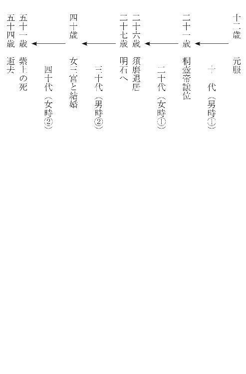

| 和歌で楽しむ源氏物語 女はいかに生きたのか (角川短歌ライブラリー) | |
| 小島 ゆかり | |
| (2015) | |
和歌で楽しむ源氏物語
女はいかに生きたのか
小島ゆかり
本作品の全部または一部を無断で複製、転載、配信、送信したり、ホームページ上に転載することを禁止します。また、本作品の内容を無断で改変、改ざん等を行うことも禁止します。
本作品購入時にご承諾いただいた規約により、有償・無償にかかわらず本作品を第三者に譲渡することはできません。
本作品を示すサムネイルなどのイメージ画像は、再ダウンロード時に予告なく変更される場合があります。
本作品は縦書きでレイアウトされています。
また、ご覧になるリーディングシステムにより、表示の差が認められることがあります。
はじめに
光源氏の一生は、母・桐壺更衣の死ではじまり、妻・紫上の死で終わる。
母は、桐壺帝に愛されたあまり、周囲のねたみそねみに圧しつぶされるようにして亡くなった。「ええっ、まわりの嫉妬ぐらいで死ぬ？」というのは現代の感覚で、寵愛の度合がそのまま一族の権勢、ひいては帝王政治の支配権掌握につながってゆくのだから、それはそれは凄まじいものであっただろう。
まして男の子が生まれたのだから、さあたいへん。これが身分の高い女ならまだしも、「いとやむごとなききはにはあらぬ」（たいして重い身分ではない）方であったため、いっそう激しいジェラシーの嵐が巻き起こる。
更衣は、もともとは帝の衣服の管理をする職掌であるが、たいへん身近にお仕えする職務ゆえ、おのずから夫人となる場合が多い。その夫人の順位からいえば、中宮、女御、それから更衣。つまり夫人集団の中では第三グループ、中宮がいらっしゃらない場合でも決して第一グループのメンバーではないのだ。そしてもちろん、この順位は家柄や境遇による。
光源氏の母・桐壺更衣は、父大納言もすでに亡くなっていて格別の後ろだてもなかった。「そんな女が生意気だわ」「あり得なーい」というわけで、身分の高い女は言うまでもなく、同等の女たちや、より身分の低い女たちからも憎まれることになる。昔に限らず、女に限らず、嫉妬とはそういうものかもしれない。
物語のなかのこととはいえ、後年の江戸の大奥にも似た、愛欲と権力欲のどろどろの嫌がらせが繰り広げられたにちがいない。しかしそのあたりはほどよく書かれていて、どろどろ感が露呈されていないところ、さすが一流の文学である。
「世の人、光る君と聞ゆ」る皇子は、いわば母の死とひきかえに、世にもまれな美貌を授かったのである。
「さきの世にも御ちぎりや深かりけむ、世になく清らなる玉のをのこ御子さへ生まれ給ひぬ」（前世でも深いお約束があったのか、またとなくお綺麗な光り輝く王子さままでお生まれなさった）。
この文章をもって登場する主人公・光は、生まれ出た途端それとわかるほど、「世になく清らなる玉のをのこ御子」であったのだ。そのことに、一見はかなく思われる母・更衣の、追い詰められた女の底力のようなものを感じるけれど、むろん、そうでなければこの物語ははじまらない。
ところで、その光り輝く若君は、高麗の相人の意見を入れた父帝の決断で、源氏の姓を賜って臣下に下される。ここが大事なところです。時の天皇の子でありながら、はじめから皇位継承権をとりあげられた境遇が、この美貌の皇子の人格形成に微妙な屈折をもたらし、また、臣下に下されたゆえの身軽さ、フットワークの軽さが、その後の彼の恋愛遍歴を可能にしたのである。
だからこそ、『光君物語』ではなく『源氏物語』なのだと思う。
＊
さて、十二歳で元服してから、享年と思われる五十四歳（推定）まで、物語の表舞台に登場する約四十年の間、光源氏の人生には、男時と女時とがほぼ十年の周期をもって交互に訪れている。
男時は運がよくていろいろなことがうまくいく時期、女時は反対に運が低迷してめぐり合わせの悪い時期。世阿弥の『風姿花伝』に、「男時。女時とてあるべし。──これ、力なき因果なり。」とある。馬場あき子著『古典を読む 風姿花伝』によれば、「物には、男時・女時ということがある。いかに努力しても効果が上らぬ下降運の時、これが『女時』である。不可抗力ともいうべき『時』の推移の変則である。（世阿弥はこれを長い人生にも、一年の芸能運にも当てはめつつ、女時にも自棄にならずに励んだ）」とのこと。
なんとなくセクハラ気味の言葉ではあるけれど、女時こそが人を育てるのだと思えば、大いに納得がいく。この「時の推移」に注目しながら光源氏の人生を俯瞰してみると、おおよそ次のような図式が見えてくる。
物語が華やかに展開する十代。左大臣家の娘・葵上と結婚し、六条御息所をはじめ、空蟬、夕顔、末摘花などとの恋愛遍歴を重ね、一方で義理の母藤壺と密通。紫上との出会いもこの時期である。夕顔の急死や、不義の子の誕生など、不穏なできごともあるものの、父・桐壺帝を強力な後ろだてとし、世に比類なき美貌と才能をもって青春を謳歌した男時と言えるだろう。
しかし、桐壺帝の譲位によって状況が変わる。朱雀帝の即位にともなう右大臣家の台頭。物の怪事件と正妻・葵上の死、そして六条御息所との別れ。桐壺院の崩御、藤壺の出家。朧月夜との破滅的な恋を経て須磨退居。須磨でのわび住まいと恐ろしい嵐の体験。二十代の大半は、十代の反動のように困難の多い女時であった。
ところが、二十七歳の春、夢のお告げに導かれた明石の入道との出会いにより、ふたたび男時の波が訪れる。風光明媚な明石の入道邸へ迎えられ、明石の君と出会う。やがて召還の宣旨が下り帰京。その後、冷泉帝（源氏と藤壺の息子）の即位、明石の姫君（源氏と明石の君の娘）の東宮（今上帝）への入内により絶大な権力を掌握。太政官の最高位である太政大臣を経て准太政天皇、つまり政界の実質的な支配者となる。この間に六条院の完成や、夕顔の娘・玉葛を引き取るなど、二十代の終わりから三十代は、十代とはまた別の、人生の絶頂期を迎える男時となった。
そして、女三宮を正妻として迎え入れた四十歳から、運命はふたたび翳りを帯びはじめる。柏木と女三宮の密通。紫上の病と死。その後、ひたすら紫上を偲びながら、おのずから源氏自身の命がしぼむように五十四歳で逝去したと思われる。
このような源氏の人生の経緯をおおまかに確認したところで、もう一度先の図にもどりたい。
十二歳の元服から五十四歳の死までの約四十年間に、ほぼ十年周期でめぐっている男時と女時のうち、前半の周期「男時①」「女時①」は、多く外的な要因によってもたらされ、後半の周期「男時②」「女時②」は、多く内的な要因によってもたらされていることに気づく。
時の天皇の子として生まれ出たことも、たぐいまれな美貌と才能に恵まれたことも、いわば天からの贈り物、外からもたらされたものであり、続く運命の暗雲もまた、父帝の譲位にはじまる政治の力学、外側からの力に押し流された結果といえる。
ところが須磨において、光源氏は罪の意識を深く抱えた苦悩と内省の人となる。慎み、畏れ、祈り、仏道に励む、そんな源氏自身の人間的成長と内的エネルギーが次の男時を引き寄せる。そして最後の女時もまた、自身で引き寄せてしまう。女三宮を正妻として迎え入れたことが、紫上の忍耐の最後の結び目を切ってしまった（詳しくはのちに）。つねにかたわらにあって、源氏を愛し続け支え続けた妻・紫上の心が離れてしまったのだから、もう幸福ではありえない。最晩年の源氏はまことに悲しい姿をもって物語の舞台から消える。
このごろ流行りの、「勝ち組」「負け組」という言葉を借りるなら、愛と政治のドラマ『源氏物語』において、主人公光源氏の人生は、「愛の勝ち組時代（男時①）」から「政治の負け組時代（女時①）」へ、そして「政治の勝ち組時代（男時②）」から「愛の負け組時代（女時②）」へと推移するのである。

『源氏物語』の成立事情について、わたしは詳しくないが、じつに見事な構成であると思う。
そしてこのすばらしい作品が、王朝文学ゆえに、歌物語であることがうれしい。『伊勢物語』のような歌を主とした作りではないため、そのストーリーほどには知られていない『源氏物語』の歌が、個々の人物像、とりわけ女性たちの愛と人間を考える上で、たいへんに重要な役割を果たしているのではないか。歌詠みのわたしにはそう思われてならない。
なぜなら、歌は「真言」であるから。
この場合の「真言」の意味を説明するのは難しいが、仏教的な意味ではなく、文字通り「真実の言」。ただし、よく言われる「表には見せない本当の気持ち」というのとはちょっとちがう。「見せない」のではなく、むしろ自分自身にすら見え難い心の奥底の真実なのである。和歌・短歌の長い歴史のなかで、歌詠みはだれも、この「心の奥底の真実」と出会う瞬間を知っている。
もともと日本文学の中心には和歌があり、『源氏物語』は、『古今集』や『拾遺集』なくしては語れない。作者の紫式部もむろん歌詠みである。ストーリーテラーとして物語を組み立て、細やかに場面を作ってゆく一方で、たとえば愛の歌において、個々の登場人物の内側深くに入り込み、その心の奥底の声を代弁したとは言えないだろうか。それぞれの愛の物語において、歌には、散文部分よりいっそうきわやかな女君たちの心の姿が見える気がする。
そこで、光源氏の人生を彩った女君たちの物語を、とりわけその愛の歌を深く覗き込むことによって、また、ときに直観による無謀な読み解きを試みることによって、考えてみたい。女はいかに愛し歓び、いかに悲しみ耐え、そしていかに生きたのか。古典の名作『源氏物語』についてものを言うのは畏れ多いけれど、専門家でないわたしは専門的なことを知らないからむしろ自由だ。この自由を力に書いてみようと思う。
※本書は『短歌』平成二十二年一月号から平成二十五年九月号まで連載の「女はいかに─『源氏物語』の愛の歌」に加筆修正したものです。なお本書収載に際し『源氏物語』の原文を適宜省きました。
引用・転載について
※本文中の源氏物語の原文、現代語訳はすべて『源氏物語』玉上琢彌訳注（角川ソフィア文庫）によります。なお訳文については一部、諸種の校訂本を参考に書き改めた箇所があります。
※『源氏物語』以外の訳文に関しては『日本名歌集成』（秋山虔他編 学燈社）および左記の文献を引用または参考にしました。
『万葉集』＝伊藤博著『萬葉集釋注』（集英社）
『古今集』＝小沢正夫校注・訳『古今和歌集』（新編 日本古典文学全集）小学館
『伊勢物語』＝福井貞助校注・訳『伊勢物語』（新編 日本古典文学全集）小学館
『新古今集』＝峯村文人校注・訳『新古今和歌集』（新編 日本古典文学全集）小学館
『後撰集』＝片桐洋一校注『後撰和歌集』（新日本古典文学大系）岩波書店
『拾遺集』＝小町谷照彦校注『拾遺和歌集』（新日本古典文学大系）岩波書店
『後拾遺集』＝久保田淳・平田喜信校注『後拾遺和歌集』（新日本古典文学大系）岩波書店
『千載集』＝片野達郎・松野陽一校注『千載和歌集』（新日本古典文学大系）岩波書店
『催馬楽』＝臼田甚五郎校注・訳『催馬楽』（新編 日本古典文学全集）小学館
桐壺帝と桐壺更衣
桐壺更衣は光源氏の母。桐壺帝の寵愛を一身に集めており、第一皇子（のちの朱雀帝）の母弘徽殿女御らの嫉妬を買ってしまう。桐壺帝は光源氏の父で『源氏物語』に登場する最初の帝。
桐壺更衣の一首
光源氏の母・桐壺更衣には、一首だけ歌が残されている。その場面を見てみよう。
（更衣）かぎりとて別るゝ道の悲しきにいかまほしきは命なりけり
きまりもあることとて、そうそうお止めあそばすわけにもゆかず、お見送りあそばすことさえ思うにまかせぬお心許なさを、いいようもないことに思し召す。とても美しく可愛らしい人が、すっかり面やつれして、しみじみ無常を感じながらも、言葉にしては申しあげることもできず、正体もなくぐったりしておいでなのをご覧あそばすと、前後のご分別もおなくしあそばして、あらん限りの事を涙ながらにお約束あそばすのだが、お返事もおできにならない。まなざしなどもひどくだるそうで、つねよりもいっそうなよなよと夢うつつの状態で横になっているので、どうしたものかと途方におくれあそばす。（中略）（主上）「死出の旅路にももろともにとお約束なさったのだもの、まさか私をおいて一人では里へも行けはすまい」と仰せあそばすのを、女もたいそうもったいないことに存じあげて、
（更衣）「今を限りとしてお別れしますこの悲しさ、お別れせず生きながらえとうございます
ほんにこんなことと存じておりましたら」と息も絶え絶えで、申しあげたそうな事はありそうなのだが、ひどく苦しくだるそうなので、このままで生死のほどもお見とどけあそばそうと思し召すのに、（「桐壺」）
※『源氏物語』玉上琢彌訳注（角川ソフィア文庫）より転載。以下、源氏物語の原文・現代語訳はすべて同著による。以後同著の巻名のみ示す。
病状の悪化した桐壺更衣が、宮中を退出するところ。退出後ほどなくこの世を去る更衣の、いまわの場面と言ってよい。訳の「きまりもあることとて」の原文「限りあれば」の「限り」とは宮中の掟。死は穢れとされたゆえ、后妃でさえ宮中で死ぬことは禁忌であった。
実は、ここに至るまでに、帝以外はみな更衣の退出を急いでいる。だれよりも更衣自身がみずからの病状を悟り、禁忌を冒す恥をさらすことのないよう里下がりを希い、なかなか承諾しない帝に更衣の母が泣く泣く訴えたりして、ようやく退出が決まったのである。
それにもかかわらず、帝はなお引き留めたくて、あとさきの分別も失くしておろおろしている。そのほかのさまざまな場面から察すると、桐壺帝は思慮深く政治力もある立派な方のようだが、更衣のこととなると途端に分別を失って、いっそ禁忌を冒してでもこのまま見届けたいとまで思ってしまう。これは一人の人間として見れば愛すべき欠点かもしれないが、一国の帝王としてはちょっとまずい。ついでに言うと、まずい質ほど遺伝しやすいものらしく、特定の女性に対して分別を失くしてしまうこのＤＮＡは、しっかりと息子・光に受け継がれている。
一方、更衣はもう危篤状態である。正体もないような朦朧とした意識のなかで、彼女はいったいなにを思ったのだろうか。
最後の力をふりしぼって詠んだ一首。初句の「かぎりとて」は、その前の帝の言葉「限りあらむ道にも、おくれ先だたじと契らせ給ひけるを」の「限りあらむ道」（死出の旅路）を受けた言葉。「今を限りとしてお別れしますこの悲しさ、」との上句は、これまでの更衣のイメージどおりのはかない物言い。ところが下句はちょっとちがう。「いかまほしきは命なりけり」（お別れせずに生きながらえとうございます）、つまり「生きたい」と言っている。「いかまほしき」は、「行きたい」と「生きたい」の掛詞。他の部分では「行く」は「ゆく」となっている。
いつもなよなよとはかなげで、愛されるほどに妬まれそねまれ、今にも消え入りそうな女であった更衣が、歌のなかではこんなにきっぱりと意思表示していることに驚く。あー、そうだったんだ。針のむしろのようなつらいこの世から早く逃げ出したかったわけではなく、やっぱりこの人も生きたかったんだ。
注釈書はここで次の引歌をあげている。
別れ路はこれや限りの旅ならんさらにいくべき心地こそせね
道命法師『新古今集』
「修行に出で立つとて、人のもとにつかはしける」との詞書がある一首。これが最後の旅になるかもしれないという法師の一首に用いられた、「行くべき」と「生くべき」の掛詞を思い出しなさいよ、と。
しかし、紫式部の知らないその後の短歌史をあらかじめ知っているわたしには、この掛詞よりも断然「命なりけり」が気になる。
年たけてまた越ゆべしと思ひきやいのちなりけり佐夜の中山
西行『新古今集』
あかあかと一本の道とほりたりたまきはる我が命なりけり
斎藤茂吉『あらたま』
二十代末の修行の旅で越えた佐夜の中山を、歳月を経て再び越えて旅行く、六十九歳の西行の歌。秋の代々木の原で、太陽に照らされた一本の道に自分の歩むべき道を重ねた、三十二歳の茂吉の歌。
いずれ劣らぬ短歌史に残る名歌である。よくぞ生きていたことだなあと、命への深い愛惜をこめた西行の「いのちなりけり」と、これから行くべき道へ思いを馳せつつ、いまある命を鮮やかに示す茂吉の「命なりけり」。まったく同じ表現でありながら、たたまれた時間の重量の差が、おのずから異なるニュアンスを滲ませている。
桐壺更衣の「命なりけり」はどうだろうか。明らかに、生きたいという願望の表現であるが、一首の要にある接続助詞「に」が、まことに微妙な働きをしている。一応順接でありながら、上句と下句ではその情念の深さがちがう。しかもここでしばしリズムがたゆたうことによって、ともすれば逆接のような感じさえ覚える。西行の歌のきわやかな四句切れ、茂吉の歌のおごそかな三句切れに対し、切れをもたない更衣の歌の中で、この接続助詞「に」が、たましいの声を導くように暗くゆらめく。
そしてあっと、思い至る。桐壺更衣は、物語のはじめに登場し、あっけなくこの世を去る。しかし、その後に登場する物語の中心をなす女たち、藤壺も紫上も、いわば更衣の身代わりとして桐壺帝や光源氏に愛されるのだ。すると、この物語を動かしてゆくのは、亡くなった更衣の面影。更衣は死後もずっと、物語の陰に生き続けるのである。
なによりも、彼女は死とひきかえに主人公光源氏をこの世に置いていった。冒頭で引用した場面に先立って、若宮・光の三歳の袴着の儀式が行われる。それは、皇太子になるべき一の宮（のちの朱雀帝）の儀式に劣らぬほど盛大に行われ、またまた世間の非難の種になるのだけれど、「この御子のおよずけもておはする御かたち心ばへ、有り難く珍しきまで見え給ふを、えそねみあへ給はず。ものの心しり給ふ人は、かゝる人も世に出でおはするものなりけりと、あさましきまで、目をおどろかし給ふ」（この王子がだんだんご成人なさってゆくご器量ご性質が、またとないまでにお見事にお見えなさるので、憎みとおすことはおできにならない。正しい判断のできる方は、こんな方もこの世にお生まれなさることもあるものだった、と、あきれるばかり、目をみはっていらっしゃる）（「桐壺」）と続く。
あまりの誉めたたえぶりに、むしろこちらが呆然としてしまうけれど、しかしここはたいへん重要なところだ。つまり、帝に愛されすぎて人々に妬まれる点においては、母・更衣と同じ運命を負う息子が、その母と決定的にちがうのは、「えそねみあへ給はず」、人々が憎みとおすことなどとてもできないほどのオーラを放っているということだ。
『源氏物語』が描かれた当時の物語文学の性質をかんがみれば、主人公には当然スーパースターが望まれただろう。ただ、「はじめに」で記したように、そうした文学としての有り様から少し離れて、なるべく生身に近いイメージで登場人物の女君たちに寄り添ってみると、この異様なオーラを放つ若宮の姿には、屈辱を撥ね返すすべもなく死ななければならなかった母・更衣の、追い詰められた女の底力を見る思いがして、ぞくっとする。「いかまほしきは命なりけり」にこめられた更衣の情念は、おそらく作者・紫式部が意図した以上の力をもって、千年後のわたしを捉える。
光源氏の物語は、この歌からはじまるのだ。
かぎりとて別るゝ道の悲しきにいかまほしきは命なりけり
桐壺帝の愛の歌
『源氏物語』には四人の天皇が登場する。桐壺帝、朱雀帝、冷泉帝、今上帝。朱雀帝は、桐壺帝と弘徽殿女御の息子で光源氏の異母兄。冷泉帝は、表向きは桐壺帝と藤壺の息子であるが、じっさいは源氏と藤壺の密通により生まれた子。今上帝は、朱雀帝の息子で、東宮時代に明石の姫君（源氏と明石の娘）が入内した。
物語のなかには、桐壺帝四首、朱雀帝八首、冷泉帝八首、今上帝二首の歌が残されているが、他の天皇の歌がすべて贈答歌であるのに対し、桐壺帝だけが独詠歌を詠んでいる。その前後の場面を見てみよう。
桐壺更衣亡きあと、喪中ゆえに若宮（光源氏）も宮中を退出、しばらくは更衣の母・北の方のもとに預けられることになった。二人の姿を同時に宮中から喪った桐壺帝は悲しみにくれるばかりで、他の女性たちも身辺から遠ざけ、「なきあとまで人の胸あくまじかりける、人の御おぼえかな」（「死んだあとまで胸のおさまらないご寵愛ぶりだこと」）（「桐壺」）などと、弘徽殿女御に悪態をつかれたりしている。そうこうするうちに夏が過ぎ、秋。
野分だちて、にはかに肌寒き夕暮のほど、つねよりもおぼし出づる事多くて、ゆげひの命婦といふを遣はす。夕月夜のをかしきほどに出だし立てさせ給ひて、やがてながめおはします。かうやうの折りは、御あそびなどせさせ給ひしに、心ことなる物の音をかき鳴らし、はかなく聞え出づる言の葉も、人よりは異なりしけはひかたちの、面影につと添ひておぼさるゝにも、やみのうつゝにはなほ劣りけり。
命婦かしこにまかでつきて、かど引き入るゝよりけはひあはれなり。やもめずみなれど人ひとりの御かしづきに、とかくつくろひたてて、めやすき程にて過ぐし給ひつる、やみにくれて伏し沈み給へるほどに、草も高くなり、野分にいとゞ荒れたるこゝちして、月かげばかりぞ、やへむぐらにも障らずさし入りたる。
風も野分めいて、急に肌寒いある日の夕暮れ時、常にもましてお思い出しになることが多くて、靭負の命婦というのをお遣わしになる。夕方、月のよい時分にお遣わしなされて、そのまま思いにふけっておいでになる。このような夕にはご合奏などあそばしたものだったが、かくべつ巧みに琴を奏し、ふとお耳にお入れ申す歌の句も人の及ばぬものであったと、今はなき人の様子や面ざしが、幻になってひたと寄りそっているようにお感じになるが、それも「闇のうつつ」（くらやみで抱いたのでは夢で見るにもさしてまさらぬ）よりさらにはかないものであった。
命婦は更衣の里に到着して、門内に車を進めるなり、邸内の様子に哀れを感ずる。男あるじなき家ながら更衣一人をもりたてるために、何かと手を入れては見苦しからぬように暮らしていらしったのが、子を先立たせた悲しみから涙にくれているうちに、草も生い茂り、野分の風にひとしお荒れはてた感じがして、ただ月の光だけが、生い茂った雑草にもかまわずさしこんでいた。（「桐壺」）
ここは名文である。これまで多分に野次馬的興味でストーリーの展開に引き込まれてきたわたしたちは、ここで胸に沁み入るような自然描写と出会い「ああ......」とため息をもらすのだ。
そして二首の引歌が重要な働きをしている。
むばたまの闇の現はさだかなる夢にいくらもまさらざりけり
読人しらず『古今集』
人の親の心は闇にあらねども子を思ふ道にまどひぬるかな
藤原兼輔『後撰集』
一首目は、桐壺帝が更衣を偲ぶ「やみのうつゝにはなほ劣りけり」の部分の引歌。「夜深い闇の中でのはかない現実の逢瀬は、ありありと見た夢の中での逢瀬にいくらもまさらないことです」との恋の歌。二首目は、亡き娘を思う母・北の方が悲しみにくれる「やみにくれて伏し沈み給へるほどに」の部分の引歌。「子をもつ親の心は分別をもちあわせながら、わが子を案ずるということになると、判断がつかなくなって惑ってしまうものですね」との雑の歌。作者の藤原兼輔は紫式部の曾祖父、引歌として最多出の作でもある。
「闇」というキーワードを共有しつつ、桐壺帝は恋の闇に、北の方は子を思う闇に惑う。男は女ゆえの闇に惑い、女は子ゆえの闇に惑うというこのパターンは、のちに桐壺帝没後の源氏と藤壺の場合にも、さらに千年後の今日にもさほど変わることなく繰り返されている。人の心はつくづく情けなく愛しい。
惑う者同士、お二人は命婦を通して手紙を交わし、歌を交わす。ここでは桐壺帝の贈歌だけを見ておく。
御所を吹き渡る風の響を聞くと、母君の里にすごしている若宮の上が思われてならぬ（「桐壺」）
宮中をたとえた歌枕・宮城野は萩の名所。そして「宮城野の小萩」と言えば、赤染衛門の歌「荒く吹く風はいかにと宮城野の小萩が上を人の問へかし」（『新古今集』）と重なる。赤染衛門の歌は、「昨夜の野分はどうだったかと、幼い子を少しは見舞ってくださいよ」との、つれない男への伝言。やはり野分のころである。
趣向は同じながら、桐壺帝の歌は第三句「風の音に」に、しばし風の音を聴くようなリズムの停滞が生じて魅力的である。語り伝え聴き伝え、という本来のスタイルを思い起こすと、語り手も聴き手もこの「風の音に」で、そろって眼を遠くしたにちがいない。
このあと、母君からの返書や贈り物を携えて命婦が帰参。桐壺帝の独詠歌二首が詠まれる。
（主上）尋ねゆくまぼろしもがなつてにてもたまのありかをそこと知るべく
（主上）雲の上も涙にくるゝ秋の月いかですむらむあさぢふのやど
（主上）更衣の魂をたずねて行く幻術士がほしい。魂のありかが、どこであるか知るために
絵にかいた楊貴妃の姿は、すぐれた絵師であっても筆の力には限度があることゆえ、まことに生気にとぼしい。太液の芙蓉未央の柳に似る姿だと長恨歌には言う。唐風の装束をした姿は、端麗ではあったであろう。が、しかし、更衣のやさしく愛らしかったのをお思い出しあそばすと、花の色にも鳥の音にも譬えようはありはしない。朝晩の言い草に、天ならば比翼の鳥に、地ならば連理の枝に、いついつまでも離れずにとお誓いあそばしたのに、思うにまかせなかった寿命が、長い恨みである。
風の音につけ、虫の音につけて、ただ悲しく思し召すばかりであるのに、弘徽殿では長らく上の御局にもお上りなさらないし、月が美しいので夜が更けるまで管絃の遊びをなさっているのである。まことに思いやりのない、不快なとお聞きあそばす。このごろのご様子を拝している殿上人や女房などは、苦苦しく聞いているのであった。じつに性格が強い、理知的にすぎるお方なので、更衣の死などなにほどのことでもないと問題にもなさらずにお振舞なさるのであろう。
月も沈んだ。
（主上）涙のために宮中でさえうすぐらく見える月、どうして草深い更衣の里で澄んで見えようぞ（「桐壺」）
「なき人のすみか尋ねいでたりけむしるしの釵」（なき人のすみかを探し出したという話の、その証拠の釵）、また一首目の「尋ねゆく......」の歌はいずれも「長恨歌」に由る。楊貴妃の死を悲しんだ玄宗皇帝が、死者の魂を探し当てるという幻術士を雇い、幻術士が貴妃の形見の釵を持ち帰ったというもの。母君からの贈物は、更衣の衣装一揃いと髪結いの道具だった。
それにしても弘徽殿女御はいやな役回りで気の毒になる。決して浮かれ騒いでいるわけではないだろう。むしろ彼女こそ、むなしさを振り払うのに懸命な気もするけれど、それは現代人のわたしの考えすぎかしら。物語を盛り上げ、読者をはらはらわくわくさせるのに欠かせない方である。
二首目の「雲の上も涙にくるゝ秋の月いかですむらむあさぢふのやど」は、母君への思いとともに、なによりも若君への思いであっただろう。
さて、歌の内容はともかく、この二首が独詠歌であることに注目しなければならない。和歌集の部立（分類）としての「相聞」は多く男女の恋愛をテーマとするが、大きく捉えれば和歌はすべて相聞である。日常の言葉ではない特別の言葉である歌をもって、人々は愛する人と、自然と、亡くなった人の魂と対話し、神に祈った。それゆえ独詠歌は、人為を超えた何かへの呼びかけとして、贈答歌よりもいっそう深い真言性を帯びる。
桐壺帝の独詠歌は、亡き更衣の魂と若宮への、愛と祈りの言葉なのだ。そして、ここではまだ幼い若宮が、こののち物語の主人公としてめざましい存在となり、さらにその生涯を終わろうとするとき、多くの独詠歌を詠む。そこに、驚くべき仕掛けが待っている。それは「幻」の巻までおあずけです。
ちなみに、桐壺帝のもう一首の歌は、源氏が元服し、左大臣家に婿として迎えられるときの、左大臣への贈歌。愛する息子の後ろだてとして、末長い縁を約束させる歌である。
桐壺帝が残した四首は、いずれも亡き妻への、遺された息子への愛の歌であった。残念ながら桐壺帝には遺詠がない。そのことの意味も、いずれわたしなりに謎解きをしてみたいと思う。
雨夜の品定め
ある夜光源氏の宿直所に頭中将が訪れる。頭中将は左大臣家の長男（葵上の兄）で、光源氏の親友でもある。人生経験豊富な左馬頭と藤式部丞も加わり、女性の善し悪しについて語り合う。
平安時代の女性談義
「桐壺」の巻に続く「帚木」の巻の前半には、平安時代きっての女性談義が展開されている。「雨夜の品定め」として有名な段である。これは、のちに「夕顔」の巻に記された次の文章による。
「かやうのなみ〳〵までは思ほしかゝらざりつるを、ありし雨夜の品定めののち、いぶかしく思ほしなるしな〴〵あるに、いとゞくまなくなりぬる御心なめりかし」（このような身分の女まではお思いかけもなさらなかったのに、いつかの雨夜の品定め以後、知りたくおなりになった階級がいくつかあって、いっそうおひらけなさった君なのであろうよ）（「夕顔」）
源氏が、一夜の関係をもった空蟬を思い起こす場面である。「帚木」の巻後半の女主人公となる空蟬についてはあとで書くことにして、「帚木」での女性談義が、源氏の興味の対象を拡大したのは確かなようだ。「いとゞくまなくなりぬる御心なめりかし」とはまたすごい。
「雨夜の品定め」の「品」とはつまり、身分・階級、またそれゆえの人の品格のことである。古く天武・持統朝に編纂・施行（六八九年）された「飛鳥浄御原令」（大宝律令の基礎となった法典）には、一品から四品までの親王・内親王の品位（位階）が定められており、天皇を最高位とする身分制度を重んじる、歴史的な価値観を背景とする「品」なのである。
さて、「帚木」の巻は源氏十七歳の夏ということになっているが、わたしたちはまだ幼児の源氏しか知らないので、その後の成長ぶりを少し振り返ってみたい。
母・桐壺更衣亡きあと、祖母の北の方のもとに預けられたことは前にふれたが、やがて宮中に帰参。その後ほどなく祖母・北の方が亡くなり、いよいよ若宮・光源氏が物語の中心人物としてクローズアップされてくる。
「月日へて若宮まゐり給ひぬ。いとゞ、この世のものならず、きよらにおよずけ給へれば、いとゆゝしうおぼしたり」（月日がすぎて若宮が参内なさった。前よりもいっそう、この世のものとも思われぬほど、お綺麗にご成長なさっていらっしゃるので、もしや短命ではないかと、ひどく気味わるくさえお思いになった）（「桐壺」）
「わざとの御学問はさるものにて、ことふえのねにも、雲居をひゞかし、すべて言ひ続けば、こと〴〵しううたてぞなりぬべき人の御さまなりける」（とくにお習いなさるご学問は言うに及ばず、音楽でも宮中の大評判をひきおこし、一つ一つ数えてゆくと、大仰すぎて、本当らしくなくなりそうなご様子であった）（「同」）
うわあ、すでに十分大仰な気もするが、とりわけ「きよら」「ゆゆし」「うたて」などの言葉に注目したい。「きよら」は、誕生の際にも用いられたが、美しさの表現のなかでも最高の誉め言葉であり、ごく限られた人にしか用いられない。また、「ゆゆし」「うたて」は、むしろ不吉な不気味な感じ。そうか、不吉なまでの美貌と才能ということか。不吉でもいいからそんなふうになってみたい。しかもこのころまだ六歳から七歳。そしてその美貌と才能ゆえに、この若宮は臣籍に下され、皇位継承権を失ったのである。
一方、なかなか傷心の癒えなかった父帝のもとに、先帝の四の宮・藤壺が入内した。亡き人に生き写しの世にもまれな器量よしとのこと。亡くなったお母さんにそっくりと噂される、若く美しくちょっぴり年上の女性が身近にやって来たのだから、光少年がときめくのも無理はない。かくして、帝がこの上もなく大切にされる源氏と藤壺のお二人を、世の人々は「光る君」「かゞやく日の宮」と申し上げる。
源氏は、十二歳の元服と同時に左大臣家に婿として迎えられるけれど、正妻となった葵上とはいまひとつしっくりいかず、亡き母が局（桐壺）とした淑景舎を自室として、なにかというと宮中で過ごしている。
そして十七歳。
光る源氏だなんて、名だけは大したもの、でも、実際は違うと言われるような失策が多いのに、その上、こんな恋愛事件の数々を後々の人まで聞き伝えて、軽率だとの噂を残しはせぬかと、隠していらっした内証事までも話し伝えたとは、罪深いお喋りだこと。じつは、とてもひどく世間に気がねして、まじめくさっていらっしたので、つやっぽいおもしろい話などはなくて、交野の少将には笑われなさったことでしょうよ。（「帚木」）
「帚木」冒頭のこの部分は、草子地と言われる語り手のナレーション。これから繰り広げられる場面の前口上として、主人公の光源氏はいまこんな感じよ、と読者に情報を提供しているのだ。
しかし、この情報は何度読んでもよくわからない。原文はむろん、訳文を読んでも、「どういうこと？」「ほんとはどういう人なの？」と疑問が点滅する。言うに憚るような過ちが多く、その上浮名を怖れて秘密にしている裏話まであるのに、じっさいはまじめくさってつやっぽい話などはないという。そしてまだ中将であったころの源氏は、世間並の色恋沙汰などは好まない性分でありながら、その実、人目を忍ぶ不都合な恋の惑いもないわけではなかったと続く。うーむ、ややこしい。
もしかしたら、このややこしさは語り手の作戦なのかもしれない。わかるようでわからない複雑な青年像。こののち展開されるさまざまな人生と恋の場面を想定すると、主人公の人間像がそう簡単にわかってしまってはつまらない。相反する面を複雑に抱え込んだ憂い多きこの青年こそ、新しい時代のヒーローにふさわしい。そう考えると、紫式部はやはり、実に先見性のある優れた作家だと思い至る。
色好みの話題というので、二人の人物が引き合いに出されている。一人は「交野の少将」。「語釈」には、「交野の少将物語（「散逸古物語」）の主人公。美しい女ならもろこし新羅まで求めよう、と言った」とある。どんな物語だったのか。「交野の少将には笑はれ給ひけむかし」といきなり出てきても不自然ではなかったのだから、よほど知れ渡った人だったにちがいない。
もう一人は在原業平。「しのぶの乱れや」のところに引歌がある。
春日野の若紫のすり衣しのぶの乱れ限り知られず
春日野の若い紫草のように美しいあなた方にお逢いして、私の心は、この紫の信夫摺の模様さながら、かぎりもなく乱れ乱れております
『伊勢物語』第一段「初冠」に見られる一首。「初冠」とは元服のこと。昔、ある男が元服をして、旧都奈良の春日の里へ鷹狩に行った際、たいへん優美な姉妹に出会って心が乱れ、思わず、狩衣の裾を切ってそれに歌を書いて贈った。それは信夫摺の狩衣であったとのこと。『伊勢物語』では、昔人の情熱的な優雅なふるまいをおもしろがり、趣向の基になったと思われる河原左大臣源融の歌をあげている。
みちのくのしのぶもぢずりたれゆゑに乱れそめにしわれならなくに
あなたのほかのだれかのせいで、陸奥のしのぶもじずりの模様のように、心が乱れだした私ではありませんのに。私が思い乱れるのは、あなたゆえなのですよ
『百人一首』にも見える有名な一首である（『古今集』では第四句が「乱れむと思ふ」）。
「しのぶもぢずり」は、福島県信夫郡（現在の福島市南部）独特の織り布の模様のことで、忍ぶ草などで摺った乱れ模様だろうと言われるが、正確なことはわからない。
それにしても、「しのぶもぢずり」また「しのぶの乱れ」という言葉には、いかにも忍ぶ恋に身を揉む古典和歌の情緒が妖しく香り立っているではないか。そしてさらに妖しいのは、「あながちにひきたがへ、心づくしなる事を、御心におぼしとどむる癖なむあやにくにて」の「あやにく」。生憎な、不都合な、の意味であるが、妙になまめかしい心ときめくひびきである。
ありがちな色恋沙汰などは好まない、まじめな貴公子らしくふるまっていた若き中将ではあったが、その実、人目を忍ぶあやにくな恋の惑いもないわけではなかった、なんて言われたら、だれしも続きが読みたくなる。
それぞれの体験談
時節は、陰暦五月の長雨のころ。場所は、宮中の物忌みにこもる源氏の宿直所。
「つれ〴〵と降り暮らして、しめやかなるよひの雨に、殿上にもをさ〳〵人ずくなに、御とのゐ所もれいよりはのどやかなる心ちするに、おほとなぶら近くて、書どもなど見給ふ」（雨の一日が無為に暮れて、物静かな夕べ、殿上の間もすっかり人少なで、源氏の君のお部屋も常よりはゆっくりした気分なので、灯に近く書物などご覧になっていらっしゃる）（「帚木」）
お芝居ならさしずめ、灯火の近くで読書をする源氏の姿にぽっとスポットライトが当たるところだろう。湿った宵闇の部屋で、灯火に浮かび上がる源氏の顔。やはり美貌でなければならない。
そこへ頭中将が顔を出す。左大臣家の長男で、葵上（源氏の正妻）の兄。母は桐壺帝の妹だから、源氏にとっては従兄であり義兄でもある。そしてまた、源氏に勝るとも劣らないほどの容貌と才能を兼ね備えた、親友でありライバルでもある。長篇小説『源氏物語』の最重要人物の一人として今後さまざまな姿を見せてくれることになるが、ここは、若さいっぱいの初登場の場面。
「近き御厨子なる色々の紙なる文どもを引きいでて、中将わりなくゆかしがれば」（おそばの御厨子の中の色さまざまの紙に書かれた手紙などをまで、つい引き出して、中将が無性に見たがるので、）（「帚木」）、いくら親友でもそんなことしていいのでしょうか。源氏はしぶしぶさしさわりのないものだけを見せ、中将は見られて困るものをこそ見たいと迫り、さらにそこにあるあれこれを拾い読みして、「これはＡ子さんでしょ？」「こっちはＢ子ちゃん？」などとあてずっぽうで言うなかに、見事正解あり、まったく見当ちがいあり。
十七歳の源氏といくらか年長の頭中将。いかにもありそうな若い二人のやりとりであるが、どんどん調子に乗る明朗で男っぽい頭中将に対して、内心おもしろいと思いつつ言葉少なに手紙をしまいこむ少々憂いを帯びた源氏。こんなところにもすでに、二人のタイプのちがいが見えて興味深い。
さて、源氏に贈られた恋文をきっかけに、頭中将が女性たちを上中下の三階級に分け、「中の品」つまり中流階級の女がもっとも個性的で魅力的だと話しているところへ、「世の好きもの」なる左馬頭と藤式部丞が加わり、いよいよ女性談義がはじまる。
「中の品」とは、四位、五位の殿上人（殿上には上がるけれど公家ではない人。公家は、太政大臣および左・右大臣と大・中納言、参議、三位以上の朝官）、それから受領階級。地方官（国守）である受領階級のなかには、お金持ちで娘を豊かに教育している者がいるとのこと。清少納言、赤染衛門、和泉式部などはみなこの階級である。むろん紫式部自身も。
「世の好きもの」とは、風流を好む者。今風に言う女好きとはややニュアンスが異なるようだ。
まずは左馬頭が語りはじめるが、四人のなかでは最年長の好き者のせいか、話が長い長い。
そんな人がいるのだとも、世間に知られずに、さびしく荒れはてた草深い家に、思いもかけず愛らしい女が閉じこめられていたりしたら、それこそ、この上もなく珍しいことに思われましょう。どうしてまあ、こんな所にこんな人が、と、予想に反した点、そこに、不思議に心が魅きつけられるものです。
父親は年とって、不様に太りすぎ、兄の顔も憎らしげで、想像したところ、格別なこともなさそうな奥部屋の中に、たいそう気位が高く、なんとはなしに身につけた才芸も奥深げに見えるといったようなのは、その才芸が僅かのものであったにしろ、どうして、予想外に思え興味をひかれずにおれましょう。（「帚木」）
おもしろい発言はほかにもあるのに、どうしてもこの部分に気持ちがひかれてしまう。それは「父の年老い、ものむつかしげに太りすぎ、せうとの顔にくげに、思ひやりことなることなき閨のうちに」（父親は年とって～）のところ。こうまでリアルに言われると深く頷くほかはない。しかも、かたわらで聞いていた藤式部丞の、「うぬ？ もしかしてうちの妹のことでは......」と気をまわす様子へ続くのだから、ますますわくわくしてくる。
その後、さまざまな女性のタイプに話は及び、やがて、妻にするなら身分や容貌よりは、ひねくれたところのない誠実で落ち着いた性格の人、ということで左馬頭の話は一段落する。なあんだ、結局そういうことね。
このあとめいめいの体験談が披露される。
①左馬頭の体験談、その一「指喰いの女」
美人ではないが、誠実で頼りになる女。ところが嫉妬深くて、痴話喧嘩の際に馬頭の指に嚙みついたとか。
②左馬頭の体験談、その二「浮気な女」
美人で華やかで風流好みの女。ところが浮気性で、思いがけず恥をかかされることがあるとか。
③頭中将の体験談、「内気な女」
しみじみ愛しく思い、子どもまでもうけていたのに、しばらく通いのとだえた間に、恨みごとひとつ言わずどこかへ去ってしまったとか。
④藤式部丞の体験談、「博士の娘」
男まさりの学識をもち、公事の相談相手にもなってくれるのはよいが、万事に女らしさがなくて辟易してしまったとか。ニンニクを食べたせいで逢瀬を断るエピソードは爆笑です。
それぞれにおもしろいけれど、頭中将の体験談に注目しなければならない。この「内気な女」こそ、のちに「夕顔」として登場する女性である。
山がつの卑しい垣根は荒れても、たまには露の情をかけてください、この撫子の花に
前栽（植えこみ）に咲きまじる花は、いずれもみなよいけれども、やはり常夏におよぶものはない
ひとり寝のむなしい床の塵を払う私の袖は涙の露にぬれますのに、そのうえ、嵐まで吹きすさぶ秋もやってまいりました（「帚木」）
女の一首目、「山がつ」は「山賤」。自分を卑下しての言葉だろう。「撫子」は、幼い子の比喩。「撫子」の名は、撫で慈しむ意だとも言われる。それに対して中将は、撫子をその別名「常夏」にすり替え、「常夏」の「とこ」に「床」をかけて、女への情を詠む。女は「床」を受けて、一人寝のわびしさに加え、嵐（たぶん嫌がらせ）のつらさをほのめかすけれど、はっきりとは言わずに慎ましく返歌する。
互いに贈答歌の心得をもった上手いやりとりであるが、まだ「女」として詠まれるこの二首は、「夕顔」の巻で詠まれる歌に比べると印象が淡い。夕顔とその娘の存在を暗示する作品と見てよいだろう。
なお、ずっとのちに、夕顔の娘・玉葛が美しく成長して物語に姿を現わすことになるが、源氏がこのときの頭中将の話をなつかしんで玉葛と歌を詠み交わす場面がある。その巻名を「常夏」と称ぶ。
ところで女性談義はどうなったかというと、「いづかたによりはつともなく、はて〳〵はあやしきことどもになりて、明かし給ひつ」（どちらにどう落着するともなく、しまいには変な話にまでなって、夜をお明かしになってしまった）（「帚木」）とのこと。やっぱり。
もうひとつ大事なことを忘れていました。この女性談義の間ひたすら聞き役に回っていた源氏はどんな様子だったかというと、「白き御衣どものなよよかなるに、直衣ばかりをしどけなく着なし給ひて、紐などもうち棄てて、添ひ臥し給へる御ほかげ、いとめでたく、女にて見奉らまほし」（白いお召物の柔らかなのに、直衣だけを無雑作にお召しなさって、紐などもそのまま、物によりかかっていらっしゃるお姿は灯に輝いて、とてもお美しく、女と見たいお姿である）（「帚木」）。じめじめした梅雨の夜はラフなファッションで、美しい人はあくまで美しい。
空蟬
「雨夜の品定め」の翌日、光源氏は方違えのため紀伊守邸を訪れる。その邸で空蟬に出会い、契りを交わしてしまう。空蟬は美しい光源氏の求愛に悩み、源氏を拒むようになる。
空蟬と伏屋
「雨夜の品定め」によって、中流貴族の女性への興味が芽生えた源氏に、その中流の女との出会いが訪れる。紀伊守の老父伊予介の後妻、空蟬である。
女性談義の翌日、ようやく天気もよくなり、源氏は宮中を退出して久しぶりに左大臣家の正妻・葵上のもとを訪れる。左大臣への気がねもあっただろうが、さんざん女性の話題を聞かされた後なので、少しは奥さんが恋しくなったのではないかしら。薹が立った古女房ならそんな気も起こらないだろうけれど、葵上はまだぴかぴかの若奥さんだもの。行ってみると、邸の様子も女君もまことにすっきりとして気品高くすてきだ。しかししかし「あまりうるはしき御ありさまの、とけがたく恥づかしげに思ひ静まり給へる」（あまり端正なご様子が、うちとけなくて、気づまりを感ずるほど取りすましていらっしゃるので、ものたらなくて）（「帚木」）。過ぎたるはなお及ばざるがごとし、というべきか。
ちょっと残念な気持ちでいるところ、まあ都合よく、この夜は宮中から左大臣家の方角が方塞がりで、方違えをしなければならなくなる。方塞がりとは、陰陽道で、中神（天一神）のいる方向に向かうことを避ける信仰。源氏は急きょ、左大臣家の輩下・紀伊守の別邸に行く。そこにたまたま空蟬が来ていた。
噂によれば、空蟬はもともと桐壺帝に入内を予定されていたのに、父の死によって入内が取りやめになり、その後伊予介の後妻になったとのこと。父娘と言ってもよいほどの年齢差であった。源氏は興味津津。みなが寝静まったあと、気配をうかがいながら、けっこう大胆に踏み込んでゆく。突然のことに驚き怯え、また、身近く仕える女房の思惑までも死にそうなほどにつらい（それは人妻ですからねー）空蟬を、源氏は「いとほしけれど、例の、いづこよりとうで給ふ言の葉にかあらむ、あはれ知るばかり」（君はかわいそうにお思いになるが、いつもの通り、どこからお引き出しになるお言葉なのか、お情の深さのしみじみとわかるように）（「帚木」）、訴え口説くのである。十七歳の男子が......。現代とは年齢の感覚がちがうとはいえ、やはり天性の才能なのだろう。
しかし女を甘く見てはいけない。空蟬は源氏の「おぼしくたしける御心ばへの程」（おさげすみになったお心のほど）（「帚木」）も十分に察し、みずからの境遇もわきまえ、むりやり契りを結ぶはめにはなっても、心までは開かなかった。
（源氏）つれなきを恨みもはてぬ東雲にとりあへぬまで驚かすらむ
（空蟬）身のうさを嘆くにあかであくる夜はとり重ねてぞねも泣かれける
（源氏）お心を思いきりせめたいのに、もう空が白みかけ、鶏は忙がわしく起きろと叫ぶ
女は、自分のことを考えるとこの君には不似合いで恥ずかしく、身にあまるおあつかいもなんとも感ぜず、いつもは、かた苦しくて気にくわぬ男と軽蔑している伊予の介のいる方角に思いが馳せて、もしやあの人の夢に見えはしないかと思うと、そら恐ろしく気がひける。
（空蟬）身の不運を嘆いても嘆いても嘆きたりないうちに夜はあけて、鶏とともに私も、声をあげて泣いてしまいます
ぐんぐん明るくなってくるので、襖の所までお送りになる。室内も室外も人さわがしいので、襖をしめてお別れになる時、心細くて、この襖一枚が二人の間を隔てる関のように思われた。（「帚木」）
源氏と空蟬の最初の歌の贈答は、互いにそれぞれの苦しい心情を訴え合うものとなった。源氏の歌に比べ、より細やかな緩急のある歌のリズムが、空蟬の複雑な嘆きを感じさせる。
そしてこのとき、夫・伊予介を思う空蟬の気持ちにふと立ち止まる。罪悪感や、露見したらどうしようという不安のほかに、あるいは、平穏や安堵の象徴としての野暮ったい夫に、肉親にも似たなつかしさを覚えたのではなかっただろうか。こんな部分にも、空蟬という女性の思慮深いやさしさが滲んでいる気がする。
さて、十七歳の源氏にとっては、まさに関所のような苦しい恋がここからはじまる。
ひと夜の契りののち、空蟬は二度と源氏に逢おうとはしない。こんなはずじゃあなかった源氏は自尊心を傷つけられ、それがさらに執着を深めることになり、焦る。空蟬の方は、父の生前に源氏に逢えたならという果たせぬ夢と現実との間で悶々としつつ、かろうじて自分を律しようと苦悩する。
時間は巻き戻せない。そして、もしもっと早く出会っていたら、空蟬が人妻でなかったら、空蟬が拒まなかったら、源氏は決してこれほど空蟬に執着することはなかっただろうとの想像を容易に読者にうながす。それゆえいっそう彼女の哀れが浮き立つのである。
源氏は、空蟬の弟・小君を召して文使いにし、姉の空蟬とは結婚前にすでに恋人だったと噓をついて仲介役を頼んだり、うまく事が運ばないからと、まだ十二、三歳の小君にぐちぐち不満を言いつのったりする。光さん光さん、ちょっとだらしないんじゃないの。ないものねだりで駄々をこねる幼稚な貴公子源氏は、ここでは脇役である。「女の宿世は、浮かびたる」（女の運命はあてにならない）と語られる、その運命の悲哀をかみしめる空蟬の姿こそが、この恋物語のテーマであろう。
次の贈答歌がそれを明かしている。
近づけば姿が消えてしまうという帚木、その気持ちも知らないで、園原の野道に、ばかみたいに踏み迷ったものだ
賤しい生まれゆえ居たたまれず消えてしまう帚木なのでございます（「帚木」）
「帚木」「園原」「伏屋」、この三つのキーワードを読み解かなければならない。まず引歌を見てみよう。
園原や伏屋に生ふる帚木のありとは見えて逢はぬ君かな
坂上是則『新古今集』
第四句「ありとて行けど」の形もあり。「園原」は、信濃国の歌枕で、長野県下伊那のあたり。この園原の森にあって、梢が帚のようで、遠くから見ると見えるが近寄ると見えなくなるという伝説の木が、「帚木」である。「伏屋」はもともとみすぼらしい家の意味であるが、この是則の歌により、「園原の伏屋」と地名のように詠まれるのが普通になったという。
顕昭著『袖中抄』（鎌倉時代初期の歌学書）によれば、「布施屋」は旅人のために設けた公設の緊急宿泊所のことであるらしい。園原は木曾路の難所である御坂の麓であるから、つじつまが合う。
空蟬を園原の帚木にたとえて詠んだ源氏に対して、空蟬は「数ならぬ伏屋」と返している。この言葉は重い。歌枕園原の「伏屋」の意味の奥に、みすぼらしい家の「伏屋」を、また旅人のための緊急宿泊所としての「布施屋」を、さらに「臥す」に通う音を重ねて読みとるとき、「あるにもあらず消ゆる帚木」と歌い収めるほかはなかった諦念の深さに思い至る。
空蟬は耐えている。源氏よりもはるかに強く耐えている。この歌は返歌であると同時に、空蟬自身のために詠んだ一首なのかもしれない。
光源氏の覗き見の熱意と集中力
光源氏が関係をもった女性は、主な女君のほかにも、仲介をしてもらう女房や、お目当ての女君のところへ通う行き帰りにちょっと寄ってしまう女性や、かなり多くいらしたのではないかと想像する。まったくいい気なものだわと思うけれど、多くはこれよりのちのこと。ここではまだ恋の遍歴ははじまったばかり、多分に子どもっぽい十七歳の青年である。
その源氏にとって痛恨の一夜が訪れる。
再びの訪問もあっさりかわされてしまった源氏は、情けなく悔しく、いっそう空蟬への執心がつのる。しかし、ひと夜の契りを結んだ空蟬が忘れられないというより、この僕が相手に逃げられるなんてそんなばかな......、との感じが強く、どうもまだ底が浅い。おまけに、またしても小君に「なんとかしてくれよぉ」と泣きついている。小君は幼いなりに知恵をしぼって、三度目のチャンスへと源氏を導く（昔の子どもは、こんなことにも知恵をしぼっていたのだ）。
紀伊守が任国に下り、女同士がのんびりとくつろいでいる夕方、小君の手引きで源氏は薄闇の邸内に紛れ込む。その日はたまたま紀伊守の妹（空蟬にとっては義理の娘にあたる）・軒端荻が来ていた。様子を見に行った小君を待つ間、源氏は簾の隙間から覗き見をしてしまう。あららー。天皇の御子がそんなはしたない振る舞いをしていいのかしらん。とはいえ、多少はしたないぐらいの方が物語はおもしろくなる。
部屋の中では、女二人が碁を打っている。
燈が、二人のそば近く、ともしてある。母屋の中柱に寄り添って横むきになっている人が、わが思う相手か、と、まず目をおとめなさる。と、濃い紫の綾の単襲であろうか、何かよくわからないが、上に着て、頭の恰好はほっそりした小柄な人が、見ばえのしないふうをしている。顔なんかは、向かい合っている人などにもなるべく見えないように、気をつけている。手つきも瘦せていて、それを袖で隠すようにしているようす。
もう一人は、東むきに坐っているので、これは、何から何まで全部見える。白い薄絹の単襲に、二藍の小袿ふうのものをむぞうさにひっかけて、紅の袴の腰紐を結んだところまで胸をはだけて、自堕落な恰好である。たいそう色白で、美しく、まるまると肥って、背は高い人で、頭や額の恰好はみずぎわだち、目もと口もと愛嬌があり、はでな人である。（「空蟬」）
覗き見の熱意と集中力がすごい。この観察眼の細かさを見るだけでも、源氏が並々ならぬ色好みであることがわかる。続く文章も含めて考えると、お目当ての人らしい女性は、地味な慎み深い印象。小柄で瘦せ型、器量よしではなく老けて見えるけれど、こんな女同士のくつろぎのときですらたしなみの深さが感じられる。一方、東の妻戸の側で覗き見していた源氏からまる見えの東向きの女性は、大柄で肉づきがゆたか、少々だらしないが、若々しく華やかな美貌である。
薄闇にともる灯に浮かび上がる、胸もあらわな、はつらつとした若い女にも興をそそられながら、源氏は、ちょっと老けていても、よりたしなみの深い空蟬らしい女性をすてきだと思う。並々ならぬ色好みであるだけでなく、いっぱしの色好みでもあるのだ。
さて、楽しく遊んでいた女たちも寝静まったころ、小君の案内で几帳の内へそっと踏み入る源氏。ところが、あの夢のような異常な一夜以来、なかなか熟睡できずにいる空蟬は、衣ずれの音といい匂いによって源氏の気配を察し、生絹の単衣をひとつだけ着てすべるように抜け出してしまった。そうとは知らない源氏は、女が一人で寝ている様子にほっとして、掛けている衣をおしのけて寄り添う。
すると......。「ありしけはひよりは、もの〳〵しくおぼゆれど、思ほしも寄らずかし。いぎたなきさまなどぞ、あやしく変はりて、やうやう見あらはし給ひて」（このあいだよりは大柄のようだとは思われるけれども、お気づきなさりようがない。ぐっすり寝ている工合なんかが、妙に変わっていて、そんな事でだんだんお分かりになって）（「空蟬」）。
小柄で細身の空蟬に寄り添ったはずが、それは、例のつぶつぶと肥えた軒端荻だった。わははは、これは悲劇でしょうか喜劇でしょうか。
源氏は驚きと落胆と恥ずかしさを取り繕うため、あの灯影に見えたかわいい女ならいいやと、口からでまかせの口説文句を言って関係をもってしまう。しかし諦めきれないのか、空蟬が脱ぎすべらせたと思われる薄衣をそっと手に取って部屋を出るのである。
急展開するドラマにどきどきしていると、こんどは身も蓋もないような現実的な年寄の女房が出て来る。「そこのは誰」と世話やき顔に戸口の方へやって来るのだが、老齢のせいか目も鼻もあまり鋭くないようで、源氏を背の高い民部という女房と勘違いし、おまけに一昨日からお腹をこわしているとかで、「『あな、腹々。今聞えむ』」（「ああ痛、痛。ではまたのちほど」）と行ってしまう。こんな場面がわたしは大好きです。
ようやく二条院に帰って、源氏は小君にいきさつを話し、愚痴や恨みごとを言う。そして、小君を近しくそばに寝かせながら、意地悪も言ったりするのだ。源氏もさすがに落ち込んでいる。その夜の歌を見てみよう。
（源氏）うつせみの身をかへてけるこのもとになほ人がらのなつかしきかな
蟬がもぬけして飛び去ってしまった木の下、一枚の衣を残して逃げてしまったあと、憎くはあるが、やはりもぬけのからが、人柄が、したわしい（「空蟬」）
「うつせみ」は、「うつしおみ（現臣）」（「臣」は人）が「うつそみ（現身）」となり、さらに「うつせみ」となったとされる。上代はもっぱら、生きている人また現世・人の世の意味で用いられたが、平安期に入ると、「空蟬」「虚蟬」の表記により、蟬の抜け殻や蟬そのもの、また世の無常へと意味が移った。
源氏の歌でも「空蟬」ははかなさのキーワードであり、この歌により女を空蟬と称する。しかしこの歌には、はかなさだけではない、独特のやさしい気分が流れている。下句「なほ人がらのなつかしきかな」のナ音の連なりと、「なつかし」の情感。動詞「なつく」が形容詞化した「なつかし」は、心ひかれる、愛しい、思い出して親しいなどの意味が辞書に記されているが、わたしにはもっと曖昧でふくよかな感じがする。
源氏の歌の「なつかしきかな」にも、逃げ去った人を思う気持ちだけではない、どこかやさしく切ない情感が流れている。それは、叶わない恋の傷みを知った人の、むしろ萎えた心のやわらかさではないだろうか。空蟬に届けるためにではなく、眠れぬつれづれに懐紙にいたずら書きのように書き流した歌。この一首は、源氏にとってこそ、大人へと脱皮してゆくための歌だったのではないか。
蟬、夕べを待たずに死ぬ、はかない蟬の、その羽に置く露は、日があたれば消えてしまうもの。木の葉がくれにおればこそ、の、はかない身。はかない私は、人目を忍んで、ひとり、涙の露に袖をぬらしております（「空蟬」）
一方、空蟬は小君から見せられた源氏のいたずら書きの歌を読み、心乱れる。源氏が持ち去った薄衣は汗じみていただろうかと恥ずかしく、決して娘の昔には戻れない悲しみと、とりかえしようもない秘密の苦しさに思いあまって、同じ懐紙の端の方にこの歌を記す。
「空蟬」「木」「かな」の音を源氏の歌と分け合い、しかし上句で押し殺していた感情が、下句のリフレイン（「しのび〳〵」）を経てなだれる。はっとするような哀切なひびきに、胸を打たれる。
源氏の執拗な求愛を振りきった空蟬はやはり、源氏よりはるかに強く耐えていた。そしてあるいは、現実には果たせぬ恋を、源氏よりはるかに強く求めていたのかもしれない。源氏と空蟬の恋はこうして終わった。
空蟬はその後、夫・伊予介が常陸介となったのに従って東国に下り、二人の縁は切れたかに思われたが、ずっとのちに逢坂の関で邂逅する。東国からの帰京の途中、今は内大臣となってときめく源氏の石山詣での行列と行き合う。須磨流離の翌年、源氏二十九歳の秋のことである（「関屋」）。さらにのち、父ほども年齢が離れていた夫に先立たれた空蟬は、義理の息子・河内守（かつての紀伊守）の卑しい下心を厭ってひそかに出家した。どこまでも男運の悪い人だなあと気の毒になるが、わたしたちが最後に知る空蟬の姿は、二条東院で源氏の庇護を受けながら、静かに穏やかに勤行にいそしんでいる（「初音」）。お正月用にと青鈍色の品のいい織物を贈る源氏の気持ちには、どこか敬意すら感じられる（「玉葛」）。
空蟬の尼君はきっと、あのひと夜の思い出を法衣の内にじっと抱きしめていたにちがいない。それは振りきったゆえに、汚れずにすんだ夢なのだ。
夕顔
ある夏の夕、源氏は乳母の見舞いに訪れる。隣家の垣根に咲く白い花に目を留め、この家に住む女（夕顔）と和歌を交わす。市井の人とは感じさせない優美な和歌を作る夕顔に源氏はのめり込む。
世にも妖しい恋物語
梅雨明けとともにはじまった空蟬との恋は、夏の暑いさなかを悶々としながら終息した。若い軒端荻が肌もあらわに碁を打っていたり、年寄の女房がお腹をこわしたり、真夏のアクシデント満載の「空蟬」の巻が幕を閉じ、次のヒロインは「夕顔」。光源氏十七歳の晩夏から秋にかけての、世にも妖しい恋物語である。
六条辺に御微行のころ、御所からお出かけのお小休みに、大弐の乳母が、病気が重くて回復祈願のため尼になったのを、見舞おうとて、五条にあるその家を探してお出かけになった。お召し車が入るべき正門は閉してあったので、従者に惟光をお呼ばせになりお待ちあそばす間、ごみごみした五条大路の様子をずっとご覧になってゆかれると、この大弐の乳母の家の横に、檜垣というものを新しく作って、上の方は半蔀を四、五間ほどずっと上げて、簾なども白くて涼しい感じがするが、その簾ごしに、中の女たちの美しい顔のほの白い影が、のぞいているのがいくつも見える。動きまわっている下半身を想像すると、むやみに背高な感じがする。どんな女が集まっているのかしらと、物珍しくお感じになる。（「夕顔」）
「六条わたりの御忍び歩きのころ」（六条辺に御微行のころ）という書き出しには、のちに登場する六条御息所の存在が暗示されている。少なくとも十七歳の夏までには、御息所との関係ははじまっていたのだ。
この日は、六条へ行く途中、五条にある大弐の乳母の家にお見舞いに立ち寄ったのである。大弐の乳母は重い病を得て尼になっていた（当時、出家の功徳が病気の回復と延命につながると考えられていたらしい）。幼いうちに生母を亡くした源氏にとって、乳母はたいそうなつかしい人にちがいない。しかもこの乳母の息子・惟光は、乳兄弟にして腹心の家来。機転がきいて行動が早く、みずからも好き者ゆえに源氏の好き者ぶりに深い理解を示す有能な側近なのだ。
車を引き入れられる門に錠がおろしてあったため、母の看病をしている惟光を呼び出して開けてくれるのを待つ。今なら、「これからちょっとそっち寄ってくから、ガレージあけといてよ」とかなんとか、惟光にケータイかメールで知らせておけばすむので、こんな待ち時間は生じなかっただろう。思えば、空蟬との出会いは方違えによって、そして夕顔との出会いはこの偶然の待ち時間によってもたらされる。合理的でない世の中なればこそ、風流な恋が生まれるのである。
それにしても、たまたま眺めた隣家の様子はずいぶん奇妙な感じ。半蔀は、蔀戸の上半分だけが開く窓のようなもので、立派な邸宅にはあまり見かけないものらしい。白い簾をずうっとかけ渡したその半蔀の内側に美しい額が見え、何人もの女がこちらを覗いている。しかも「立ちさまよふらむ下つ方思ひやるに、あながちに、丈高きここちぞする」という。異様に長身の人々？ まさか。手前に檜垣があるので、床の高さが見えないだけのことだが、それでもこんなふうに記されると不思議な感覚に捉われる。「夕顔」の巻を覆う幻想的な気分は、冒頭からすでに用意されている。
さらに待ち時間は続く。源氏はその家の板塀に這いかかる蔓草に、「おのれひとりゑみの眉ひらけたる」（自分ひとりうれしげに咲き誇っている）白い花が咲いているのを見つけ、「をちかた人に物申す」（そちらのお人にお聞きしたい）（「夕顔」）と独り言を言う。ここはなかなかしゃれた場面だ。
引歌は『古今集』の旋頭歌。
うちわたす遠方人にもの申すわれ そのそこに白く咲けるは何の花ぞも
読人しらず『古今集』
ずうっとそちらの遠い所のお方にお尋ね致す。そうわたくしですよ、そのあなたのお側に咲いている白い花はいったい何の花ですかね
内容と五七七五七七の旋頭歌のリズムが、民謡調でおもしろい。
「をちかた人に物申す」なんて、源氏もちょっといい気分で口にしたのだろう。しかし一人で気取っててもなあ......と、そう思ったわたしは浅はかだった。警護の役人の一人がひざまずいて、「かの白く咲けるをなむ、夕顔と申し侍る。花の名は人めきて、かうあやしき垣根になむ咲き侍りける」（あの白く咲いたのをば夕顔と申します。花の名は人並で、こんなみすぼらしい垣根に、咲きまする）と、見事に応じた。源氏の警護の人はさすがにインテリなのだ。
こうしていよいよ夕顔の花が登場。ユウガオはヒョウタンやヘチマなどウリ科の植物で、ラッパ型でしわのあるいたって庶民的な花が咲く。大きな実から干瓢を作る。息をひそめて日暮れの開花を待つ幻想的なヨルガオ（通称ユウガオ）とは別の花なので注意。
「口をしの花の契りや。ひとふさ折りて参れ」（悲運な花だね。一房折っておいで）と源氏に言われて御随身（先ほどのインテリの人）が門のなかへ入って花を折る。すると、「さすがにざれたる遣戸口に、黄なるすずしのひとへ袴ながく着なしたるわらはの、をかしげなる、出で来て、うちまねく。白き扇のいたうこがしたるを、（女童）『これに置きて参らせよ。枝も情なげなめる花を』とて取らせたれば」（みすぼらしい家ながら引き戸は洒落ているが、その戸口に、黄色い生絹の単の袴を、わざと裾長に着た、女の童のかわいらしいのが出て来て随身を手招きする。近寄ると、香でいぶした白い扇を、（童）『これに載せてさしあげなさい。枝もぶざまに見えます花ですもの』と言って、渡したので）（「夕顔」）。
はじめは、白い簾の隙間から美しい女の額がちらちら見え、塀には一人微笑むような夕顔の白い花、そしてこんどは白い扇。なんとも妖しい。しかし、読者の気持ちを誘っておいて、しばし病身の尼君（大弐の乳母）との対面の場面が描かれる。ああ、それはどうでもいいから早くさっきの続きを、と思うのだが、源氏は老齢の女性にとてもやさしいのだ。決してただの女好きではないんだなあ。そう油断したとたん、門を出るか出ないかのあたりで、さっそく先ほどの扇を眺める。切り替えの早いこと。扇には歌が記されていた。
源氏と夕顔の最初の歌の贈答を見てみよう。
あて推量ながら、あるいはと存じまする。白露に光る夕顔の花、光り輝くあなた様はもしや
近寄ってこそ誰それとわかるもの、夕暮れにぼんやり見た花の夕顔では、わからない（「夕顔」）
お互いに相手がよくわからない探り合いの贈答歌ということになるが、夕顔の歌、どうも釈然としない。引歌は当然、凡河内躬恒の一首。
心あてにおらばやおらむ初霜のおきまどはせる白菊の花
『古今集』
当て推量で折るならば折りましょうか。初霜が置いて、その白さで霜か菊かとまぎらわしい白菊の花を
初霜と白菊が白を競う名歌である。相手になぞらえた「白露」に、引歌の霜と白菊が重なり、もはや白づくし。その「心あてにそれかとぞ見る白露」とは、源氏のことなのだろうか。
かなりわびしい様子の五条の路地で、すぐさま源氏の君かしらと推察するのはあまりにも唐突な気がする。それなら、頭中将はどうだろう。「夕顔」のヒロインが、「雨夜の品定め」で頭中将が内気な女として語った女性であることがのちに明かされる。正妻の嫌がらせを怖れて身を隠したものの、頭中将が探し当ててくれるのを待つ気持ちがないとはいえない。夕顔は頭中将と勘違いしたとも考えられる。が、源氏の返歌のすぐあとに、「まだ見ぬ御さまなりけれど、いとしるく思ひあてられ給へる御そばめ」（お会いした事もないお方ではあるが、はっきりとお察し申せるおん横顔を見て）と続く。いくらなんでも子まで設けた頭中将に対して「まだ見ぬ御さま」というのはおかしい。
するとやはり源氏とわかったのか。もしかしたら、噂話で隣家の住人が源氏の乳母であった人と知っていたのかもしれない。それなら察しがついてもおかしくはない。ただ、たとえそうだとしても、時の帝の御子である評判の貴公子・光源氏に、いきなり女の方から歌を贈るという大胆さにはとまどう。好奇心旺盛な女房たちがそそのかしたのかしら。こののち描かれるヒロイン・夕顔の姿は、品よくかわいらしくおっとりとしている。花を一房折り取ろうとしているだけの相手に、手慣れた作りの歌を贈って誘いをかけるような行為は、なんとなくしっくりこない。あるいは夕顔という女性は、生来の巧まぬ娼婦性を秘めた人だろうか。
おもしろがって誘いに乗るような歌を返している源氏は、まさか自分がこのわびしい夕顔の宿の女の虜になろうとは、夢にも思わなかったにちがいない。
「たそがれにほの〴〵見つる花の夕顔」とは、まことに暗示に満ちて美しい。「たそかれ（黄昏）」は「誰そ、彼」。そこのあなたはだれなのですか......。
美しすぎるものは不吉
もともと夕顔の家のある五条は、お目当ての六条邸への通り道であった。偶然にも夕顔の花の縁で歌を交わしたあの日以来、源氏は六条への往復にその家が気になってならない。
「かの惟光が預りの垣間見は、いとよくあない見とりて申す」（あの惟光がお引き受けした覗き見は、とてもよく様子を探って、ご報告する）（「夕顔」）。
乳兄弟にして腹心の家来である惟光の活躍を得て、源氏は謎の女・夕顔に徐々に近づいてゆく。惟光の報告によれば、その家にはやはり、主人と思われるかわいらしい若い女がいる。また、頭中将の車が通り過ぎる際、女房たちがそわそわと騒いで、随身や小舎人童（近衛の中将や少将が召し連れる少年）まで顔見知りらしく言い当てていたとのこと。このとき、右近の君と呼ばれたかなりの女房が、あまりあわてて覗きに来て、着物の裾を何かに引っかけて転んでしまったとか。「あるわよねー、そういうこと」と、右近の君に同情する一方で、それほどに頭中将が重要な人物であることも察せられる。
もしかしたら、この女主人こそ頭中将が語った内気な女、身を隠してしまい彼が探している女ではないのかと、源氏はいよいよ興味が募ってくる。惟光は、覗き見および情報分析および秘密保持および不適切事項処理担当として、じつに有能な人である。「わたくしの懸想もいとよくしおきて、あないも残る所なく見給へおき」（私めの懸想も十分うまくしてありまして、家内の様子も何から何まで存じきってはおります）というわけで、なんと、女房の一人とちゃっかりいい仲になって、内部潜入に成功している。いわば趣味と実益を兼ねた意欲満々の任務なのだ。彼の知恵と行動力のおかげで、源氏はやがて夕顔のもとへ通うようになる。
お互いに、もしやと察しをつけながらもはっきりとは正体を明かさない二人の、奇妙な蠱惑的な恋が幕をあける。源氏は、粗末な狩衣に身なりを変え、顔を見られないよう覆面をして、人の寝静まった深夜にこっそりと出入りをする。いくら身分違いの相手とはいえ、ちょっと怪しすぎないか。女の方はさすがに「物の変化」（昔あった何かのお化け）かしらと気味が悪くなるが、それでも気配や手探りの感じから、高貴な方であることを確信する。
「物の変化」とは、人間以外の物が人間に姿を変えて現われることだが、ここでは三輪山伝説が想起されているらしい。『古事記』によれば、三輪山の神が美男子に姿を変えて、深夜、戸の穴から活玉依姫のもとへ通ったという。三輪山の神はじつは蛇だったのだ。
妖気が漂うようでぞわぞわしてくるが、このぞわぞわ感が二人の恋を盛り上げる。探り合いながらも、名前も素性も明かさない逢瀬の自由とスリルとが、どんなにか濃密な男女の世界へ二人を導いたことだろう。
女は「人のけはひ、いとあさましくやはらかにおほどきて、もの深く重き方はおくれて、ひたぶるに若びたるものから、世をまだ知らぬにもあらず」（それはあきれるほどおとなしくおおようで、分別や慎重さの点は不十分で、まるっきり子供子供していながら、男をまだ知らないでもない）（「夕顔」）。どこかはかなく幼い雰囲気でありつつ、男女の仲を知らないではない態度。このあたりが重要です。
そして男は「あやしきまで、今朝のほど、昼間のへだてもおぼつかなく、など、思ひわづらはれ給へば」（不思議な程、別れて来たこの朝の間、晩に行くまで昼は逢わずにいる間さえ気が気でない──といったふうに、気になってたまらないので）（「夕顔」）、また「我が心ながら、いとかく人にしむ事はなきを、いかなる契りにかはありけむ」（自分ながら、こんなにまで女に熱中したことはないのに、どんな宿因であったのか）（「夕顔」）と、我を忘れるほど恋に夢中。
しかし、こういう恋が長続きするはずはない。それどころか、めくるめく二人の愛の世界は、思いもよらぬ怖ろしい終局へ向かって急ピッチで時を進めてゆく。続きを知っていてもなおはらはらどきどきする。
八月十五夜、──仲秋の名月である。冴えた月光が、隙間の多い板葺の家に遠慮なくさしこんで、お見慣れもなさらないこの家の様子がはっきり見えるのさえ珍しいのに、その上、明け方近くなったのであろう、隣の家々から賤しい男どもの声が聞こえてくる。めいめい目をさまして、「イヤハヤ寒いこと。今年は全く商売も不景気で、田舎行商も望めないから、まことに心細いことじゃ。北隣りさん。聞いておいでか」など話し合うのまで聞こえる。ほんの細々したそれぞれの仕事に起き出して、ごとごとがたつくのも、つい間近なのを、女はまったく肩身のせまい思いで居る。（中略）
白妙の衣うつ砧の音も、かすかに、あちらこちらと聞こえて来、空を飛ぶ雁の鳴き声も一緒になって、堪えきれない事が多い。（中略）白い袷に薄紫色の柔らかな上衣を重ねて、目立たない服装は、まことにかわいく弱々しい感じがするし、どこと言いたてて美しいこともないのだが、ほっそりと、またなよなよとして、ふと何かもの言うところは、ああいじらしい、と、全く、それはかわいく見える。（「夕顔」）
「はづき十五夜、くまなき月かげ」、これだけですでに何かが起こりそうな予感が忍びよってくる。陰暦八月十五日夜の隈なき月影とはむろん仲秋の名月、一年でもっとも美しい満月の夜である。美しい月は不吉なことを呼び起こす。『竹取物語』などに象徴される月への怖れは、なにも日本ばかりではない。ヨーロッパの狼男だって名月の夜に登場するし、月の夜の怖い話は世界中にある。月の美しい夜は交通事故が多発するという統計まで報告されているらしい。
泊瀬の斎槻が下に我が隠せる妻あかねさし照れる月夜に人見てむかも
柿本人麻呂『万葉集』
ゆくへなく月に心のすみすみて果はいかにかならむとすらむ
西行『山家集』
人麻呂の歌は五七七五七七の旋頭歌。「泊瀬のこんもり茂る槻の木の下に、私がひっそりと隠してある妻。その妻を、あかあかと隈なく照らすこの月の夜に、人が見つけてしまうのではなかろうか」。秘密が露見してしまう怖れ、大事な隠し妻が人に盗られてしまう怖れ。「あかねさし照れる月夜」が、怖れを呼び起こすのだ。
西行の歌は、月に心がどこまでも澄んで、もうどうなるかわからない。心が身を抜け出してどこかへ行ってしまいそうな、恍惚とした不安感を暗示している。
美しいものは怖いもの、美しすぎるものは不吉なのだ。そ、そういえば......、「いとゞ、この世のものならず、きよらにおよずけ給へれば、いとゆゝしうおぼしたり」「こと〴〵しううたてぞなりぬべき人の御さま」。「桐壺」の巻の若宮・源氏の姿は、美しすぎるために何か不吉な不気味な、とすら描かれていた。そんな男に一度会ってみたいが、会わない方がよいのです。
引用なかほどの「しろたへの衣」を経て「白きあはせ」へ。本巻のキーカラー白のピークとして、女主人公・夕顔の愛らしくもなまめかしい白が浮かび上がる。そして彼女は「らうたげ」「らうたく」、つまり守ってあげたいようなかわいらしさ（「らうたし」）の女性であるという。出産経験まであるのに守ってあげたいようなかわいらしさって、けっこう驚く。男性は出産の凄さを知らないからなあ。
このあと源氏は、月に浮かされたように気持ちが落ち着かなくなり、この世ばかりか来世の契りまでも約束して、もっともっと二人の世界に浸るために、今は廃院となっている別荘へ向かおうとする。
優婆塞の修行を道案内として、来世も、二人の堅い約束を破らないように
前世での約束のほども知られる私の不運さゆえ、未来まで頼むわけにも参らないようでございます（「夕顔」）
源氏は、このとき聞こえてきた老人の勤行の声すなわち来世への祈りを、二人の永遠の愛にすり替えて詠み、夕顔は、それをひるがえして行末の不安を詠んでいる。この二首は、恋の贈答歌によくある心のかけひきとは明らかに異なる印象を受ける。
とりわけ夕顔の歌。まるで不吉な運命を予感するかのような、いやむしろ、不吉な運命を引き寄せた歌と言うべきだろう。歌の贈答の前、源氏が来世の契りまでも約束したときには、心を寄せてくる様子を見せているのに、ここでははっきりと行末の不安を歌の言葉にした。歌の言葉とは、真言であり言霊である。どんなに源氏が情熱的であっても、彼女の心の奥底にはある予感が兆していた。これまでの不運な身の上から考えても、自分には何かよくないことが起こる、きっと起こる、と。そしてそれを言霊である歌の言葉にしてしまった。よりによって満月の夜に。
夢幻のような恋
男は美しい満月に浮かされるように、女は歌によってみずから不吉な運命を引き寄せるように、例の別荘へ向かった。車には右近が付き添う。
まだこんな事は知らなかったが、気のもめる話なんだなあ。昔の人もこんなにうろうろしたのだろうか、私は経験したこともない明け方の道だがご存じか
山の端の心も知らず渡り行く月は、そして私は、大空の途中で消えてしまうのではございませんでしょうか（「夕顔」）
「まどひけむ」とは言っても、源氏の歌には、未知の扉を開く期待すらうかがわれるのに対し、夕顔の歌には、ますます暗い予感が忍びよっている。
「山のは」を源氏に、「月」を夕顔自身にたとえ、下句ではすでに死を暗示する。ここで第四句「うはの空にて」に注目。「うはの空」には、中空あるいは空の上方という空間的な意味と、正気を失くした、あるいはぼんやり、いいかげんなという心理的な意味があり、古歌ではしばしば両方を重ね、空の縁語である「雲」や「月」とともに恋の心情表現に用いられてきた。
ひとめ見し人はたれとも白雲のうはの空なる恋もするかな
藤原実能『千載集』
ひと目見た人はだれともわからず、それゆえに心ここにあらぬ落ち着かない恋をすることだよ
「白雲」は「知らず」にかかり、また「空」の縁語。この実能の歌と夕顔の歌を比べてみると、第四句に「うはの空」を置く展開は同じでも、恋のはじまりの落ち着かない気分の表現である実能の「うはの空」に対して、夕顔の「うはの空」は凄みがある。『源氏物語』にはほかにも本文や歌に「うはの空」のバリエーションが見られ、実能の歌にも影響を与えたにちがいないが、夕顔の歌はとりわけ、和歌の真言性を象徴する一首として心に残る。はかなくてもまだ生の側にある上句「山のはの心も知らで行く月は」から、「うはの空にて」を経て結句「影や絶えなむ」へ、死の側へ導かれるのだ。つまり「うはの空にて」がここでは生死の境を超える言葉として働いている。しだいに消え入るようなリズムとともに、夕顔の魂がいまにも虚空へ昇ってゆきそうな感覚を覚えるのはそのためだ。散文では決して果たせない歌の力と思う。
さあ、こうしている間にも物語は刻々と進んでゆく。深閑と荒れた邸内ににわか作りの御座所が整えられ、番人が走り回っている様子から、右近は男の身分を知る。源氏は、他言をするな、だれも呼び寄せるなと命じて、明け方から宵に至るまで、二人は「うちとけ」「恨み、かつは語らひ」「つと御かたはらに添ひ暮らし」などなど、予想どおり思う存分いちゃいちゃする。ああ、何も知らないで......。
惟光が源氏を探し当ててやって来るけれど、彼は例の内偵の任務のために右近に顔を知られている。ばれたらまずい。そのうえ主人の源氏は、秘密の隠れ家で愛人に溺れている様子。察しのいい惟光のこと、「なるほど、そういうことねー。じゃあ、明日また来まーす」と、早々に引き揚げてしまった。
恍惚の時間を過ごす二人の歌を見てみよう。
（源氏）ゆふ露にひもとく花は玉ぼこのたよりに見えしえにこそありけれ
（夕顔）光ありと見し夕がほのうは露はたそがれ時のそらめなりけり
（源氏）「夕露にほだされて堅い蕾が紐を解き顔を見せる花は、道の通りすがりに逢った縁があったのだ。
露の光はどうだね」とおっしゃると、流し目に見やって、
（夕顔）光り輝くと見ました夕顔の上におく露は、暮れ方の見そこないでございました（「夕顔」）
源氏の歌の「玉ぼこ」は道、「え」は縁。出会いのときの夕顔の歌「心あてにそれかとぞ見る白露の光そへたる夕がほの花」を思い出しての場面であるが、「露の光はどうだね」とは、また、なんとキザな。いくら戯れでも、自分によほどの自信がなければこんなことは言えまい。
ところが夕顔は恥じらうどころか、あら見まちがいでしたわ、なんて応えている。しかも流し目で。えーっ、夕顔ってやたら素直な子どもっぽい女だったんじゃないの？ ちょっと気がきかないぐらいおっとりした人だったんじゃないの？ この別荘にやって来てからも何かに脅えている様子なのに、それにしてはこの心憎いまでの媚態はいったいどういうこと？ そうだ、思えば最初の歌を贈ったときもずいぶん大胆で驚かされた。やはり夕顔という女性は、生来の巧まぬ娼婦性を秘めた人だったのだ。だから源氏はこれほど我を忘れて夢中になった。巧まぬものだからこそ、子どもっぽくも見え、えも言われぬ愛らしさを湛えていたのだろう。『源氏物語』にはたくさんの魅力的な女性が登場するが、こんな女はほかにいない。
宵すぎる時分に少し寝入りなさったところ、おん枕もとに実にきれいな女がいて、
「ご立派なとお思い申している私をば尋ねようともなさらず、こんな取柄もない女をつれておいでになってちやほやなさるとは、見ていられません、たまりません」と、お傍の女を引き起こそうとする、と夢にご覧になる。うなされる気持ちがして、はっとお目ざめなさったところ、燭台の燈も消えていた。（「夕顔」）
昨夜から少しずつ妖気を漂わせていたものが、はじめて姿を現わす。しかしまだ正体は不明。狐が人をおどかすとか、廃屋に棲む亡霊とか、当時はいろいろあったらしい。ちなみにこの廃院のモデルは河原院と言われるが、「平安京条坊図」を見るとそこは六条大路に面している。左大臣源融の邸宅が宇多天皇に献上され皇室御領となったところで、融の亡霊が現われたことが記録に残されている。
このもの、どうも源氏への恨みがあるらしい。恨み言の内容から女であるらしい。そして本文の「おの」（私）は、若い女は使わない、僧・男子・老人・物の怪の自称、となると......。こういうとき、きまって灯が消える。
夢かと思ったが、右近もひどくおびえていて気味が悪い。夕顔はもうわなわなと震えて正気も失せている様子。源氏はみずから人を呼びに出て紙燭（松の木を削って紙で巻き火を点ける屋内用照明具）を持ってくるように言う。かなり強がって皆を叱咤しているふうであったが、滝口（警備の武士）が持ってきた紙燭で女君をごらんになると、「たゞこの枕上に、夢に見えつるかたちしたる女、おもかげに見えて、ふと消えうせぬ」（その枕許に、夢に見えた恰好そのままの女が、幻に見えて、ふと消え失せた）（「夕顔」）。また、出たのです。そして夕顔はとうに息絶えていた。
「さこそ強がりたまへど、若き御心にて、いふかひなくなりぬるを見給ふに、やるかたなくて、つといだきて、（源氏）『あがきみ。いきいで給へ。いといみじき目な見せたまひそ』と宣へど、ひえいりにたれば、気配ものうとくなりゆく」（あれほど強がっておいでだったけれども、まだお若いお方のこと、むなしく死んでしまったのを、ご覧なさると、こらえきれず、じっと抱きしめて、（源氏）「後生。生き返って。ひどい目にあわせないで」とおっしゃるけれども、冷えきってしまったので、感じも厭なものになってゆく）
まことに哀れにとり乱した源氏の姿。しかしこうでなければいけない。こんな事態で妙に冷静に対処したりしたら、光さんらしくない。だってまだ十七歳だもの。「気配ものうとくなりゆく」は、ついに死相になり屍に変わってゆくところだろう。これによって悲しみと恐怖が極まる（紫式部はやはり、すごい）。
先の警備の武士に惟光を探し出すよう命ずるが、こんなときにかぎって、惟光はどこの女のもとに泊まっているのか、なかなか見つからない。松風の音が木深く聞こえ、異様な感じの鳥がしわがれた声で鳴き、たとえようもない不気味さのなか、気絶せんばかりの右近をつかまえながら、ようやく長い長い夜が明ける。
肝心なときには側にいなかったものの、このあとは惟光の裁量で、すばやく的確に事は運ぶ。夕顔の亡きがらは、右近のほかはだれにも知られずに、惟光の知り合いの東山の尼のもとに移され、そこで葬られた。源氏はショックからしばらく病の床につく。回復ののち、いまは二条院に仕える身となった右近から、はじめて夕顔の素性を聞く。もとは三位中将の娘で、やはり頭中将が通った常夏の女であった。
こうして夢幻のような恋は終わった。悲しく残酷な結末にはちがいないが、しかしこうも思う。夕顔は、不運な女ではあったが不幸な女かどうか。これほどまでに愛され、いわば愛のまっただなかで死んだ夕顔。二か月にも満たない恋でありながら、源氏にとって一生の想い人となった。そうして十七年後、娘・玉葛の登場によりふたたび面影として愛されるのである。しかしそれはまだずっと先のこと。
あの人のなきがらを焼いた煙があの雲かと思って眺めると、この夕空も親しみを覚えることだ（「夕顔」）
末摘花
亡き夕顔を忘れられないまま、源氏は荒廃した邸に琴を友にして暮らす、故常陸宮の姫君（末摘花）に強い興味を抱く。
ある冬の夜、源氏は末摘花邸を訪れ、末摘花の醜い容姿を見る。
風変わりな姫君
どう思っても、おしい思いを残してあの夕顔が、露のように先き立っていった気持ちを、年月はたったけれども、お忘れなさらず、ほかは皆気を許さない方ばかりで、気取りや思慮深さの張り合いゆえ、親しみもあり隔てもなかった、あのかわいい夕顔を、二人とない女だったと、恋しくお思い出しになる。（「末摘花」）
「末摘花」の巻は、「思へどもなほ飽かざりし夕顔の露におくれしここちを、年月経れど思し忘れず」と美しいリズムの文章ではじまる。「ここちを」のところを「ほどのここちを」として、和歌一首のリズムと見る本もあるらしい。わたしはむしろ、「ここちを」を〈字足らず〉とし、続く「年月経れど思し忘れず」まで、五七五七五（四）七七の長歌風リズムと考えたい。その方がここの息遣いにふさわしい気がする。
それはそうと、文章の美しさに気をとられて、ああやはり夕顔が忘れられないんだわ、気の毒に、と思ってしまいそうになるが、ずいぶん勝手なことを言っている。「ここもかしこも」（ほかは皆）とは正妻の葵上や、あの「六条わたり」の方のことらしい。年立（年表）を確認してみると、「末摘花」の巻はすぐ前の「若紫」の巻と同時進行、いわゆる並びの巻であることがわかる。「桐壺」から「若紫」へと本流のストーリーが続く一方、「空蟬」「夕顔」「末摘花」という短篇的な傍流のストーリーが流れる。「若紫」と「末摘花」の巻のできごとは、源氏十八歳の春から十九歳の春へ、ほぼ同時進行してゆくのである。
「若紫」では、この一年間に『源氏物語』の行方を決定づける重要なできごとが起こる。まず春、体調を崩して療養に出かけた北山で童女の紫上を見つけ、熱心に引き取り交渉を開始する。夏には自邸に退出中の藤壺と強引に関係をもって藤壺は懐妊。秋になるとますます紫上への執着がつのり、紫上の親代わりであった北山の尼君の逝去を経て急展開、冬にはついに二条院へさらってきてしまう。一方、「末摘花」では、その同じ時期に、夕顔の身代わりを求めてあちこちへ文を送ったりしたあげく、風変わりな姫君・末摘花と変てこな縁を結んでしまうのだ。（ほんとにほんとに、マジですかー）。
常陸宮の晩年に生まれ、たいへんかわいがられた姫君が、父宮亡きあと、心細い有様でだれともお付き合いせずひっそりと暮らしているらしい。気性や器量などはよくわからないけれど、琴（中国渡来の七絃琴）だけを友とする引っ込み思案の姫君という。
梅香る朧月の夜、色好みの若女房・大輔命婦の手引きで、ほのかにかき鳴らす姫君の琴の音を聴く。特別に上手という手並でもないけれど、琴は音色が格別なものだから源氏は興をそそられ、こんなに荒れて寂しい邸に宮の姫君として大事に育てられた人が遺されているのは、昔物語にもよくあることだ、きっとすてきな出会いがあるにちがいないと、都合のいい思い込みをしてしまう。その上、ライバルの頭中将が割り込んできそうな気配もあり、源氏は先を越されまいと焦る。ところが、たびたび手紙を出してもいっこうに返事がない。どういうことだ、早くなんとかしろと命婦にしつこく催促をして、ようやく逢瀬にこぎつけた。
八月の二十日過ぎ、夜更けまで出ない月が待ち遠しく、星の光だけが冴えわたり、松の梢を吹く風の音も心細くて姫君は、昔の事など語り出してはお泣きになったりする。命婦はちょうどよい折だと思ってお便りをさしあげたのか、君はいつものようにおしのびでおいでになった。（「末摘花」）
ここも流れの美しい文章である。思えば、夕顔をあの廃院へ誘ったのはちょうど一年前の満月の夜だった。こんどは星の夜でよかった。しかし、あの悲しい事件からわずか一年。若いってすごいなあ、こんなに早く次の一歩を踏み出せるなんて。そしてどうなったかというと、姫君は恥ずかしく身がすくむばかりで何がなんだかわからず、源氏は「うちうめかれて、夜深う出で給ひぬ」（ひどく失望なさって夜が暗いうちにお帰りになった）（「末摘花」）。つまり、残念な感じだったのだ。
気力を失くした源氏は、後朝の文も日暮れまで出さずじまい。姫君はそれを気に病むどころか、日暮れに届いた文にもうろたえて返歌できず、なかば侍従の代作の一首を古ぼけた紙に古めかしい筆跡で書いてお返しする始末。源氏の落胆、深まるばかり。
その後は、朱雀院への行幸の準備や、二条院に引き取ったばかりの幼い紫上の世話に夢中になり、常陸宮邸への足はしだいに遠のいていった。そうして久しぶりに訪れたある雪の宵。
そっと姫の寝殿にお入りになって格子の間から内部をお覗きになった。しかし姫自身は見えるはずもない。几帳などはひどく傷んでいるものの、長年置いてあった場所は変わらず、動かしたりして狂わさないので、姫は見えず物足りないが、女房が四、五人いる。お膳には、青磁らしい舶来品が見えるが、不体裁なうえ、料理など風情もなく粗末なのを、御前から下がって、女房たちが食べている。隅の間の方に、ひどく寒そうにした女房が、白い着物の言いようもなく煤けたのに、汚れた上裳を結び付けている腰恰好は、ぎこちなく見苦しい。それでも、櫛だけは垂れかげんに挿している額の様子、内教坊や内侍所のあたりに、こんな者がいるな、と、おかしくお思いになる。（「末摘花」）
常陸宮邸の事情は予想以上に逼迫している。経済的にばかりではなく、生活スタイルや仕える女房たちの服装まで、まったく世の中から取り残され、古色蒼然として煤けた感じ。「内教坊」は宮中で舞楽を教習する所、「内侍所」は神鏡を祀ってある所、つまり古式を守る老女官たちを連想したのだ。並はずれて浮世ばなれした姫君の様子もなんとなく合点がいく。それにしても、食器が青磁ふうであることまでわかってしまうとは、源氏は覗き見の名手である。
さて、相変わらず引っ込み思案で風流気がない姫君に辟易しつつ夜を過ごした翌朝、明るい雪景色のなかで彼女を見た源氏は仰天する。
居丈が高く背まがりに見え、なんとも不格好な鼻は「普賢菩薩の乗り物と覚ゆ」、つまり象の鼻を思わせるばかり長く伸びていて、先の方が少し垂れて赤く色づいている。顔色は青白く、額が広くて長い顔。肩のあたりは衣の上からでも痛々しくとがって見えるほど瘦せていて、「『何に残りなう見あらはしつらむ』と思ふものからめづらしき様のしたれば、さすがにうち見やられ給ふ」（どうしてこうすっかり見てしまったのだろうと思うけれども、珍しい様子をしているので、やはり自然お目をむけてしまう）という。なんと失礼な。
しかし頭の形と髪のかかり具合だけは申し分なく美しく、袿の裾にふさふさとたまり余っている。おお、と安堵したのもつかの間、こんどはファッションの見苦しさへ話は及ぶ。薄紅色の表面がひどく白茶けている単衣を一重ね、その上にもとの色目のわからぬくらい黒く汚れた袿を着重ねて、表着には黒貂の皮衣の、まことに立派で香のしみついているのを着ていらっしゃるとか。うーむ。
そして、贈答歌（と言ってよいかどうか）。
朝の光にお姿をお見せ下さる程まで心は許して下さりながら、どうしてやさしい言葉を聞かせては下さらぬ（「末摘花」）
これまで源氏から贈られた歌に対して、姫君はまったく返歌しないか、また侍従の代作であったから、これが最初のお返事の場面ということになる。返歌すべきはじめてのお返事は「むゝ」と......。なんとも風変わりなお姫さま、この先が心配です。
魂のしるべ
帰り際、あらためて眼にした邸のひどい荒れ様や門番の老人のみすぼらしい様子は源氏の胸を打ち、色恋事としてではなく後見人のような立場でこの姫君をお世話しようと決心する。
その心持ちは、「我ならぬ人は、まして見しのびてむや。わがかうて見馴れけるは、故親王のうしろめたしとたぐへ置き給ひけむ魂のしるべなめり」（自分以外の人なら自分以上に我慢できようか。私がこうして知り合ったのは、なき常陸の宮が気にして後に残してお置きになった魂の導きによるのであろう）（「末摘花」）、と語られる。この「魂のしるべ」が、末摘花の物語の重要なテーマである。
ところで、例の老人にまで心を配って生活の援助をする源氏はいかにも心やさしい貴公子であるが、一方で、二条院に帰れば、幼い紫上を相手に自分の鼻を赤く塗って戯れるなど末摘花を侮辱する行いも平気でする。「なんてやさしい方」と思ったり「なんて傲慢な奴」と思ったり読者も忙しいが、相反する面を複雑に抱え込んだ憂い多き青年像こそ、この壮大な物語の魅力的な主人公にふさわしい。自分のなかに自分でもわからない闇や謎があることを、読者のわたしたちは十分に知っているのだから。
さて、「むゝ」としか返歌（？）できなかった末摘花は、その後六首の歌を残している。
まず、この贈答歌。
あなたさまのお心がつめたいので袂はこんなに濡れてばかりおります
あわずに居る夜が重なっているのに、さらに衣を重ねて隔てよと、贈ってよこしたのか（「末摘花」）
年の暮れ、古めかしい衣装箱とともに末摘花から歌が届けられた。衣装箱の中身は源氏の元旦用の晴着。元日の装束を調えるのは北の方クラスの女性の仕事であるから、まずもって失礼な上に、その装束は流行遅れの古びた物。しかも恋文におよそふさわしくない厚手の白い陸奥国紙（女性の恋文はふつう薄様の色紙）に書かれた、型通りの古くさい歌。
源氏の返歌はそれなりにしゃれているが、どうも軽い感じだ。じつは、この歌の前に捨て書きの歌がある。「なつかしき色ともなしに何にこのすゑつむ花を袖にふれけむ」（心ひかれる女でもないのに、どうしてこの赤いはなを相手にしたのやら。色の濃いはなとは思ったが）（「末摘花」）こちらが本音の歌。「すゑつむ花」は紅花の異名で、姫の赤い鼻とかけ、「末摘花」の呼び名はこの歌による。なんだかとても気の毒で哀しい。
ところが、この少々とんちんかんな姫君には意外にも幸運な後半生が待っていた。先にも述べたように、末摘花の物語は傍流である。このあとしばらくは本流のストーリーがうねるように展開し、読者がふたたび彼女の消息を聞くのは、「蓬生」「玉葛」「行幸」の巻である。
世に比類なき美貌と才能をもって青春を謳歌していた源氏の人生も、父・桐壺帝の譲位（源氏二十一歳）により、にわかに暗転する。朱雀帝の即位にともなう右大臣家の台頭。物の怪事件と正妻・葵上の死、六条御息所との別れ。桐壺院の崩御、藤壺の出家。朧月夜との破滅的な恋を経て須磨退居。須磨でのわび住まいののち、明石入道邸へ迎えられて明石君と出会う。そして二十八歳の秋、召還の宣旨が下り帰京する。
末摘花の方はどうかというと、その間にすっかり零落し、窮乏きわまる邸で一途に源氏の帰京を待つ。
「蓬生」の巻は、そんな哀れな末摘花の姿から語られる。零落したとはいえ由緒ある屋敷だから売ってくれという受領の申し出を断り、また、末摘花の叔母が、大弐の妻として任国へ下るのに連れて行こうとするのも拒み、仕えていた者たちも次々と去ってゆくなか、貧窮のどん底にあってなお、故父宮の教えを守りつつ邸にとどまって源氏の訪れを待ち続けていた。
「蓬生」の巻には末摘花の歌が三首あるが、うち一首は、長年親しんだ侍従が去るときの別れの歌。あと二首が、源氏との再会前後の独詠歌と贈答歌である。その二首を見てみよう。
帰京した源氏は、あちこちの愛人のもとを訪れるが、末摘花のことは念頭になかった。翌年の夏のある日、花散里を訪ねる途中、末摘花の屋敷の前を通りかかり、見覚えのある木立と思い、惟光に様子を探らせる。
（末摘花）なき人を恋ふる袂のひまなきに荒れたる軒のしづくさへ添ふ
こちらではひとしお物思いのまさる頃で、思いうんじていらっしゃると、昼寝の夢に亡き父宮がお見えになったので、さめてから名残り惜しく悲しくお思いになって、雨漏りで濡れた廂の間の端のほうを拭かせて、あちこちの御座所を取り繕わせなどしながら、いつになく人並みにおなりになって、
（末摘花）なき父君を恋い慕う涙で、袂の乾く暇もないのに、荒れた軒の雨水までかかって、袂はいっそう濡れる（「蓬生」）
この独詠歌は、末摘花の六首のなかではきわだってしっとりとしたすぐれた歌と思う。落ち着いたリズムのなかにも、上句から下句へ小さなうねりがあり、結句のサ行音（「し」「さ」「そ」）の連なりがさびしい嘆きの情感を滲ませている。そして、夢に現われた故父宮の「魂のしるべ」に思い至るとき、この歌は不思議な呪性を帯びてくる。やはり、亡き父の「魂のしるべ」が姫君の運命を動かしてゆくのだ。
松に懸った藤を見て通り過ぎがたく思ったのは、松が、あなたが私を待つという宿のしるしであったのだ
（末摘花）年を経て待つしるしなきわが宿を花のたよりに過ぎぬばかりか
長い年月お待ちしてもかいのなかった私の宿を、藤の花を御覧になるついでにお寄りになっただけなのですか（「蓬生」）
再会後の二人の贈答歌。源氏もこんどは軽いしゃれた歌ではない。しみじみとした歌だ。なにしろ「末摘花」の巻以来、ほぼ十年後の再会である。源氏の人生が暗転しふたたび好転するまでの激動の十年を、彼女はあてもない窮乏のなかじっと待っていたのだ（自分は忘れていたのに）。感動しないわけはない。対する末摘花の歌も悪くはない。「むゝ」からこの返歌までの十年、ただ堪えて待つだけの苦しい歳月が彼女を大人にしたにちがいない。「蓬生」とは、蓬などが生い茂った荒れ果てたところ、という意味の歌ことばである。
その後、源氏は彼女を手厚く保護し、二年後、新築の二条東院（二条院の東に建てた別宅）にいちはやく迎え入れる。源氏が彼女のもとでゆっくり過ごすことはめったになかったが、ちょくちょく覗いては気にかけていたという。「玉葛」「行幸」での二人はどうか。
着てみれば恨めしく思えてきます。この唐衣はお返ししましょう。涙で袖を濡らしまして（「玉葛」）
源氏がみずから選んで、女性たちに正月用の衣装を贈る。末摘花には、柳の織物の由緒ありげな唐草の乱れ模様の織り出してある優艶なもの。右の一首（源氏の返歌は省く）はその返礼の歌である。すてきなプレゼントをもらっておいて「かへしやりてむ」とはずいぶん失礼な感じ。しかもまた「唐衣」が登場する旧態然とした詠みぶり。「蓬生」でのしっとりした面影はどうなったのかしらん。源氏は、「昔風の歌よみは、『唐衣』とか、『袂ぬるる』といった恨み言がぬけないのだね」と紫上に語って苦笑いする。
続いて「行幸」の巻での贈答歌。
私自身を恨んでしまいますこと。あなたのお傍にいることができない自分だと思いますと
唐衣、そしてまた唐衣唐衣、いつもいつも唐衣とおっしゃいますこと（「行幸」）
玉葛の裳着（女性が成人して裳を着ける儀式）のお祝いとして、作法どおりのご祝儀とともに贈られた末摘花の歌と源氏の返歌。「うわあ、また唐衣かあ」とあきれる源氏の様子が目に浮かぶ。「唐衣」は、「着る」や「裁つ」などの枕詞として、また「袖」「袂」など衣服に関する言葉を導き、多様な縁語をともなう代表的な歌ことばである。
やっぱりこの姫君、とんちんかんな本質は変わらない。いつも笑われてしまう末摘花は、本当に幸せだったのかどうか。幸せだったのだと、わたしは思う。彼女にとってもっとも大切なのは、自分をこの上もなく愛してくれた故父宮であったはず。思えば、源氏との出会いも再会も父宮の「魂のしるべ」に導かれている。源氏はいわば父の魂が連れて来た男性。その人との縁につながって生きることは、愛する父の魂に抱かれて生きることだったにちがいない。だから、末摘花の物語はどこか明るい。
六条御息所
六条御息所は桐壺帝の弟の后。当代随一の才女といわれていた。若くして未亡人となった六条御息所は、七歳年下の源氏を独占したいと思いつつ、源氏との恋に苦悩する。
愛執の未亡人
六条御息所は、『源氏物語』前半の陰の主人公と言っても過言ではない。物の怪事件をはじめ、悲しい怖ろしい女性にはちがいないが、この人のおかげで物語は断然おもしろくなる。
六条御息所の存在が最初に暗示されるのは、あの「夕顔」の巻の冒頭「六条わたりの御忍び歩きのころ」であるから、少なくとも源氏十七歳の夏までには、御息所との関係ははじまっていたと思われる。そして、本格的に姿を現わすのが「葵」、続く「賢木」の巻。その後、「須磨」「澪標」の巻にも歌や消息が記され、果ては死霊となって「若菜・下」の巻にまで歌を留める。「若菜・下」の巻では源氏はすでに四十代だから、御息所はみずからの生死を超えて、じつに三十年も源氏への愛執に苦しむことになる。まことに壮絶な愛の物語である。
「世の中変はりて後、よろづ物憂くおぼされ、御身のやむごとなさも添ふにや、軽々しき御しのびありきもつつましうて、こゝもかしこも、おぼつかなさの嘆きを重ね給ふ報いにや、なほ我につれなき人の御心を、尽きせずのみおぼし嘆く」（一切が変わってからは、何もかもが億劫に感じられ、それにご昇進でお身の上に尊さが一段と加わったためか、軽々しいお忍び歩きもなさりにくくて、──ここかしこのおん方々は心もとない思いをさせられて嘆きの数を積み重ねておいでだが、その報いでか、──相も変わらずご自分につれない方のお心をいつまでも嘆いていらっしゃる）（「葵」）、とはじまる。
「はじめに」で示した図式を思い出してほしい。父・桐壺帝を強力な後ろだてとし、世に比類なき美貌と才能をもって青春を謳歌した十代（男時①）が終わり、源氏をめぐる状況は一変する。右大将（右近衛府長官）に昇進したとはいえ、弘徽殿を母とする兄・朱雀帝の即位とともに、右大臣方が勢力を振るう世の中となり、源氏の人生は女時に傾くのだ。
「我につれなき人」とは、むろん藤壺のこと。引退した桐壺院と藤壺は、いまは宮中ではなく院の御所で暮らし、院は東宮の御後見を源氏に委ねる。密通により生まれたわが子の後見を託された源氏は、さぞ複雑な気持ちだったことだろう。
院もこんな事情があるとお聞きになって、「御息所は故宮が大そう大切にお思いで、ご寵愛なさったのに、軽々しく、並々の女のように取り扱っているとのことだが、気の毒なことだ。斎宮をも、自分の皇女たちと同列に思っているのだから、どちらから言っても、疎略でないがよかろう。遊び半分の気で、このように浮気するのは、世間からの非難をずいぶん受けねばならないぞ」などとご機嫌がお悪いので、またご自分の心でも、「なるほどお言葉通りだ」と、おのずから思い当たるので、恐縮して控えておいでになる。（院）「相手の人に恥をかかせるような事なく、どちらをも角だたぬよう取り扱って、女の恨みを受けてはならない」と仰せになるにつけても「あるまじき自分の不埒をお耳にあそばした時には、どんなかしら」と恐ろしいので、恐縮して退出なさった。（「葵」）
「夕顔」の巻でそれとなく描かれた六条御息所は、風流なお屋敷に住むプライドの高い人で、「とけがたかりし御気色を、おもむけ聞え給ひてのち、ひきかへしなのめならむは、いとほしかし」（「夕顔」）とある。つまり、源氏に対してなかなかなびかなかったのだけれど、一度思い通りに従わせてしまうと、今度は源氏の方が熱心でなくなってしまったのは気の毒だという。わかりますねー。源氏は困難な恋が大好きですから。
その六条御息所は、じつは亡くなった東宮（桐壺帝の弟と思われる）の夫人であり、東宮の姫宮の母であった（「御息所」とは、帝や東宮の子を生んだ婦人の呼び名）。本来なら次の帝の奥方になるはずの方なのだ。だからこそ、源氏は桐壺帝からお叱りを受けるのだけれど、しかししかし、どちらにも角の立たぬように扱って女の恨みを受けぬようにせよって......、あなたこそ。自分のことは見えないものなんですね。
源氏の心中は複雑だろう。御息所を大事にしなければとは思うものの、いまひとつ心が動かない。一方で藤壺への執着と露見の恐怖がつねに離れない。さらにこのあと正妻・葵上が懐妊する。二十二歳の源氏に対して、葵上は四歳年長、藤壺は五歳年長、御息所は七歳年長の女性。おわあ。
御息所の方は、あてにならない源氏をいっそあきらめ、斎宮になられた姫宮に付き添って伊勢へ下ろうかと悩む。斎宮は、伊勢大神宮に奉仕する未婚の皇女または女王（親王の子）。新帝即位に際して卜定され、三年の潔斎の後に伊勢に下る。
さて、斎宮とほぼ同様、新帝即位にともない賀茂神社に奉仕する斎院も新しく卜定される。こちらは、弘徽殿皇太后の三番目の姫君が選ばれた。その御禊の日に、有名な車争いの事件が起きる。斎院は葵祭の前に賀茂河原に出て禊をする。このたびは特別の宣旨があり、大将の君（源氏）もお供する。噂のスーパーアイドルがいわば祭の前夜祭のパレードに参加することになったのだから、一条大路は見物の人と車でごったがえした。
六条御息所は、地味にこっそりと見物に来たのだけれど、そこへ葵上の一行がやって来た。酔い過ぎて荒々しくなった若い連中同士が喧嘩騒ぎになり、とうとう御息所の車は後ろに押しやられ、それどころか車の一部が壊されてしまうという、たいそうみじめなことになってしまった。御息所は、情けなさはもとより、人目を忍んで源氏を見に来たと知られてしまったことが無念でならない。相手は恋しい人の正妻なのだから。
（御息所）かげをのみみたらし川のつれなきに身のうきほどぞいとど知らるる
何も見ないで帰ろうとなさるけれど、抜け出す隙間もない折柄、「行列が来た」というので、うらめしい方のお通りを、こんなでありながら待たれるとは、女心の弱いこと。ここは「笹の隈」でもないからか、馬も止めず見向きもせずにお通りなさるにつけても、かえって、つきぬおん物思いの種である。
前にお話しした通り、いつもより趣向をこらした数々の車の、いっぱいに乗った下簾の隙間隙間にも、そ知らぬお顔はなさりながら、にっこりして流し目にご覧なさるのもある。大臣家の車ははっきりとわかるので、まじめな顔をしてお通りになる。お供の衆も敬意を表し、気をつけて通ってゆくので、御息所は惨敗した我が身をこの上なく残念にお思いなさる。
（御息所）御禊の行なわれる今日、御手洗川でお姿だけを遠くから見たが、君の無情に我が身の不幸がひとしお思い知られる
と涙のこぼれるのを、人が見るのもきまり悪いけれど、まばゆい程のお姿の、常よりもいっそう美しく晴れの場でお引き立ちなのを、「もし見なかったら、どんなにか残念だったろう」とお思いになる。（「葵」）
二十二歳の光さんの、なんとキザなこと。そして御息所の女心の、なんと哀れに深いこと。
引歌は『古今集』の神遊びの歌。『古今集』では「日霊女の歌」（天照大神の歌）とあるが、『万葉集』に伝承歌として類歌が見られる。
ささの隈檜の隈川に駒とめてしばし水かへ影をだに見む
奥まった所「陽の隈」にちなむここで馬を止め、しばしでも水を飲ませるその水に映る影を、あなただと拝見しましょう、というもの。
六条御息所の歌は、源氏を御手洗川（ここでは賀茂川）にたとえ、流れるリズムで言葉を運びながら、連体形「知らるる」で終わるところに、わが身の不幸をかみしめるような暗い情感がただよう。御息所のはじめの一首は、こんな悲しい独詠歌なのだ。
絶望的な贈答歌
例の車争いの事件は、源氏の耳にも届いたようだ。
「あたら、重りかにおはする人の、物に情遅れ、すくずくしき所つき給へるあまりに、自らはさしも思さざりけめども、かかるなからひは、情かはすべきものともおぼいたらぬ御掟に従ひて、次々よからぬ人のせさせたるならむかし。御息所は、心ばせのいと恥づかしく由ありておはするものを、いかにおぼしうんじにけむ」（だが、やはり惜しいことに、重々しくていらっしゃる姫だが、物事に情味が乏しく、無愛想な所がおありなさるあまり、自分ではそれ程にも思っていらっしゃらなかったろうが、こういう間柄同志は、お互いに同情しあうべきものだとも思っていらっしゃらないご気風を受けて、次々と不心得な者がさせた結果なのであろう。御息所は、お心使いが立派で上品でいらっしゃるもの、どんなに厭にお思いなさったことであろう）（「葵」）。
この源氏の感想は重要である。源氏から見てお二人はこんな印象だったのだ。「かかるなからひは～」あたりはなんとなく男性の勝手な言い分の気もするが、当時の貴族社会においてはふつうの感覚だったのかもしれない。葵上ご自身がけしかけたわけではないだろうというところ、さすがに気持ちが細やか。そして大事なのは、愛人としては少々敬遠気味ではあっても御息所のお人柄をちゃんと理解し、その傷みを深く受け止めていることである。
それなのにそれなのに、こんなやさしい思いで訪ねていった源氏を、御息所は頑なに避ける。斎宮がまだ邸にとどまっているので、「榊の憚り」（榊を立てて不浄を避ける）との理由で。うーん、そこをちょっと融通をきかせて会わなくっちゃ。もしこのとき、御息所がしみじみと涙を流し、みずから寄り添ったりしていたら、二人の関係はきっと変わっていたのに......。女同士としてはそう忠告してあげたいけれど、それでは物語が進まない。
六条御息所も葵上も、しだいにしだいに不吉な気配に吞み込まれてゆく。物語は、二人の様子を交互に描きながら恐怖のクライマックスへと向かう。
御息所はこれまでよりいっそう思い乱れて、「御ここちも浮きたるやうにおぼされて、悩ましうし給ふ」（ご気分も浮いているようにお感じで、お体具合が悪い）。
懐妊中の葵上は、どうも物の怪がついているらしく、ひどい苦しみようで、左大臣家の心痛は並々ではない。源氏もほとんど左大臣家にとどまり、物の怪の調伏と安産祈願のための加持祈禱を行わせる。すると、「物怪、生霊などいふもの多く出で来て、さまざまの名のりする中に、人にさらに移らず、ただ自らの御身につと添ひたるさまにて、ことにおどろおどろしうわづらはし聞ゆる事もなけれど、又片時離るる折もなきもの一つあり」（物の怪、生霊などいうものが、沢山出てきて、いろいろと名乗り出る中に、霊媒にどうしても乗り移らず、ただご本人のお体にじっと付いたきりで、特別ひどくお苦しめ申す事もないけれども、さればとて、少しの間も離れる時とてもないものが一つある）（「葵」）。
霊媒としての「憑坐」（多くは女性）が名のりをするが、特に深い敵というほどの者もない。不気味だ。
桐壺院はじめ、だれも彼もが葵上の身の上を心配し噂することが、御息所の屈辱感と嫉妬心をさらにかき立て、気の毒に、いよいよ精神不安定になり、邸から他所へ移って（斎宮の御所では仏法を忌むため）、こちらも加持祈禱をさせる。あっちもこっちも験者大忙し。
心配してお見舞いにやってきた源氏とは、またしてもしっくりと心を通わすこともなく別れ、なまじ見舞ってくれたことがかえって物思いを新たにする。ああ、悩ましいこと。その日の日暮れに、病人の容態が急にひどくなったので手が離せない（そちらへ伺えない）と源氏から手紙が届き、いつもの言い訳と思う御息所は、返事として歌を贈る。
（御息所）袖ぬるる恋路とかつは知りながらおりたつ田子のみづからぞ憂き
物思いに袖のぬれる恋の路とは知りながらも、その泥沼に自分から深入りする我が身がつろうございます
浅い所にあなたは下りていられるのでしょうか。私のほうは、全身濡れるほど深い恋路の泥沼に入りこんでいますのに（「葵」）
御息所の歌、「泥」と「恋路」、また「水」と「みづから」が掛詞、「ぬるる」「恋路」「田子（農夫）」「水」が縁語である。繊細で心ふるえるような上句を受け、下句はまさに踏み込む感じの強いリズム、そして係り結びの連体止めに、悲しみが濃く留まる。じつにうまい歌であるが、そのことがかえって痛々しい。前東宮妃であったプライド高き女性が、自分を泥に踏み込む「田子」にたとえるとは、どれほど深い絶望であるだろう。もう泥まみれだと告白しているのだ。
対する源氏の歌は、贈歌の揚げ足を取るような、いかにも空々しい感じがする。引歌は『伊勢物語』（一〇七段）にもある一首。
浅みこそ袖はひつらめ涙川身さへ流ると聞かばたのまむ
在原業平『古今集』
袖が浸ったのは涙川が浅いからなのでしょう。もっと水かさが多く、深い川であなたの体まで流れたと聞きましたなら、信用することもできましょうが
「かの女にかはりて返しによめる」との詞書がある。藤原敏行が女に贈った「つれづれのながめにまさる涙川袖のみ濡れて逢ふよしもなし」、つまり、長雨にもまさる物思いの涙川を渡ろうにも袖が濡れてあなたに逢うてだてがない、との歌に、業平が女に代わって詠んだ一首である。女はまだ幼かったらしい。
返歌の趣向が同じだけならまだしも、もとの歌が代作であると知ると、ますますむなしい。教養ゆたかな御息所のこと、そんなことはすぐに気づいたにちがいない。しかも、女性が贈り男性が返歌するという、通例とは逆のパターンである。わたしたちが最初に見た御息所の歌は、悲しい独詠歌だった。そして二首目がこの絶望的な贈答歌。源氏二十二歳、御息所二十九歳、とても切ないです。
大臣家では、おん物の怪がひどく起こって、大そうお苦しみである。御息所はご自分の生霊や、大臣だった故父君の霊などというものが現われるという噂をお聞きなさるにつけて、考えてみれば、「わが身の不幸を嘆くよりほかに、人をあしかれなどと思う心もないけれども、物思いをすると、魂があくがれ出るという話し、そんなこともあろうか」と、思い当たりなさることもある。）
（中略）ちょっとうと〳〵なさるその夢には、あの姫君と思われる人の、大変綺麗でいられる所へ行って、あれこれと引っ張り廻し、不断とは違って、烈しく荒々しい向こう見ずな心が出て来て、叩きつけるなどというご自分を、夢に見ることがたび重なった。）
「ああ、いやなこと。本当に魂が身を抜け出して行ったのだろうか」と、正気でなくお感じになる折々もあるので、）（後略）。（「葵」）
いよいよ、生霊の気配が濃厚になってきた。それにしても、御息所自身が、もしかしたらとみずから思い当たるような心持ちになってゆくところは、言いようもなく哀れである。この怖ろしい予感には二つの根拠が記されている。一つは夢。もう一つは、「物思ひにあくがるなる魂」という遊離魂の考え方である。
引歌は次の一首。
物思へば沢のほたるもわが身よりあくがれ出づるたまかとぞ見る
和泉式部『後拾遺集』
「男に忘られて侍りける頃、貴船にまゐりて、御手洗川に蛍の飛び侍りけるを見てよめる」と詞書がある。恋に苦しむ作者の目前に、青白い光を引いて飛ぶ蛍。それはあるいは、身の内からさまよい出た自分の魂かと思う。幻想的なイメージのなかに青い光が点滅する、美しく哀しい和泉式部の代表歌である。
「あくがる」とは「在処離る」、居るべきところからさまよい離れること。深いもの思いゆえに魂が身を抜け出すことがあるという遊離魂の考え方は、見えぬものをこそ怖れる古代的な精神の奥行きを思わせる。
もともと人並以上にたしなみ深くご自分を律してきた方である。高貴なふるまいを何よりも心がけてきた方である。そんな女性が、さほどには思ってくれない年下の男に溺れ、その正妻方に衆目のなかで侮辱を受け、屈辱感とジェラシーから生霊となって懐妊中の正妻を苦しめる。おぞましい噂が立ちはじめ、しかもみずからそれらしい予感を覚えるのだ。なんという凄惨な怖れと孤独であろう。御息所は、死後に怨念を残すことでさえ罪深く忌まわしいのに、まして現身のわが身が......、とおののき、もういっさい源氏への執着を断ち切ろうとあらためて決心する。しかし「思ふも物を」（そう思うのも、物思いをすることなのである）、語り手はそう記す。
眼に見えぬ妖気
まだそのような時期でもないと、どなたも油断していらっしゃったのに、にわかにお産の気がおつきになって、お苦しみなさるので、いっそうご祈禱のありったけをおさせになったが、例のしつこいおん物の怪の一つが、どうしてもお身を離れない。効験の格別な験者どもも、「珍しいことだ」ともてあます。それでも、ひどく祈り伏せられて、いたいたしい程に辛がり泣き、（姫）「少しゆるめて下さいな。大将に申しあげたいことがあります」と、おっしゃる。（人々）「やっぱりだ。何かわけがあるのだろう」と、お側に近い御几帳の所に源氏をお入れ申した。（中略）
白いお召物に、色の対照もあざやかに、大変長く房々しているお髪を結んで、お召物の横に添えてあるのを見ても、「このようにつくろわずにいてこそ、可愛らしさや、なまめかしさも加わって美しいのだ」と感じられる。お手を握って、（源氏）「ええ、ひどい。つらい目をお見せになりますね」と言ったぎり、あとは何も申しあげられずにお泣きになると、いつもは気のおける固苦しいおんまなざしだのに、大そうだるそうに見上げてじっとお見つめなさるうちに、涙がこぼれ出る様子をご覧になるのは、どうして感慨が浅かろう。（「葵」）
絶望と恐怖に苦しむ六条御息所の姿がまだ残像として浮かぶなか、にわかに産気づく葵上へと場面が転換する。お芝居なら舞台が何度も反転しては、二人の姿がやがて一つに重なってくる大事なところだ。
執念深く動かなかった物の怪もさすがに祈り伏せられて、とその次の「少しゆるべ給へや。大将に聞ゆべき事あり」（少しゆるめて下さいな。大将に申しあげたいことがあります）は、表向きは葵上の言葉のようだが、文脈から推察するとすでに物の怪の言葉である。さらに手をとって泣く源氏をじっと見つめる眼差しにも、いつもの葵上とはどこかちがう気配が感じられる。うがって考えれば、このときの葵上の、かわいらしいだけでなく艶めかしい美しさは、眼に見えぬ妖気に包まれていたせいかもしれない。音もなく影がかぶさるごとく、葵上と物の怪とは一つ体を共有して一人になる。そしていよいよ物の怪が正体を現わす。
（霊）嘆きわび空に乱るる我がたまを結びとどめよしたがひのつま
余り激しくお泣きになるので、「気の毒なご両親の事をお思いになったり、又、このように自分をご覧になるにつけて、これ限りかと残念にお思いなのか」と、君はお思いになり、（源氏）「何事もひどく思いつめはしないように。いくら何でも大したことはございますまい。例えどうなろうとも、わたしとは必ず逢えるとの話ゆえ、お目にはかかれること。父大臣、母宮なども、親子という深い縁のある間柄は、生まれ変っても離れはしないということだから、めぐり逢う折は、きっとあるとお思いなさい」と、お慰めになると、（姫）「いえ、違います。体がとても苦しいので、しばらく祈禱をやめて下さいと申しあげようと思ってでございます。こうして参ろうとは、さらさら思わないのに、物を思う人の魂は、本当に身から離れるものですわ」と、やさしい口調で言って、
（霊）物思いに堪えかねて身から離れ出て空に迷っている私の魂を結びとどめて下さい。下前の褄を結んで下さい
とおっしゃる声、様子は、姫ではなく違っている。不思議なことだと考え考えてご覧になると、全くあの御息所そのままである。呆れはてて、世間がとやかく言うのを「身分のない者どもが口にする事だ」と、耳に蓋をしたい思いで、否定していらっしゃったのに、まざまざと目のあたりに見て、「世間にはこんな事があるのだ」と気味悪くなった。「ああ厭な」と、お思いになって、（源氏）「そうおっしゃるが、誰だか分からない。はっきり名をおっしゃい」とおっしゃると、全く御息所のご様子なので、呆れはてるどころの話ではない。侍女たちがお側近く参るにつけても、きまり悪くお感じになる。（「葵」）
長々と引用したのには訳がある。源氏は目の前で泣く人を葵上だとばかり思い込んで、あまつさえ臨終のときかとも思いをいたして、夫らしく慰めの言葉をかける。その姿がまっとうであればあるほど、またその言葉に世間的な夫婦の情があればあるほど、葵上であるはずの人の返答、「いであらずや」（いえ、違います）に源氏も読者も意表を突かれる。目の前の人が姿はそのままでいきなり別人になるのだから、これは怖い。怖い者が見るからに怖い姿で現われるより何倍も怖い。この意表を突かれる感じは、先を急ぐと伝わらない。
それにしても、「（源氏）『かく宣へど誰とこそ知らね。確かに宣へ』と、宣へば」（（源氏）「そうおっしゃるが、誰だか分からない。はっきり名をおっしゃい」とおっしゃると）のあたり、作者も取り乱しているのか、「宣へ」の連続。さすが高貴な人の物の怪は言葉遣いが丁寧であり、なつかしそうに言うのも、かえって凄みがある。そして歌を詠む。物の怪も歌を詠むのだ。しかもなかなか歌がうまい。
「結びとどめよしたがひのつま」という下句を理解するために、『伊勢物語』の「魂結び」（百十段）をのぞいてみよう。
むかし、男、みそかに通ふ女ありけり。それがもとより、「今宵、夢になむ、見えたまひつる」と言へりければ、男、
思ひあまりいでにし魂のあるならむ夜深く見えば魂結びせよ
男がこっそり通う女があり、その女のところから、「今宵、お姿が夢に見えました」と言ってきたので、歌を詠んだ、という短い段であるが、歌を見ると「あなたを思うあまり、私から抜け出た魂があるのでしょう。夜が更けて、また夢に見えたなら、魂結びの呪いをしてください」ということだ。
どうも、遊離魂を鎮めとどめる呪いがあったらしい。平安後期の歌学書『袋草紙』（藤原清輔著）には、古来、人魂に会った時、「魂は見つ主は誰とも知らねども結びとどめつしたがひのつま」という歌を三誦し、男は左、女は右の褄を結び、三日経ったのちこれを解く風習があったと記されている。へえー。こんな風習まであったところを見ると、昔の魂はよほど好き勝手に出歩いていたのだろうか。夜が真の闇に沈む「ぬばたまの夜」だったからこそ、また、人々が見えないものを畏れ許したからこそ、魂もお出かけできたに違いない。
そういうわけで、物の怪の歌の「結びとどめよしたがひのつま」は、この呪いをしてくださいという意味である。「したがひのつま」が、着物の下前の褄でもあり、人目を忍ぶわが夫でもあるとすると、たいへん手が込んでいる。乱れ止まない荒涼とした情念に重石を置くように、上句から下句へリズムのトーンを落としてゆく。声の余韻が漂いながら消える感じがしんみりと哀しい。
そうなると、六条御息所（正確には物の怪となった御息所）はどんな声だったのか気になってしかたがない。たとえば「いであらずや」と返事をする、また「物思ふ人の魂は～」となつかしげに言う、さらに「嘆きわび～」と歌を詠む、その声は、深いアルトの声だったのか、あるいは澄みとおるソプラノの声だったのか。この場合、アルトの声はじわじわと怖いが、ソプラノの声はいきなり怖い。そしてずっとのちに、こんどは死霊となって登場し歌を詠む、そのときの声は生霊のときと同じなのかどうか。
わたしが埒もないことにあれこれ悩むうち、葵上は無事、男の子を出産された。この子がのちに夕霧と呼ばれる源氏の長男である。
御息所の深い心の闇
もうこれまでかと思われた葵上が無事に男の子を出産したのだから、左大臣家の喜びようは言うまでもない。加持祈禱に力をふりしぼっていた高僧たちも退出し、産養がにぎやかに行われる。産養とは、誕生後三日・五日・七日・九日目に行われる祝宴で、血縁者（ここでは桐壺院や親王など）が主催し、衣服や食物などを贈るという。そんな華やかなお祝いの噂は、当然、六条御息所のところにも聞こえていた。
かの御息所は、このようなご様子をお聞きになっても、心が安らかでない。前には、大そう危いとの噂だったのに、「安産とは」とお思いになった。不思議なこと、自分自身がわからなくなったご気分を次々と思い浮かべてごらんになると、お召物なども、すっかり芥子の香にしみきっている。不思議さに、髪をお洗いになり、お召物を着かえたりなさって、ためしてごらんになるが、変わらず同じように芥子の香がするので、ご自分の体でさえ厭わしく思われなさるのに、まして世間が言ったり思ったりすることはどんなだろうなどと、人にお話しになれることではないので、お一人で嘆いていらっしゃるうちに、いっそうご狂乱もつのってゆく。
大将殿は、気分もやや落ち着いて、あきれはてたあの時の生霊の問わず語りも、厭なこととお思い出しになって、御息所に大変ご無沙汰のまま時がたってしまったのも気の毒であるが、しかし又、「親しくお逢い申したならば、どんなであろう。さぞ厭気を感じるであろうから、それではあの方のために気の毒だ」と、いろいろお考えになって、お手紙だけをお出しになった。（「葵」）
これはつらい。御息所はまさに生き地獄だ。自分で自分がわからないということはだれにもあるだろうが、まさか自分が物の怪になるだなんて。しかもはっきりした自覚はないのに、自分の体に消えない証拠が残っているだなんて。芥子は邪気を払うとされ、物の怪退散の修法で護摩に入れて焼いたらしい。
物の怪の怖ろしさはそれとして、この場面の御息所の姿を想像すると胸が締めつけられるような思いがする。女としてこんな悲しい姿があるだろうか。ただし、よおく読んでみると、待てよ、これまでの御息所とは少し印象がちがう。いくら恋敵であっても、前は危篤だったのによくもまあ無事に、などと妬む心は尋常ではない。みずから慎み疑い怖れていたこれまでの御息所と比べると、あきらかに何かが壊れてしまった感じがする。すると、これはもう物狂いの姿なのかもしれない。
源氏の心も複雑にゆれ動いている。たいへんな事件ではあったが、あの物の怪を見たのは、そしてそれが御息所であることを知ったのは、じつのところ源氏一人である。当の御息所が承知しているのかどうかも、おそらく半信半疑であろう。つまり、源氏だけが御息所の深い深い心の闇を覗いてしまったのだ。
源氏は一方で、東宮誕生にまつわる重大な秘密を藤壺と分け合い、こんどは愛執の苦悩がもたらした怪異を六条御息所と分け合うことになった。若い源氏は、みずから抱え込んでしまったこの二つの闇に苦しみ、しかしそれゆえ、名作『源氏物語』の主人公にふさわしい、陰影に富む魅力的な男になってゆくのである。
さて、女の闘いは葵上が勝利したかに見えたが、彼女にもまた運命は甘くはなかった。周囲の喜びをよそに、なかなか体が回復しなかった葵上は、父の左大臣はじめ男たちが秋の司召（秋八月に行われる中央官庁官吏の任免）で邸を留守にしたその隙をつくように、急逝した。難産の看取りをとおして、しみじみ妻への愛情を覚えた源氏は悲嘆にくれ、「憂しと思ひしみにし世も、なべていとはしうなり給ひて、『かかるほだしだに添はざらましかば、願はしきさまにもなりなまし』とおぼすには、先づ対の姫君の、さうざうしくてものし給ふらむ有様ぞ、ふとおぼしやらるる」（厭なものと思い込んでしまった世の中も、今は一切が厭わしくおなりになって、せめてこういう足手まといでも新たにできていなかったら、念願の出家の姿にもなるであろうにと、お思いになると、何はさておき、西の対の姫君が、寂しそうにしていらっしゃる姿が、自然ふっとお胸に浮かぶ）と、出家の願いさえ兆している。「対の姫君」は、二条院の西の対にいる紫上。
生まれたばかりの若宮とまだ幼い紫上の存在が俗世に心をつなぎとめるとはいえ、源氏の胸中をすでに出家の願いがよぎることに驚く。それは、当時の人々の精神世界に仏教が深く入り込んでいたという背景を超えて、「葵」の巻で源氏が見た人の心の闇の深さとこの世の無常を思わせる。
そして晩秋。いちめんに霧の立ちこめる朝、六条御息所から手紙が届く。
（御息所）人の世をあはれときくも露けきにおくるる袖を思ひこそやれ
（源氏）とまる身も消えしもおなじ露の世に心おくらむほどぞはかなき
菊の咲きかけた枝に、濃い青鈍色の紙の手紙をつけて、置いて行った。「気がきいているな」と思ってご覧になると、御息所のご筆蹟である。
（御息所）「お便り申しあげない間の事は、お分かりになるでしょうか
あの方の生涯をしみじみ気の毒だと聞くにつけても涙が流れるのに、死に遅れた方の袖はいかばかりかとお察ししています。
ただ今の空の様子に抑えきれなくてお便りします」とある。
「いつもよりもさらに素晴らしいお書きぶりだな」と、さすがに下に置きかねてご覧になっているものの、「しらじらしいご弔問だな」と、いやな気持ちがする。そうかといって、ふっつりととだえてお便り申しあげないというのも気の毒で、（中略）わざわざのお手紙に、お返事しなくては「愛想がないことになりはしないか」と、鈍色がかった紫の紙に、（源氏）「この上もなくご無沙汰してしまいましたが、いつも気にかけては居ますものの、喪中で遠慮される間の事は、それではお分かり下さるであろうかと存じまして。
（源氏）生き残っている身にも、死んだ者にも、同じく露のようにはかない世ですのに、執着の心を持つとは、はかないことです。
私は未練がましい執着はもっていませんので、あなたも執着の心をお忘れになって下さい。喪中の手紙はご覧にならないこともあろうかと思って、この手紙にも申しあげたいこともやめました」と申しあげなさった。（「葵」）
平常心のときの御息所は、お手紙ひとつにしてもまことに行き届いたしゃれた心遣いをなさるのだ。青鈍（薄い藍色）の紙は弔問の料紙。もともと仮名書道の名手である御息所の、いつもよりもさらに見事な筆跡に、源氏もしばし見入ってしまったようだ。斎宮の厳しい潔斎の場にある者と喪中の者とが表立って消息を交わすのは憚りがあるとされたため、源氏も一応は礼儀にかなった返事をしている。
しかし、悲しい空しい贈答歌である。
御息所の歌、「きく（聞く）」は「菊」の掛詞、「露」はその縁語。ここでは、悲しみの涙でありまた、はかない命を暗示するものでもあるだろう。菊の枝は心憎い演出である。葵上への弔意と源氏への思いやりを品よく伝えた歌ではあるが、源氏にしてみれば、物の怪にまでなって妻を亡き者にした相手である。きれいごとを言うなよ、との感情がおさえられなかったにちがいない。
源氏の歌、御息所の歌の「露」を受け、その縁語である「とまる」「消え」「おく」を用いてこちらもきちんと返しているが、上句のどこか投げやりな感じが冷ややかで、かつ下句には「あなたの怨念の深さを知っていますよ」とのニュアンスがこめられている。
もしかしたら御息所は、ちょっとためしたのかもしれない。源氏がどこまで知っているのか。自分に対するいまの気持ちはどうなのか。そして、すべてを了解しただろう。自分自身ですら半信半疑であったこと、願わくば錯覚であってほしかったことの答えを。
和歌で心の溝を埋める
「葵」の巻で、源氏と六条御息所が最後に歌を交わしたのは、葵上が亡くなってのちの晩秋。時間は確実に流れて、二人の物語はほぼ一年後の「賢木」の巻へと続く。
御息所は、源氏との仲をもうこれまでと諦め、野宮にて伊勢へ下る準備を進める。野宮は、斎宮が下向前に一年間の潔斎生活を送る仮の宮（嵯峨野に設けられた）。下向は九月中と定められている。御息所母娘の出発が間近に迫った九月はじめ、源氏は思い立って野宮を訪ねる。
「『つらきものに思ひはて給ひなむも、いとほしく、人聞きなさけなくや』と、おぼしおこして」（（女君が）自分をつれない者と思ったきりでおしまいになっては、それもお気の毒だし、人が聞いたら冷たい男と思わないかな」と、気をとり直して）（「賢木」）とある。葵上亡きあと、源氏の正妻は六条御息所以外にないだろうと世間が噂するなか、わずかに手紙だけを交わし、冷えてゆくばかりの関係をかみしめながら未練をふりきろうと決意した御息所の気持ちを思うと、源氏の心中はいかにも浅い。御息所は、会うべきかどうか迷いつつも、物越しの対面ぐらいはと自分を納得させ、心ひそかに源氏を待つ。
以下、『源氏物語』屈指の名文であるので、本文も引用する。
はるけき野辺を分け入り給ふより、いとものあはれなり。秋の花みなおとろへつゝ、あさぢが原もかれ〴〵なる虫の音に、松風すごく吹きあはせて、そのこととも聞きわかれぬほどに、ものの音どもたえ〴〵きこえたる、いとえんなり。
広々とした野原にお入りになるなり、もうひどく物あわれな気配が漂っている。秋の花は皆しおれてゆき、あたりの雑草も、枯れ枯れの中で鳴く虫の声も嗄れ、松風がすさまじく音を添え、そこに何の楽器と聞きわけられぬほどに弦楽器の音が絶え絶えに伝ってくるのは、まことに効果満点である。（「賢木」）
源氏と六条御息所の物語は、ドラマチックでダイナミックな前篇（「葵」）と、寂しく優艶な後篇（「賢木」）と、まことに見事な構成になっている。とりわけ、自然描写と心理描写とが重なり合い溶け合うように進行してゆく後篇は、『源氏物語』が和歌の伝統をふまえた高い文学意識をもつ作品であることを思わせる。
「松風すごく吹きあはせて、そのこととも聞きわかれぬほどに～」の部分、重要な引歌を見ておこう。
琴の音に峰の松風通ふらしいづれのをより調べそめけん
斎宮女御『拾遺集』
琴の音に、峰の松風の音が似通っているように聞える。いったいあの松風は、どの山の尾、つまり琴の緒から、美しい音を奏で出しているのだろうか
この歌の作者は、村上天皇皇女規子内親王の母。貞元二年（九七七）、斎宮規子内親王（二十九歳）に母徽子女王（四十九歳）が同伴して伊勢下向したという史実がある。六条御息所母娘の下向を、本文では「親添ひて下り給ふ例もことに無けれど」としながら、実は史実を踏まえていることをここで暗示したと言えるだろう。
さて、場所が場所だけにたいへんお忍びの源氏一行も、しみじみとした嵯峨野の風情にしだいに深く浸りつつ、野宮に到り着く。一代ごとの仮普請ながら、さすがに神々しい雰囲気。衛士が警護のために焚く篝火がかすかに光る夕方。
（御息所）神垣はしるしの杉もなきものをいかにまがへて折れるさか木ぞ
（源氏）をとめ子があたりと思へばさか木葉の香をなつかしみとめてこそ折れ
（源氏）「こちらでは、縁に上がるぐらいはお許しいただけましょうか」と、上がってお座りになった。ぱあっとさし出た夕月の光の中で、お身のこなし具合、その美しさは、たとえようもなく立派だ。長らくの無沙汰を、とりつくろって言い訳なさるのも、面はゆいぐらいになってしまっているので、榊を、少し折って持っていなさったのを、御簾の中にさし入れて、（源氏）「この色のように変らない私の心に導かれて、神の斎垣をも越えてしまいました。それにこうつれなくなさって」と申しあげると、
（御息所）ここの神垣にはおいでを待つ目じるしの杉もありませんのに、どう思いちがいなさって榊など折られたのでしょう
とお答えなさるので、
（源氏）おとめ子のいらっしゃるあたりだと思って、榊の香がなつかしく、わざわざ探して折ったのです
まわりの様子にはばかられるが、君は御簾を引きかむって半身を入れ、敷居によりかかって座っていらっしゃる。（「賢木」）
久しぶりの再会である。久しぶりであっても寂しい場所であっても、相変わらず源氏は美しいのだ。そして、彼の登場には必ず光が差す（なるほど、光源氏）。
それにしても、引歌の応酬である。
原文の「変らぬ色をしるべにてこそ～」（この色のように変らない私の心に導かれて）は、
ちはやぶる神垣山の榊葉は時雨に色も変らざりけり
読人しらず『後撰集』
神垣山の榊の葉は時雨が降っても色が変らないことであるよ
原文の「斎垣も越え侍りにけれ」（神の斎垣をも越えてしまいました）は、
ちはやぶる神の斎垣も越えぬべし大宮人の見まくほしさに
『伊勢物語』七十一段
越えてはならぬこの神垣も越えてしまいそうです。宮廷人のあなたにお逢いしたくて
「ちはやぶる」は「神」に掛かる枕詞。「ちはやぶる神の斎垣も越えぬべし」の例歌はほかにもあるが、ここでは一首にとどめる。
源氏は、あまりに長い間の心の溝を埋めるため、また野宮にふさわしい言葉として、これらの引歌の力を借りようとした。それは教養高い御息所を尊重する挨拶でもあっただろう。
そして贈答歌にもむろん引歌がある。
御息所の歌「神垣はしるしの杉も～」は、
わが庵は三輪の山もと恋しくはとぶらひ来ませ杉立てる門
読人しらず『古今集』
私の粗末な庵は三輪山の麓にあります。私が恋しくなったらどうぞ訪ねてきてください。門の脇にある杉を目印として
御息所は源氏の言葉から「神の斎垣」を思い、山自体がご神体である三輪神社の杉を詠んだ。そして「変らぬ色」との思いを知的に躱そうとした。
源氏の歌「をとめ子があたりと～」「さか木葉の香を～」は、
少女子が袖ふる山の瑞垣の久しき世より思ひそめてき
柿本人麻呂『拾遺集』
少女が袖を振るという布留山の玉垣のように、久しい以前から恋い慕ってきたことだ
榊葉の香をかぐはしみ尋め来れば八十氏人ぞまどゐせりける
神楽歌『拾遺集』
榊の葉の香がよいので、その場所を求めて尋ねてくると、多くの氏の人たちが楽しそうに寄り集まっていることだ
人麻呂の歌、第三句までは、「瑞垣」が古く神々しいことから「久し」を導く序詞である。源氏は久しく恋い続ける気持ちと、求めて尋ねずにはいられない榊葉の香とを掛け返歌した。
自然ななりゆきとはいえ、またしても女からの贈答歌となった。このあたり、読むほどにむなしくなってくるのはわたしだけだろうか。歌の言葉をもって心の溝を埋めてゆこうとする気持ちはわからなくもないが、これではまるで教養比べだ。お二人が教養高い才人であることはよーくわかりましたからもっと心ある愛の歌を、と言いたい。いまこのときこそ、教養よりエロスに傾いてほしい気持ちがする。
そんなわたしの希いが通じたのかどうか、「月も入りぬるにや、あはれなる空をながめつゝ、うらみ聞え給ふに、ここら思ひ集め給へるつらさも消えぬべし」（月も入ってしまったのか、心にしみるような空を眺めながら、おかきくどきなさるうちに、長い間積ってきた女君のお恨みもきっと消えることだろう）（「賢木」）となる。そして御息所も、今度こそはと決意した心が揺らぎはじめるのである。
かすかに光る夕暮れの篝火を見て訪問し、夕月夜に照らされて対面し、もう月の入りの夜半。このあと、とっておきの後朝の贈答歌が交わされるのだが、月の入りのころから夜明けまで、二人はこのまま語り明かしたようでもあり、最後の関係を結んだようでもあり、それを知りたいような知りたくないような......。曖昧なままにする作者の手腕に舌を巻くのである。
御息所を追い詰めたもの
（源氏）あかつきの別れはいつも露けきをこは世に知らぬ秋の空かな
（御息所）おほかたの秋の別れも悲しきに鳴くねな添へそ野辺の松虫
しだいしだいに明けてゆく空のけしきも、わざわざ誂えでもしたようである。
（源氏）暁の別れはいつも涙に濡れがちなものですが、今朝はまた今まで覚えのないほどに悲しい色をした秋の空ですね
帰りにくそうに、おん手をとらえてためらっておられるのが、大そうおやさしい。風がたいへん冷え冷えと吹いて、松虫の鳴き嗄らした声も、時を心得ているとばかり鳴くものだから、大して物思いのない者すら聞き流しはできそうもないのに、ましてお二人のやるせなく乱れたお心では、かえってお歌もうまくできないのでしょうか。
（御息所）ふつう秋の頃に別れるというだけでも悲しいのに、その上にも一つ鳴く声を聞かせたりしないで。野辺の松虫よ
悔まれることも多いが、もう仕方がないので、明からんでくる空も体裁が悪くて、お出ましになる。帰る道すがら朝露ばかりか袖にも露が結ぶ。（「賢木」）
じつにじつに感動的な別れの場面である。そして源氏が、御息所にしんそこ男心をゆさぶられた場面でもある。夕暮れから夕月夜、月の入りから夜明けへ、二人の恋のタイムリミットは刻々と迫っている。しかも晩秋の風が冷やかに吹き、松虫の声もかれがれになってゆくという。松虫というのはいまの鈴虫のこと。平安時代は松虫と鈴虫が逆に呼ばれていたらしい。それはそうだろう。この場面はどう考えても、「チンチロリン」ではなく「リーンリーン」であってほしい。
一つ気になるのは、「なか〳〵こともゆかぬにや」（かえってお歌もうまくできないのでしょうか）のところ。つまり、この後朝の贈答歌があまりぱっとしないと作者は言っている。えっ。これまでの二人の贈答のなかでいちばんいい歌じゃないの、とわたしなどは思うが、たぶん、この時代の和歌の美意識や技巧レベルにかんがみると、あまりにそのままの心情表白であるからだろう。これといった引歌がない。隠された知識や技巧がない。並大抵でないお心乱れのために、そんな余裕がなかったのよねえと作者は言いたいのかもしれない。しかし、これまでさんざん教養比べを見せつけられ、少々辟易していた者にとって、この二首は真清水のように胸に沁み入る。
「こは世に知らぬ秋の空かな」の詠嘆には、偽らざる源氏の悲しさが滲んでいるし、「鳴くねな添へそ」の途切れるようなリズムには、かろうじて自分を支える御息所の苦しい息遣いが感じられて、思わず深いため息がもれてしまう。二人の関係においてはじめての男からの贈答であることも、見落としてはならない。
本文を読みながら、こんな歌を思い出した。
心なき身にもあはれは知られけり鴫たつ沢の秋の夕暮
西行『新古今集』
春の鳥な鳴きそ鳴きそあかあかと外の面の草に日の入る夕
北原白秋『桐の花』
西行の歌は、いわゆる「三夕の和歌」。「見渡せば花ももみぢもなかりけり浦の苫屋の秋の夕暮」（藤原定家）、「さびしさはその色としもなかりけり槙立つ山の秋の夕暮」（寂蓮）とともに、「秋の夕暮」と結んだ三首の名歌のうちの一首である。「心なき身」とはいささかの謙遜をこめた世捨ての身、との思いだろう。
一方、近代の白秋の歌は春。「春の鳥よ鳴いてくれるなよ鳴いてくれるなよ。窓の外の草にあかあかと日が沈んでゆくこの静かな夕方に」という若々しい感傷に満ちた一首である。
秋の風情はどんな者の胸にもしみじみと沁みわたり、また、虫の音や鳥の声あるいは風のひびきや草木のさやぎ、そんな自然のもの音が、もの思う心をいっそうかき乱す。日本人は時代を超えて、季節とともにある濃やかな情感をリレーしてきたのである。前述した、「自然描写と心理描写とが重なり合い溶け合うように進行してゆく」『源氏物語』の洗練された文学意識は、まぎれもなく和歌のものであり、そういう意味でも、『源氏物語』は歌物語なのだと思う。
二人の場面に戻ろう。「くやしきこと多かれど、かひなければ」（悔まれることも多いが、もう仕方がないので）、ここはなかなか微妙だ。源氏はいよいよの別れとなり、御息所とのこれまでの心の行き違いや、伊勢下向を止めなかったことを少し後悔しているふうだ。かといって、いまさらもうどうしようもないとも思う。そんなに未練が残るなら別れなければいいじゃないの。若いころのわたしはそう思ったものだけれど、やはりそれはちがう。どんなに別れがつらくてもこの恋はもう修復不可能なのだと、二人とも確かにわかっていた。だからこそこのときたった一度、二人はしんじつ情が通ったにちがいないのだ。
そうしてずっとのち、死霊となってまで源氏を苦しめる御息所の情念と絶望を、読者は源氏とともに思い知ることになる。
その前に、二人のその後をもう少し見ておこう。朱雀帝の即位により勢いづく右大臣方の力は、桐壺帝崩御ののちますます大きくなり、かねてから源氏を憎く思っていた弘徽殿大后の圧力が増してくる。そんななか、故桐壺院の一周忌を終えた藤壺は出家し、源氏は朧月夜との密会が発覚したことをきっかけに、須磨退去を決意する。
野宮の別れからほぼ三年後、須磨でわび住まいをする源氏のもとへ、伊勢からお見舞いの使者が訪ねてくる。御息所の手紙の、たしなみ深い文言やしっとりと優美な筆跡のなつかしさに心を動かされ、源氏も返事を書く。ひさびさの歌の贈答である。
世のうめきを刈り集めております私をご想像下さい。お嘆きと承りましたその須磨の浦から
伊勢人のあなたが海上をこぐ小舟にも、こんなうきめをからずに、いっそご一緒するのでした（「須磨」）
「うきめ」は、「浮海布」（水面に浮かんでいる海藻）と「憂き目」をかける。御息所の歌には、「わくらばに問ふ人あらば須磨の浦に藻塩たれつつわぶと答へよ」（在原行平『古今集』）、源氏の歌には、「伊勢人は あやしき者をや 何どてへば 小舟に乗りてや 波の上を漕ぐや 波の上を漕ぐや」（風俗歌・伊勢人）が引かれている。みずから慎み互いに相手を思いやる気持ちがこめられている。
「須磨」の巻に続く「明石」の巻で、運命はふたたび急展開して源氏は都へ戻ってくる。さらに「澪標」の巻で、御代がわりにより、御息所も斎宮とともに帰京するが、御息所は病を得て出家、源氏は重篤の彼女を見舞いに行く。そこで、御息所は娘斎宮のことを源氏に託すが、決して好色心を起こしてくださいますな、と釘をさす。さすが、源氏の斎宮への下心をちゃあんと見抜いている。娘に自分と同じ苦悩を負わせたくなかったにちがいない。数日後、御息所は息をひきとる。三十六歳。源氏は御息所との約束を守り、斎宮を養女として後見し、やがて冷泉帝の後宮に入内させる。これが秋好中宮である。二人の物語はここで終わるように見えたが、実はそうではなかった。さらに二十年近くのち「若菜・下」の巻に、御息所は、なんと死霊の物の怪となって登場するのだ。いったいなぜ？
源氏四十七歳の春、紫上がとつぜん発病する。たいへんな加持祈禱が続けられるが、回復の兆しもないまま、ついに危篤に陥る。取り乱し悲しむ源氏の前に、憑坐の女童にのり移った物の怪が正体を現わす。そして、紫上をとり殺そうと思ったけれど、源氏が骨身を削るようにして悲しむので、できなくなったと言う。さらに、娘・中宮のことはありがたいと思うけれど、別の世界に生を異にしてしまうと、ただみずからの恨みと執念だけがこの世にとどまる。紫上との睦言のときに自分を嫌な女だと言ったことが許せない、とも言う。紫上の発病は、源氏が過去に関わった女性たちについていろいろ批評した、その日の夜だったのだ。そしてなにより悲しいのは、「まことにその人か」と問い質す源氏に応えた歌。
私はこんな変わり果てた姿になってはいますが、昔の姿そのままで知らぬふりをする貴方は昔のままですね（「若菜・下」）
生霊のときに「嘆きわび空に乱るる我がたまを結びとどめよしたがひのつま」（「葵」）と歌を詠んだ御息所の物の怪は、死霊となっても歌を詠む。しかも、二首を比べると、物の怪も年を経てふてぶてしくなっている。
いったい彼女の魂をここまで追い詰めたものはなんだったのか。小説のなかの役割としてではなく、あくまでも御息所その人に寄り添って考えてみると、あるいはそれは精神と肉体（知性と野性と言い換えてもよい）の二律背反の苦しみだったのではないか。貴人としてのプライドと教養をみずからの肉体が裏切り、その暴力的な愛欲に精神が深く傷つく。六条御息所という女性は、『源氏物語』が抱える古代と近代とを生身で生きた悲しいモデルだったと、わたしは思う。
藤壺
桐壺帝は桐壺更衣亡き後、藤壺を入内させる。いつしか、五歳違いの源氏も藤壺に母以上の感情を抱くようになる。病のため里下がりしていた藤壺はある日、源氏と関係をもってしまう。
見果てぬ夢
愛と政治のドラマ『源氏物語』において、その愛と政治の要に位置する女性が藤壺である。
源氏の母・桐壺更衣亡きあと、傷心の桐壺帝を慰めるために選ばれて入内した。亡き桐壺更衣に生き写しだと言われ、しかも先帝の第四皇女という申し分ない身分の方。桐壺帝の寵愛の深さ、光り輝く美しさにより、人々は「輝く日の宮」と称して賛美した。
美しく薄命であった幻の母の面影に加え、父にして帝の寵妃という最高の禁忌の女性である。母を知らない王権コンプレックスの源氏を燃え上がらせるのに、これ以上の条件があろうか。そして当然、関係をもったのちも源氏を厳しく拒んだ藤壺への思慕は、源氏にとって見果てぬ夢だったと言えるだろう。ところが一方で、二人の密通により生まれた男の子はのちに冷泉帝となり、源氏に絶大な政治的権力をもたらすことになった。源氏と藤壺は、生涯露見してはならない怖るべき秘密を分かち合いつつ、はじめは禁忌の愛に悩み苦しみ、しかし不義の子の成長とともに、やがて政治的共犯者になってゆくのである。本文に描かれる藤壺の姿を順を追って見てゆこう。まず「桐壺」の巻。
源氏の君は主上のお側をお離れにならないので、ひんぱんにお通いあそばすおん方は、きまり悪がって隠れてばかりおいでになるわけにもゆかない。いずれの方々も、自分は人に劣っているとお思いの方があろうか、みなそれぞれおきれいなのだが、お年を召していらっしゃるのに、藤壺は、たいへん若くおかわいらしくて、しきりにお隠れになるが、自然、お姿をちらちらと拝する。
母御息所のお顔は少しもご記憶ないのだが、「本当にそっくりでいらっしゃいます」と典侍が申しあげたのを、子供心になつかしくお思い申しなさって、始終お側に参りたく、またお近づき申したいもの、と、お思いになる。主上も、お二人はこの上ないおん思いものとて、（主上）「よそよそしくしないでください。不思議に、これの母とお見立てできそうな気がします。無躾なとお思いにならずかわいがってやってください。顔つき目つきなど、死んだ人はこの子とそっくりでしたゆえ、生みの母のようにお見えになるのも不似合ではないと思います」などお頼みになるので、子供心にも、ちょっとした花や紅葉につけても、心のほどをお目にかけ、特に心をお寄せ申しあげなさる（後略）。（「桐壺」）
これが、出会いのころの二人の姿である。藤壺の入内は十六歳、源氏は五歳下の十一歳。美しくてもすでに若い盛りを過ぎた女性たちがまわりにいたために、藤壺はいっそう輝いて見えたのだ。しかし、父ほども年の離れた夫から「（あなたを）これの母とお見立てできそうな」と言われ、じっさいには自分と五歳しか違わない少年からやけに慕われ、十六歳の少女はさぞとまどったことだろう。そしてこの少年がまもなく自分の運命を大きく動かすことになろうとは、思いもよらなかったにちがいない。
源氏は十二歳で元服、その夜、左大臣の娘・葵上と結婚したが、新婚の妻とはあまりしっくりいかずに実家である宮中でばかり過ごしている。が、帝もさすがに、成人した息子を御簾の内に入れることはなかった。管弦の催しのある折などに、藤壺の琴に合わせて笛を吹いたり、かすかに洩れてくる彼女の声に心を慰められたり、まことに風流な（当人にとってははがゆい）交流のみ。姿を見ることもそばに近づくことももう叶わない。そうなるといよいよ、源氏の思慕と渇望はつのるばかり。高貴で美しく決して手の届かないこの人は、しだいに理想の女性像として美化されていった。
ここまでは一応、「ああ、なるほどねぇ」と納得するのだけれど、続く「帚木」の巻の後半、いきなり読者を驚かす意味深な部分がある。「帚木」の巻は、前半が雨夜の品定め、後半が人妻・空蟬との恋のはじまり。その後半、方違えで空蟬の宿に行った際、女房たちのひそひそ話を耳にしてしまう。思いがけない客人である源氏の噂話である。
「『いといたうまめだちて、まだきにやむごとなきよすが、定まり給へるこそ、さう〴〵しかめれ。されど、さるべきくまには、よくこそ隠れありき給ふなれ』など言ふにも、おぼす事のみ心にかゝり給へば、まづ胸つぶれて、かやうのついでにも、人の言ひもらさむを、聞きつけたらむ時、など、おぼえ給ふ」（「ひどいことすましてられて、お若いうちにご身分の高い奥様がおきまりになっているなんて、つまらないじゃありませんか。だけど、だれにも知れない所では、そうとう隠れ遊びはなさるそうよ」など言うにつけても、お心にあることがお気にかかるので、何よりさきに胸にこたえてどきりとし、「こんな場合にでも、誰かがこの秘密をうわさするのを、もし聞きつけたりしたら」などと、ぞっとなさる）（「帚木」）。
これまでのいきさつから、「お心にあること」の相手は藤壺以外には考えられない。その上「この秘密」？ これってどういうことでしょう。源氏はすでに藤壺のもとに忍んで通い、秘密の関係をもっていた？ いつのまに？ 空蟬事件は源氏十七歳の夏。「桐壺」の巻のおしまいは源氏十二歳だから、この五年余りの空白の間に、二人は秘密の関係を結んでしまったというのか？ 禁忌の恋であっても心のなかで思うだけなら、「胸つぶれて」とまでは言わないのでは......。いやいやいくらなんでもまだそんなはずは......。しかし、「空蟬」「夕顔」の巻を経て、藤壺の存在がいよいよクローズアップされる「若紫」の巻に至り、「まだそんなはずは......」の良識的見解は見事に裏切られるのだ。
藤壺の宮様はご病気で、里におさがりになった。主上がお気をもみ、ご心配申しておいでになるご様子も、ご同情にたえぬと拝しはするが、こんな折りにせめてお逢い申したいと、心も空に、理性も失せ、どこへもちっともお出かけにならず、御所ででもお邸ででも、昼の間は何もせず物思いに耽ってすごし、日が暮れると王命婦を追いかけまわしてお頼みになる。（中略）宮様も、思いもかけなかったいつぞやの事をお思い出しになるだけでも、不断のご煩悶の種なので、せめてあれきりでよしにしようと、固くお思いだったのに、今、またなので、とても悲しくて、たまらないご様子ではあるが、親しさもこもり愛らしくもおありで、といってうちとけるでもなく、思慮もあり気もおけるご態度などは、やはり似る者もないご様子ゆえ、どうして欠点一つおありでないのだろうかと、恨めしくさえお思いである。（「若紫」）
ああ、やっぱり。「思いもかけなかったいつぞやの事をお思い出しになるだけでも」、はっきりとかつての密会（あるいはそれに近いできごと）を告白している。しかも、そんなことがどうしてありえたのか、まるで現実のこととは思われないと、かつてもいまも夢のような逢瀬なのだという。「夢のような」という気持ちの深層には、犯してはならぬはずの罪を犯してしまった罪悪感からみずからを守ろうとする、無意識の防衛心理が潜んでいるのではないだろうか。
（源氏）見ても又逢ふ夜まれなる夢の中にやがて紛るゝ我身ともがな
お目にかかっても、重ねてお逢いする夜はむつかしい故、今夜の夢の中にこのまま私は消えて行きたい
（藤壺）世語りに人や伝へむ類なくうき身を醒めぬ夢になしても
後々まで言い伝えはしないでしょうか、誰よりもつらい思いの私を、たとえ永久にさめぬ夢にしましても、死んでしまいましても（「若紫」）
初夏の短夜を嘆きつつ、はじめての歌を交わす。源氏は夢に溺れて苦しみ、藤壺は夢から醒めて苦しむ。
無上にいとしい爆弾
源氏と藤壺はこうして決定的な関係をもってしまった。そしてこの一夜が、『源氏物語』を大きく動かしてゆくことになるのである。
しかしそれほど重要な密会のわりには、本文はあっけなく過ぎてしまう。「いかゞたばかりけむ、いとわりなくて見奉る程さへ、うつゝとは覚えぬぞわびしきや」（どう計らったのか、とても無理な算段でお逢い申したので、お逢いしている間さえ現実とは思われないのが、辛い事である）（「若紫」）と。これでは何がどうしてどうなったのか、よくわからない。なんだかはぐらかされたような気分でいると、歌の贈答のあとに、こんな文章がそっと置かれている。
「おぼし乱れたる様も、いと道理にかたじけなし。命婦の君ぞ、御直衣などは、かき集め持て来たる」（宮のご煩悶のご様子も、無理もない事とて恐れ多い。王命婦の君がおん直衣などを集めて持って来た）（「若紫」）。
源氏の君が脱ぎ散らかしたものがそのままに乱れているのを、命婦がかき集めている場面。こ、これはとても淫らな......。読者を翻弄する作家の作戦に虚をつかれつつ、ああそうか、この感じが藤壺なんだなと思う。想像の世界でどんどん理想化した女性・藤壺は、いわば見えない届かないゆえに源氏を狂気じみた愛欲へと駆り立ててしまう。しかもそれは決してあってはならない逢瀬ゆえに、読者の前にも御簾を下ろすほかはなかった。紫式部は、藤壺という女性にもっともふさわしい描き方を選んだにちがいないのだ。
藤壺二十三歳、源氏十八歳の四月。この密会以後、二人の本当の苦しみがはじまる。
藤壺はやがて懐妊に気づく。しかも「わが御心一つには、しるう思し分く事もありけり」（ご自身だけは、はっきりお分かりになる事もあるのであった）（「若紫」）。つまり、これは帝ではなく源氏の子なんだと、はっきりわかるという。里下がりの時期やその他いろいろ、立ち入ったことを思いめぐらしてしまいますね。物の怪に紛れてよくわからなかったので報告が遅れたと帝には知らせ、帝はたいそうお喜びで前にも増してお心遣いをしてくださる。周囲の女房も源氏のことは知らない。が、ことの重大さに気づいてひそかに心おののく人が三人。藤壺本人と、あの夜の手引きをした王命婦、そして御乳母子の弁。乳母の子だから藤壺と乳姉妹（源氏と惟光の関係）で、入浴の世話なども含め親しく身辺に奉仕している女性である。三人三様に、ぞわぞわと不安が高まっていったことだろう。
一方、源氏は異様な夢を見て、夢解きの者に尋ねる。すると、想像もつかぬ運勢（源氏が帝の父になるというような）を占い、その運勢のなかにはつまずきがあり謹慎しなければならないことがある、とも言う。源氏はすでに臣籍に下った者でありその子孫の即位はあり得ない。とまどう源氏のもとに、藤壺懐妊の噂が舞い込む。音信は絶えたまま七月、藤壺は宮中へ戻り、彼女のための管弦の遊びに、源氏はしばしば呼び出される。人ごとながら、まことにいたたまれない。
さあ、これからどうなる、というところで二人の話題は「紅葉賀」の巻までおあずけになり、以前から深く執心していた幼い紫上を二条院へさらってきたり、さらに末摘花との奇妙な恋があったりする。とにかく、十八歳の源氏は忙しいのだ。
そうして秋、「朱雀院の行幸は十月の十日あまりなり」の文をもって「紅葉賀」の巻が開かれる。朱雀院は先帝。桐壺帝の父か兄だろうと思われる。ふだんとはちがう特別の催しがあるのを見物できない藤壺のため、帝は清涼殿の前で試楽を催させる。
源氏の中将は、青海波をお舞いになった。お相手は左大臣家の頭の中将である。器量といい、ものごしといい並々の方ではないのだが、源氏の君と立ち並ぶと、花のかたわらの深山木のようである。入り日の輝きの中に、音楽は美しくひびき、感興が一段とまさる時、同じ舞でも今日の足拍子やお顔つきは、この世のものとは思われない。詠唱なさるお声は、これこそ御仏の迦陵頻伽のお声であろうかと思われる。あまりの面白さに陛下は落涙なさり、公卿や皇子たちも皆お泣きになった。詠唱が終って、袖をおなおしになると、それを待ちとった音楽が再び賑やかにおこり、お顔の色合いは、いつもより更に光り輝いてお見えになる。東宮の女御は、かようなご立派なご様子につけても、妬ましくお思いになって、「神などが空から魅入りそうなご様子だ。気味わるい」とおっしゃるのを、若い女房たちは、いやなこと、と聞きとがめていた。
藤壺は、大それた心がなかったなら、どんなにか結構にみえたろうと思召すと、夢の心地であった。（「紅葉賀」）
おお......。源氏を誉めたたえる文章にはかなり慣れたつもりでいても、この大絶賛にはしばし呆然とする。「迦陵頻伽」まで登場するとは。仏教で極楽浄土に棲むとされる想像上の鳥。頭は人で体は鳥。顔は天人らしい。とりわけその妙なる声が仏の声とも言われる。
とほき世のかりようびんがのわたくし児田螺はぬるきみづ恋ひにけり
斎藤茂吉『赤光』
「迦陵頻伽」というと必ずこの歌を思い出す。茂吉は田螺が迦陵頻伽の私生児だと詠んでいる。まさか、あの田螺が。あまりにも奇想天外で、それゆえどうにも忘れられない、すごい歌だ。
「迦陵頻伽」はそのイメージの妖しさと語感の不思議さにより、紫式部から斎藤茂吉に至るまで、数々の文学者を魅了したのである。
それはともかく、東宮の女御（弘徽殿女御）、健在ですねー。頭中将や弘徽殿女御や、この人たちの言い分もぜひ聴いてあげたい気がする。
翌朝、源氏から藤壺へ文が届き、二人は再び歌を交わす。
（源氏）もの思ふに立ち舞ふべくもあらぬ身の袖うちふりし心知りきや
物思いのため、人前で立ち舞うなどできそうにない私が、袖ひるがえし舞った心のほどをおくみ下さいましたか
（藤壺）からひとの袖ふることは遠けれど立ち居につけてあはれとは見き
異国の人が袖をふったという故事はよく知りませんが、お手振りは結構に存じました（「紅葉賀」）
源氏の歌には「いかに御覧じけむ。世に知らぬみだり心地ながらこそ」（どうご覧になったでしょうか。生まれて始めての苦しい気持ちでした）と書き添えられ、藤壺の歌にはただ「大方には」（私なりに拝見させて頂きました）（「紅葉賀」）と書き添えられている。
一同の涙を誘った自分の舞に、藤壺だってきっと感動したにちがいないと源氏は期待していた。だからこそ、歌も文もやや饒舌に前のめりになっている。だれよりも藤壺からの賛辞がほしくてたまらないのだ。
それに対して藤壺はじつに慎重。青海波の由来にふれ、挨拶としての礼を尽くすことによって、気持ちが雪崩れてしまわぬよう、歌に落ち着きをもたせている。たった一言の「大方には」は、控え目ながら、複雑な動揺を充分に伝える言葉である。言い差しののち、ふと吐息がもれてくるような。六条御息所ならたぶん「大方には」は添えない。そこが藤壺らしい。
その後、藤壺は源氏の訪問を拒み続け、そうして二月十余日のころ、皇子が誕生する。「さるは、いとあさましう、めづらかなるまで写し取り給へるさま、違ふべくもあらず。宮の、御心の鬼にいと苦しく、『人の見奉るも、あやしかりつる程のあやまりを、まさに人の思ひとがめじや』」（実は本当にあきれるばかり、うつしとったようなお顔でいらっしゃって、見まごうべくもない。宮はご自分のお心に問うて、お苦しく、「誰が拝するにつけても、その当時のあやまちを気づかないはずはあるまい」）（「紅葉賀」）。と。いよいよたいへんなことになってきた。
しかし帝は、つゆほども疑いをもたれることなく、「皇子たちあまたあれど、そこをのみなむ、かゝる程より明け暮れ見し。されば思ひわたさるゝにやあらむ、いとよくこそおぼえたれ。いとちひさき程は、皆かくのみあるわざにやあらむ」（（主上）「皇子はあまたあるが、そなただけを、かような時分から明け暮れ見た。それでその時の事が思い出されるのであろうか、大へんよく似ている。ごく小さい間は、皆このようなのであろうか」）（「紅葉賀」）とおっしゃって、若宮をたまらなくかわいいと思っておられるご様子。お育ちのよさやお人柄のよさに加えて、源氏への愛情と藤壺への信頼も強いのだ。この不義の皇子は、藤壺にとって無上にいとしい爆弾となったのである。
桐壺帝の最後の賭け
（源氏）よそへつゝ見るに心はなぐさまで露けさまさるなでしこの花
貴女を偲ぶ気で若宮を拝しましたが、心は安まらず、いっそう涙の露がふえました
（藤壺）袖ぬるゝ露のゆかりと思ふにもなほうとまれぬやまとなでしこ
貴方の袖を涙にぬらす理由かと思うと、これはやっぱり大事にいたします（「紅葉賀」）
源氏が若宮を見たのは、誕生から二か月ほどのころ。例によって藤壺の御殿での管弦の遊びに加わっていたときである。帝は若宮を源氏に見せ、「たいへんよく似ている」と言い、しかしつゆほども疑うことなく心から慈しんでいらっしゃる様子。藤壺はつらくていたたまれず、源氏はじっさいに若宮の姿を目にして胸がかき乱されるような気分で退出した。そののちの、二人の贈答歌である。
源氏の手紙には常夏（なでしこ）の花が添えられ、「花に咲かなむと思ひ給へしも、かひなき世に侍りければ」（早く花に咲いてほしいと存じましたのに何にもならぬことでしたもの）（「紅葉賀」）と記されている。若宮の美しい成長を希いつつも、晴れて逢うことのできない二人の仲を嘆く内容だ。歌も含めて相変わらず未練たっぷりの心情がつづられている。
それに対し、驚くべきは藤壺の返歌。右の訳では「うとまれぬ」を打ち消しの意味（疎むことができない）に解釈するが、わたしはもう一つの、「ぬ」を完了の意味とする説に従う。つまり、「やまとなでしこ」をいとおしむ気にはなれない、と。「露のゆかり」は源氏の子であることをほのめかす言葉だ。母である人が、その子になぞらえた花を「うとまれぬ」と言葉にしたところに、これまでの藤壺の歌とは異なる荒涼とした悲しみが感じられる。藤壺にとっては、源氏を愛しく思う気持ちはあっても、いまはそれどころではない。「あなたの子なのよ、わかってる？ そんな甘いこと言ってる場合じゃないでしょう。とんでもないことになっちゃったのよ」、そう訴えたい一心にちがいない。
年齢のちがいか立場のちがいか男と女のちがいか、二人の心持ちにはかなり落差がある。そしてこの落差が、ついには藤壺を出家へ導くことになるのだが、それはもう少しあとの話。
その前に、わたしには一つの疑いがある。若宮誕生について、桐壺帝は本当は気づいていたのではないか。気づいた上で、なお本心を隠し通したのではないかという疑い。推論としては、まず、藤壺懐妊の知らせを受けたときにかすかなとまどいを覚え、出生予定時期をかんがみたときに小さな疑念が兆した。女の藤壺が、夫・桐壺帝の子でなく源氏の子だとはっきり思いあたったというのだから、男の方の帝だって、おやっと思っただろう。もう何人も子をもつ父親だもの。もやもやした疑念が、生まれてきた子を見て絶望的な確信に変わった。驚くほど源氏に生き写しなのだから、気づかない方がどうかしている。
ではなぜ、隠し通したのか。もっとも大切にしてきた二人に裏切られたのに怒りを覚えなかったのだろうか。それどころか、帝はこののち藤壺を中宮として皇后にひとしい女性の最高位を与え、源氏を宰相に昇進させた。それはまもなくの譲位の際、この若宮を東宮に立てる準備にほかならない。次の朱雀帝（弘徽殿女御の子）をはさんで、この若宮に皇位を継承させたい。母・藤壺はもともと后腹の皇女であり、しかも中宮という最高の身分、そして源氏を後見人とすれば、もう一点の瑕もない、世の人だれもが讃えふり仰ぐ新帝が誕生するのだ。
これはもしや、桐壺帝のリベンジ計画ではないだろうか。帝の最愛の女性・桐壺更衣は身分の低さゆえにさまざまなそしりを受けて早世し、その子源氏は、まるで奇跡のような光り輝く皇子であったにもかかわらず、将来をおもんばかって臣籍に下した。帝は心中どんなにか無念で、更衣や源氏を不憫に思ったことだろう。その潰えた夢がいまあらためて実現しようとしている。源氏に生き写しの若宮を東宮に立て、桐壺更衣に生き写しの藤壺が東宮の母になる。いや、帝の胸のなかで、それは源氏と更衣そのものだったにちがいない。桐壺帝は、本心を隠し通すことによって、かつて断念した夢の実現に向けて最後の賭けに出たのではないか。藤壺と源氏への怒りを胸の奥底に深く深く押しこめ、これから実現しようとする夢の代役である若宮と藤壺にかすかな後ろめたさを感じながら。
こんな推論をわたしに促したきっかけは、桐壺帝に遺詠がないという事実である。この書の「桐壺帝と桐壺更衣」の最後に、わたしは次のように記した。「桐壺帝が残した四首は、いずれも亡き妻への、遺された息子への愛の歌であった。残念ながら桐壺帝には遺詠がない。そのことの意味も、いずれわたしなりに謎解きをしてみたいと思う」と。
歌物語である『源氏物語』において、歌の役割は現代の読者が想像する以上に大きいはずだ。となれば、亡き妻・桐壺更衣と幼少時の源氏への歌があるのに、藤壺と若宮、そして後を託す源氏への遺詠がないのは不自然ではないか。
桐壺帝は物語の主人公・源氏の父である。源氏の母・更衣は、帝と幼い息子を遺して世を去るとき、あの渾身の一首（「かぎりとて別るゝ道の悲しきにいかまほしきは命なりけり」）を詠んでいる。愛する人と幼い息子を遺して世を去る、その心残りは桐壺帝も同じはず。しかし、譲位ののち病の重くなった桐壺院は、東宮と源氏を重んじることを朱雀帝に遺言し、まだ頼りない東宮の後見をかえすがえす源氏に頼み、そして涙に沈む藤壺に看取られながら、遺詠はないままに逝去した。そのわけはおそらく、歌の真言性を怖れたからにちがいない。若宮誕生以来、自分の胸ひとつに押し隠してきた、それゆえあるいは自分自身をも欺いてきた心の奥底の真実......。遺詠はそれをあらわにしてしまうかもしれない。かつて今際の更衣が、「いかまほしきは命なりけり」と詠んだように。だから、最期の歌を詠めなかったのではないだろうか。桐壺帝（院）に遺詠がないのは、『源氏物語』の隠された真実を伝えるメッセージなのだと思われてならない。これが、歌詠みのわたしなりの謎解きである。
さあそれでは、源氏と藤壺の物語のクライマックスへ進もう。
桐壺院の崩御とともに、藤壺の悩みはいっそう深く複雑になってゆく。朱雀帝の母・弘徽殿大后と右大臣の圧力が増すなか、息子・東宮の立場をなんとしても守らなければならない。そのためには院が後見を託した源氏に頼る以外にはないが、困ったことに源氏の自分への執心はいっこうに止みそうもない。もしまた源氏に迫られ、そのことで噂でも立とうものなら、東宮の将来が危うくなってしまう。藤壺はついに祈禱までして源氏の気持ちを鎮めようとするのだが......。
どうしたはずみであったか、思いもかけぬにお近づき申した。注意深くご計画なさった事で、知っている人もなく、夢のようであった。
ここにお伝えできないほど言葉巧みに、かきくどきなさったけれど、宮は、とても強くすげない態度をおとりなさって、しまいには、お胸がひどくお痛みなさったので、近くにひかえていた命婦や弁などが、驚いてご介抱申しあげる。男は、つめたいとかつれないとか、お思い申しあげることこの上ないのに、過去も未来もまっ暗になった気がして、ものの分別もなくなってしまったので、夜はすっかり明けきったが、お出なさらぬままとなった。（「賢木」）
またしても「夢のようであった」とのこと。理性を失った光さん、「男は、......」のひびきのせいか、まるでストーカー。どれほど相手を困らせているか、わからないのかしら。だいいち、あなた東宮の実の父親でしょ。まあしかし、ここで彼が妙に分別臭くなってしまっては物語が続かない。思えば、父・桐壺帝も重篤の更衣が宮中を退出する際、いっそ宮中の禁忌を冒してでも引き留めたいと、前後の見さかいなくうろたえてしまわれた。そう、特定の女性に対して分別を失くしてしまう難儀な質は、父親譲りなのでした。
帰りそびれた源氏はどうなったかというと、人目につかないよう「塗籠に押し入れられておはす」、つまり納戸みたいなところに押し入れられて隠れているのだ。情けないなあ。そして、「心まどひして、やをら御帳の内にかかづらひ入りて、御ぞのつまを引きならし給ふ。けはひしるく、さと匂ひたるに、あさましうむくつけう思されて、やがてひれ伏し給へり」（心も乱れて、そっと御帳台の内へすべりこんで、お召物の褄をお引き動かしなさる。誰とはっきり分かるほど、おん衣の香りがさっと匂ったので、思いもかけずまた恐ろしくお思いなさって、そのまま俯しておしまいなさった）（「賢木」）。
自分の着物の端を引いて衣ずれの音をさせ、藤壺に自分の存在を知らせたのだ。それとともにまぎれもなく源氏である証しの香がさっと立つ。わわわ、これからどうなる。
藤壺の出家
「せめてお顔を」と腹もたち情けなくもあり、お引き寄せなさると、上のお召物を滑らして脱ぎすて、いざりながらおのがれなさるが、君はそのつもりはなかったが、お髪がお召物と共に手に残ったので、何とも厭で宿世のほどもお心に浮び、「たまらない」とお思いなさった。（「賢木」）
これまで読者の前にも御簾を下ろしたまま、つねに夢のようであった源氏と藤壺の逢瀬が、ここではじめて具体的に描かれる。のがれようとした女の長い髪が男の手に握られていたとは、なんとも劇的で王朝恋物語の官能の粋を見るようだ。
しかし藤壺はなよやかにして強い。源氏を厳しく諫めたりはしないかわり、なし崩しに受け入れたりもしない。狂気のようになって泣く泣く訴える源氏と、気分がすぐれないの一点張りで拒む藤壺。互いに苦しい緊張状態のままついに夜が明けてしまった。
（源氏）逢ふ事のかたきを今日に限らずは今いく世をか嘆きつゝへん
お会いする難しさが今日を最後でないのなら、二世も三世もこの嘆きをくり返してゆきましょう
（藤壺）長き世の恨みを人に残してもかつは心をあだと知らなむ
いついつまでもお恨みをわたくしにお残しなさったにしても、それはあなたのお心のせい。むだなこととお覚悟下さいまし（「賢木」）
王命婦や弁に強く帰りを促されながら、源氏は歌を詠む。こんなに嫌われた自分はいっそ死んでしまいたいけれど、このままあなたを恋い恨みながら死んだなら、来世までもの罪障となるでしょう、などと脅迫めいたことまで言い添えている。
そして藤壺はというと、えっ、どういうこと？ と思うほど眼を逸らしている。「それはあなたのお心のせい」と、つまりよくある浮気沙汰のような軽さで押し通そうとしているのだ。藤壺だって決して源氏を嫌いなわけではない。が、不気味なほどに思いつめてしまった源氏の熱を下げるには、もうこの手しかないと思ったのだろう。藤壺はまことに賢くて強い。
このあと源氏は拗ねたふうに二条院にひきこもり、音信不通となる。気力喪失して出家のことも頭をよぎるけれど、二条院でともに暮らす紫上があまりにいじらしく、どうしてもこの世に未練が残る。物語のなかでは何度か、源氏が出家遁世を願う場面が訪れるが、そのたびに、彼だけを頼りにひたむきな愛らしさを見せる紫上の存在がそれを思いとどまらせる。これはとても重要なことだ。紫上という女性がいなかったら、源氏はどこかで出家してしまったかもしれない。
一方、藤壺は藤壺で、源氏がやけを起こして自分たちを見放してしまっては困るし、また今後、源氏との噂が立つようなことも断じてあってはならない。加えて、中宮位にある自分への弘徽殿側の圧力も増している。東宮を守るためにはもう、みずからの出家しかないと決意する。
ひそかな別れの決意を秘めて、居心地の悪い宮中で東宮と対面する藤壺の姿は、源氏に対するときとはうってかわって、愛情にぼろぼろになりそうな母の姿だ。
やがて故桐壺院の一周忌がおとずれ、その法要とともに、中宮・藤壺は御八講の法会をとり行った。御八講とは、『法華経』全八巻を八座に分けて講説する法会。朝夕二度、四日間で完了するとのこと。そしてその最終日、藤壺は結願としてみずからの出家を仏に申し上げた。人々の驚愕と動揺のなか、淡々とかつ厳かに事は進み、伯父である横川の僧都によって髪が切り落とされた。藤壺二十九歳。
（源氏）月のすむ雲居をかけてしたふともこの世の闇になほやまどはむ
（藤壺）おほかたの憂きにつけてはいとへどもいつかこの世を背きはつべき
風が激しく吹きすさんで、御簾の内の空薫物の匂いは、奥ゆかしい黒方の香が強くて、名香の煙もほのかにただよっている。大将のお召物の匂いまでがかおりあい、すばらしくて、極楽かと思われる今夜の此所である。
東宮のお使いも参った。先日仰せられた事を、お思い出しあそばすと、お気の強さもたまりかねて、お返事を申しあげることもおできあそばさぬので、大将が言葉をおぎなってさしあげなさるのだった。
誰も誰も控えて居る者みな、気の静まらない時なので、お心に浮かぶ事なども、口にお出しになれない。
（源氏）「月の澄む高い空を心にかけて、お跡を慕おうと思いましても、やはりまだ、この闇の世に、御子のために迷うことでしょう
と存じられますが、仕方ございません。ご決心あそばしたこと、限りもなうお羨しく」とだけ申しあげなさって、人々が近くにひかえているので、あれこれ思い乱れる心のうちさえ、それとはっきり申しあげることがおできにならず、はがゆい。
（藤壺）生きていくのが辛くなって世を捨てはしましたが、いつになれば本当にこの世を捨てきることができるでしょう（「賢木」）
先の官能的な場面では、衣ずれの音と黒髪のひややかな手触り。ここでは一転して、清く厳かな黒方（室内用の高貴な薫物）の香と名香（仏前に供える薫香）の煙。まことに見事な展開をもって二人の恋は終焉を迎えた。源氏と藤壺の恋はあまりにも哀しい。しかしあの最後の逢瀬の場面で、男の手に女の髪が握られた。その髪はやがて切り落とされたゆえに、まるで永遠の幻として男の手に残されたようでもある。長い黒髪こそ、女の証しだった。
さて、藤壺落飾後の二人の贈答歌に、同じく、子ゆえの心の闇ということが詠まれている点に注目しなければならない。この「子」はむろん東宮、二人は父と母なのだ。これまで恋の情念に溺れきっていた源氏の念頭にはじめてそのことがはっきりと意識されている。母である中宮・藤壺が出家したからには、もう公に東宮の立場を守れるのは源氏しかいない。
藤壺はみずから、女としての歓びもろとも俗世を棄て去ることによって、最愛の息子を守ろうとしたのだ。結果的にはそれが源氏をも生かすことになるのだが、それはのちのちのこと。二人の運命にはまだしばらく暗い影がつきまとう。
（藤壺）見しはなくあるは悲しき世のはてを背きしかひもなく〳〵ぞふる
お仕え申した院はなく、生きておいでのあなたは悲しい運命、非運の限りを、出家のかいもなく、泣きの涙で暮します
（源氏）別れしに悲しきことは尽きにしをまたぞこの世の憂さはまされる
故院とのお別れで悲しい事は終わったはずでしたのに、更にこの世の憂さは勝ります（「須磨」）
源氏が須磨へ退居する別れの際の贈答歌である。もう決して言葉にしてはならない共通の悲しみを滲ませて、静かに通い合うものがある。藤壺からの贈歌であることも眼をひく。二人の間には、これまでとはちがう親しみが生まれている。
やがて、「澪標」の巻で東宮は冷泉帝となり、朱雀帝の退位により伊勢から戻った斎宮（六条御息所の娘）を冷泉帝の女御とするなど、二人はすでに政治的共犯者の貌をもって連帯している。「薄雲」の巻にて、灯火の消え入るように藤壺崩御、三十七歳。
朧月夜
花見の宴が行われた夜、源氏は歌を口ずさみながら歩く美しい女に出会う。源氏は女の名を聞かないまま、扇を交換して別れる。後日、源氏はこの女君が敵対する弘徽殿女御の妹（朧月夜）であることを知る。
春の夜の朧月夜
朧月夜は、「紅葉賀」に続く「花宴」の巻にて、若々しく艶やかに登場する。そして、源氏二十歳の春から須磨退居の直前まで、おおよそ五年の間、大胆な逢瀬を重ねる。若く無防備ながら、偽りのない女性らしさがたいへんに魅力的な人である。源氏にとっては、藤壺への満たされぬ思いが引き金となって没入したような恋であるが、それはまた、華やかな青春時代に幕を下ろす危険な恋でもあった。彼女は弘徽殿女御の妹、源氏とは政治的に対立する右大臣家の六の姫君であり、東宮への入内が予定されていた。
二月の二十日過ぎ、紫宸殿の桜の宴をお催しになる。皇后と東宮のご座所を玉座の左右に設けてお二方が参上なさる。弘徽殿の女御は、中宮がこのように上座にいられるのを、事あるごとに不快にお思いになるのだが、物見には、じっとしていらっしゃれないで参上なさる。日がよく晴れて、空の様子、鳥の声も気持ちよさそうな中で、親王たち上達部をはじめとして、その道の人々は、皆韻字をいただいて、詩をお作りになる。宰相の中将の、「春という字を賜わった」とおっしゃる声までが、いつものように、人とは違っている。（「花宴」）
紫宸殿の前の左近の桜の花盛りに催す、「南殿の桜の宴」。前巻の「紅葉賀」とともに桐壺帝の世の最後を飾る盛大な宴であった。弘徽殿女御は中宮・藤壺におもしろからぬ気持ちを抱きながらも、派手な物見が大好きでじっとしていられなくて参上する。こういうところ、案外好感が持てる。嫉妬に燃えていじいじと籠っていられたりしたら、周囲がたまらない。
そしてまたしても源氏のスーパーぶりが際立つ。「春という字を賜わった」と言っただけなのに、その一言でさえ、常人とは異なるという。「いつものように」と作者もことわってはいるものの、このあとは予想通り。ライバル頭中将も詩に舞にかなりがんばるけれど源氏にはかなわず。詩の披講の際には、源氏の詩になると講師がとても一気には読めず、一句一句声高く読みあげては感動し、誉めたたえたとのこと。相変わらずすごいなあ。あまりすごくて読み飛ばしてしまいたくなるけれど、それはいけない。作者は源氏を誉めたたえるふりをして、さりげなく大事な布石を打っている。
「やう〳〵入り日になる程、春の鶯さへづるといふ舞、いと面白く見ゆるに、源氏の御紅葉の賀の折、思し出でられて、東宮、かざし賜はせて、切に責め宣はするに、のがれ難くて、立ちて、のどかに、袖かへす所をひとをれ気色ばかり舞ひ給へるに、似るべきものなく見ゆ」（だんだん夕日の傾く頃、春の鶯がさえずるという舞が、大へん面白く見えるので、源氏の紅葉賀の折のことをついお思い出しになって、東宮は挿頭の花をご下賜になって、しきりに舞をご所望になるので、辞退しかねて、立って、ゆるやかに袖をひるがえす所を一くぎり、ほんの形だけお舞いになったが、くらべようもなく立派に見える）（「花宴」）。
東宮は弘徽殿女御を母とする源氏の兄にあたる人、のちの朱雀帝である。朧月夜を愛するようになり、源氏との間に複雑な愛憎が生まれるのだが、ここではまだドラマははじまっていない。読者はあとになって、弟・源氏の美しさに見惚れるやさしい東宮の姿を痛々しく思い返すことになるのだ。
さて、夜が更けて宴もようやく終わり、あたりが静まりかえったころ、源氏は、月の美しさと酔心地にふらふらとさまよう。藤壺に会いたい。しかし藤壺のあたりは用心深く戸締まりをしていて忍び入る隙がない。こういうときはよけいに恋心がむらむらと膨らむ。そうしてこともあろうに、弘徽殿の細殿に立ち寄ってしまう。こちらは奥に通じる枢戸まで開いていて人気もない。「『かやうにて世の中のあやまちはするぞかし』と思ひて」（「こういうことで男女のまちがいは起こるのだ」と思って）なんて、過ちの張本人である源氏に言われては、返す言葉もない。そうっと覗いていると......。
（源氏）深き夜のあはれを知るも入る月のおぼろげならぬ契とぞ思ふ
大そう若く美しい感じの声で、普通の人とは思えないのが、「朧月夜に似るものぞなき」と口ずさんでこちらへ来るではないか。とてもうれしくて、ふいと袖をおつかまえになる。女は恐ろしいと思っている様子で、「まあ、気味の悪い。どなた」とおっしゃるが、（源氏）「なんで嫌なものですか」と言って、
（源氏）あなたが今夜のよさをおわかりなのも、私に逢うという並々ならぬ前世からの宿縁ゆえと思います
と言って、そっと抱き下ろして、戸は締めてしまった。あまりのことにあきれている様子は、抱きしめたいほどで、美しい感じである。ふるえながら、（女）「変な人が」とおっしゃるが、（源氏）「私は誰にも許されているから、人をお呼びになっても、ちっともかまわない。ただ静かにしておいでなさい」とおっしゃる声で、源氏の君だったのだと分かって、少し気持ちが安らいだのであった。（「花宴」）
自分が抱き下ろされたわけでもないのに、なぜかどきどきしてしまいます。
朧月夜が口ずさんでいたのは、この「朧月夜」という言葉が最初に用いられた漢学者・大江千里の歌。
照りもせず曇りもはてぬ春の夜の朧月夜にしくものぞなき
『新古今集』
結句は「似るものぞなき」とも。唐の白居易の詩文集『白氏文集』の「明かならず暗からず朧朧たる月」という語句を題にして詠まれた題詠で、宇多天皇に奉った「句題和歌」のうちの一首である。「朧」はぼんやりしたほのかなさまを意味し、千里は「朧月夜」という言葉をつくって春の月の美しさを賞賛したのだ。この歌により「朧月夜」は大いに注目され、秋のみならず春の月夜をも楽しむ、日本的な季節の情緒を代表する言葉となった。
この歌を口ずさんでいたのはさすがに教養があると思うけれど、宴のあとの夜更けに鼻歌交じりで一人歩きをしていたなんて、良家の姫君にしてはいささかたしなみの足りない人かもしれない。しかし、そこがすなわち朧月夜の魅力である。このころ源氏をとりまく本流のドラマの女性たちは、正妻・葵上といい、六条御息所といい、藤壺といい、たしなみ深い人ばかりでどうにも息苦しい。源氏ならずとも、朧月夜のオープンな空気に触れてうれしくなる。
そのせいか、この場面での源氏の動きと口説きはじつに生き生きとしてスピーディー。「まろは、みな人に許されたれば」（私は誰にも許されているから）だなんて、あきれるばかり傲慢な態度ではあるが、その声で朧月夜は源氏だと気づく。ああ、そういうことか。冒頭に記した宴のはじめに、「『春といふ文字賜はれり』と宣ふ声さへ、例の、人に異なり」（「春という字を賜わった」とおっしゃる声までが、いつものように、人とは違っている）とある、あの声が伏線だったのだ。いきなり抱き下ろされて驚きおののく闇のなかで、この声はと思い当たった男の声は、どんなにか女の心をしびれさせたことだろう。
ここまではやけにリアルに、ここからは情交をほのめかす程度に描かれて、心憎い。夜が明けようとするころ、心あわただしく歌を交わす。
（朧月夜）うき身世にやがて消えなば尋ねても草の原をば訪はじとや思ふ
不幸な私がこのまま死んでしまったら、草の原を、お墓を探して来ては下さらないおつもりですか
（源氏）いづれぞと露の宿りをわかむまに小笹が原に風もこそ吹け
あなたの身の上を知ろうと尋ねている間に、世間に噂が立って、二人の仲がだめにならないか、心配です（「花宴」）
別れに名前を尋ねる源氏に、朧月夜が歌で応え、それにまた源氏が歌を返す。名前を告げることは、みずからを現実に引き戻すこと。東宮に入内が予定されている自分の名を明かせるわけがない。しかし、名を隠す手立てというには、情の深い歌である。これきりではないですよねと確かめるような、うねうねとした韻律。源氏の方は、女の歌に手ごたえを感じて、ならばなおさら名が知りたいと、少し焦れている感じの歌だ。
そうこうしているうちにあちこちで人の気配がしはじめ、仕方なく扇だけを逢瀬の証しに取り換えて、源氏は立ち去った。
ふたたびの贈答歌
源氏は、朧月夜とのスリリングな逢瀬が忘れられない。あの魅力的な女はだれなのか。弘徽殿女御の四人の妹たちの一人と思われるが、帥宮（源氏の弟）の北方（奥方）か、四の君（頭中将の奥方）か、それとも五の君か六の君か、果たして。知りたい探しあてたいという気持ちの一方で、自分をよく思わない右大臣の一家とあまり関わりをもちたくない気持ちもあり、躊躇し、悶々とする。朧月夜の方も、あの夢のような一夜を思い返してはやるせなく悩ましく、しかしもうまもなく、四月ごろには東宮に入内の予定であり、こちらも悶々とする。
そんな二人に再会のチャンスが訪れる。二月二十日あまりのあの桜の宴からちょうど一月後、「三月の二十余日、右の大殿の弓の結に、上達部、親王達多くつどへ給ひて、やがて藤の花の宴し給ふ」（三月の二十日すぎ、右大臣邸の弓の競技で、上達部や親王たちを多くお集めになって、そのまま引き続いて藤の花の宴をお催しになる）（「花宴」）という。またしても宴。「夕顔」の巻で垣間見た庶民の暮らしはたいへんそうなのに、貴族はいい気なものだ。しかし、いい気な人々あればこそ文化は発展してきたのである。
万事にわたり当世風派手好みの右大臣家の催しが賑やかに進行するが、招待状を出したはずの源氏がなかなか現われない。政治的対立があるとはいえ、華やかなスターがいないのは物足りないと、わざわざ息子の四位少将が迎えにやってくる。豪勢なさまをよほど見せたいらしい。そこで。
君はおん装束などをお整えになって、すっかり暮れた頃に、皆に待ち遠しがられて、お越しになった。桜の唐の綺のおん直衣に、葡萄染の下襲の裾を長々と引いて、他の人はみな礼装なのに、しゃれた王族姿の優雅な服装で、あがめかしずかれて入っておいでになるご様子は、まことに格別である。花の色香も圧倒されて、かえって興ざましである。
管弦の遊びなどたいへんおもしろくなさって、夜が少し更けて行く頃に、源氏の君はひどく酔って苦しんでいるように見せかけなさって、そっと席をおはずしになった。（「花宴」）
まったく、なんというキザな若者でしょう。桜襲の唐の綺とは、表は白の唐織の薄い織物で、それに蘇芳の裏をつけた、春の若人向き配色とのこと。他の男性たちが袍に指貫を着けて下襲の裾を長く引く正式の束帯（正装）であるなか、源氏だけが下襲の裾は引いているが袍ではなく直衣を着けるという略装。当時は身分が高い人ほど略装が許されたゆえに、いかにも皇子らしく見えたというのだ。いまなら、正装用の折り目のついたズボンにシルクのネクタイを締めつつ、春用カジュアルジャケットをラフにはおっている感じか。うーん、女性はともかく男性のなかには、内心源氏が大嫌いな人もきっといたにちがいない。
このあと源氏は、酔って気分が悪いふりをしつつ、女房たちがいるあたりの御簾のうちへ体半分入れたりなどし、朧月夜の気配を探す。「扇を取られて、からきめを見る」とわざと言いかけてみると、「いらへはせで、たゞ時々うち嘆くけはひする方によりかゝりて、几帳ごしに手をとらへて」（答えはせずに、ただ時々ため息をつく気配のする方に寄りかかって、几帳ごしに手をとらえて）、というところで、贈答歌を見てみよう。
（源氏）「あづさ弓いるさの山にまどふかなほの見し月の影や見ゆると何ゆゑか」
ちらと見た月の姿が再び見られようかと、いるさの山に迷っています。なぜでしょうか
（朧月夜）心いる方ならませばゆみはりの月なき空に迷はましやは
深くお心にかけておいでなら、月のない空でもお迷いになるはずはありますまいに（「花宴」）
「あづさ弓」は「いる」（射る）の枕詞、むろんこの日の「弓の結」を意識しての言葉。「いるさの山」（但馬国の名所）はここでは、あなたのいる場所。「ゆみはり」は「月」の枕詞であり、この夜（三月二十余日）の月影とも重なる。お互いに機転を働かせた、息の合った贈答歌である。
男の歌は、あなたに逢いたくて迷っています、ああ、あなたですよね、という胸にこみ上げる気持ち。倒置法が、結句のあとにふっと息をとめるような余韻をもたらしている。それを受けて女の歌は、あなたの気持ちが本気なら、見当ちがいなところを迷ったりはなさらないでしょうに、と切り返す。初句から細やかな起伏のあるリズムで言葉を運び、反語のニュアンスで言いさして止める。先のため息に続いて、ふたたび深いため息をもらすような色っぽさだ。
しかも「花宴」の巻は、「いとうれしきものから」（ほんとうにうれしいのだけれども）で終わる。それでそれで、「うれしきものから」どうなったの、と胸をときめかせながら、いくらか物足りない気持ちで読者も大きなため息をつく。「源氏見ざる歌よみは遺恨の事なり」という藤原俊成の有名な言葉は、とりわけ「花宴」の幽艶な情緒にふれたものである。
二人の関係はこのあと五年ぐらい続く。それは「葵」の巻から「賢木」の巻へ、『源氏物語』前半の激動の時期と重なる。桐壺院崩御ののち右大臣側の権勢絶大となるなか、源氏の強い執着を避けて中宮・藤壺出家。源氏の胸にも出家の念がよぎる。「まろは、みな人に許されたれば」などと調子にのっていたころの源氏とは、すっかり状況が変わってしまう。
朧月夜の方はというと、源氏と関係をもってしまったために東宮への入内はとりやめになり、「尚侍」という女官として宮中に出仕することになった。尚侍は尚侍司（常に天皇のおそばにあって、奏請や伝宣などをつかさどる）の長官。この時代には事実上、女御や更衣に次ぐ妃であったらしい。朱雀帝から特別な寵愛を受け、表向きは明るく華やいだ宮中での日々を過ごしながら、源氏との関係を断ち切ることができずに心を痛める。
かつてない苦しみや憤懣を味わったにちがいない源氏にとって、朧月夜との逢瀬は、ひとときの癒しの恋だったのか、それとも、荒んでゆく心がスリルを求めるやけっぱちの恋だったのか。そんなある夜の密会の別れ際の贈答歌を見てみよう。
（朧月夜）心からかた〴〵袖を濡らすかなあくと教ふる声につけても
あくと教えるあの声、夜は明け、あなたはあきていられると教えるあの声を聞くにつけても、自分からえらんだ道ながらあれこれと泣かれてなりません
（源氏）嘆きつつわが世はかくて過ぐせとや胸のあくべき時ぞともなく
身の上を嘆きながら一生こうして過ごせとおっしゃるのですか。夜は明けますがこの胸のあく時とてもありませんのに（「賢木」）
「花宴」で見た息の合った贈答歌に比べると、なにかが少しちがう。朧月夜の歌は、みずからの愛執の深さに苦しみ、かつ別れの予感に怯えるふうな先細りのリズムが痛々しい。源氏の歌は、返歌として恋の情感を表に立てつつも、あきらかに不遇を嘆く内容。女性への愛ではなく、自分への哀しい愛の歌だ。
ひとつ歯車が狂うと、いろいろよろしくない事が続くというのが人生の常で、源氏も例外ではなかった。「夜深きあかつき月夜の、えも言はず霧りわたれるに、いといたうやつれて、ふるまひなし給へるしも、似るものなき御有様にて、承香殿の御せうとの藤少将、藤壺より出でて、月の少しくまある立てじとみのもとに、立てりけるを、知らで過ぎ給ひけむこそいとほしけれ」（夜明けに間のある暁、月は冴えて、言うに言えぬほどきれいに霧のたちこめたところを、ひどいお忍びの姿で歩いていらっしゃるのが、かえって似る者もないほどのご様子で、承香殿の女御のお兄さまの藤の少将が、藤壺から出て、月光が少しかげっている立蔀の所に立っていたのを、知らずにお通りなさったそうなのは、お気の毒です。非難申す事もあるでしょうよ）（「賢木」）。つまり、右大臣方の少将に見られてしまったのだ。『源氏物語』の名文は数々あるが、このワンシーンもまた、見事な名文である。暁月夜の霧がたちこめるなか、影のように立つ藤少将の姿と、通り過ぎる源氏の姿。不穏な場面ゆえにその映像の美しさがいっそう哀れに映える。
朧月夜の歌はまさに予言のようだった。二人はこの後、さらなる窮地を迎えることになるのだが、朧月夜と源氏の仲がいぜんとして続いていることは朱雀帝の耳にも入り、この兄弟の関係にも、少しずつ暗い影が差してくる。
馥郁とした情
朧月夜との出会いは、源氏を衰運へ導いたようにも見えるが、本当は源氏を救ったのではないか。本文を読み進むうち、わたしにはしだいにそう思われてきた。
二人の恋は、源氏が人生最初の女時へ突入したころと重なる。怖ろしい物の怪事件や葵上の急逝、父・桐壺帝の譲位と崩御。そしてなにより、藤壺への常軌を逸した執心のさなかの藤壺の出家。公私ともに暗い沼へはまりこんでゆく源氏の危うい心と体を、朧月夜の華やかな若さが救ったのではないか。本来なら東宮妃に、さらに皇后にだってなれたかもしれない女性である。みずからの人生をなかば棒に振って、それでも源氏を愛した朧月夜の存在が、危機的な男のプライドと欲望を支えたのではなかっただろうか。
その頃、尚侍の君が里下りなさった。瘧病（マラリヤ）を長くわずらいなさって、まじないなども気楽にしようと思ってのことだった。修法などをして、全快なさったので、誰も誰もが嬉しくお思いなさっていたところ、いつものように「たまさかの機会ですから」と、しめしあいなさって、無理を重ねて、夜な夜なお逢いになる。とても美しいお盛りで、ほがらかなところのおありなさる方が、少し、わずらって、やつれておいでのところは、とても美しい。后の宮も、同じ所においでなさる頃なので、そのおん目もたいへんこわいのだが、こんな場合のほうが心のかきたてられるお癖なので、とてもひそかになさって、でも、たび重なってゆくと、それと察する人々もあるらしいが、はばかって、后の宮には、「これこれです」と申しあげはしない。（「賢木」）
「賢木」の巻後半、藤壺出家のショックから世棄ての念さえ脳裏をよぎる源氏の姿を目の当たりにした読者としては、ここは久しぶりに明るい気持ちになれる場面である。なあんだ、よかった、光さん元気じゃないの。またいつもの悪い癖が出てるじゃないの。しかししかし、目下女時の真っ最中であることを忘れてはならない。世の中を甘くみると痛い目に合う。
雨が激しく降ったある夜の明け方、雷がひどく鳴り騒ぎ、右大臣家の人々が近くに集まってきたため、源氏は帰りそびれてしまった。雷雨が落ち着いたころ、父の大臣が娘を心配して様子を見にやって来る。さあ、たいへん。
尚侍の君は、とてもつらくお思いなさって、こっそりにじり出なさると、顔のひどく赤らんでいるのを、「まだご気分のすぐれないせいか」とご覧になって、（大臣）「なぜお顔色がわるいのかな。物の怪などがしつこいのだね。修法を続けさせるんだった」とおっしゃった時、薄二藍色の帯が、女君のお召物にからまってついて出てきたのを、見つけなさって、「おかしい」とお思いなさると、まだそのうえ懐紙に字など書いたのが、御几帳のところに落ちている。これはどういう事なのだと、お心もどきりとして、（大臣）「あれは誰のだ。見慣れないもののようだな。お出し下さい。手に取って誰の物か見ましょう」とおっしゃるので、ふり返って見て、女君自身も見つけなさった。
とりつくろいようもないので、どうお返事申そう。気も失いそうでいらっしゃるもの、わが子ながらも、「恥かしい」とお思いだろうにと、これくらいのご身分の方はご遠慮なさるべきなのだ。だけれどもとても気短で、おうようなところのおありなさらない大臣で、分別もなくなって、その懐紙をお取りになりながら、几帳からのぞきこみなさると、なんともしどけない姿で、臆面もなく横になっている男もいる。今になって、すっと顔をひき隠してあれこれとりつくろう。あまりの事に腹もたち、しゃくにもさわるが、面と向かっては、どうしてとがめだてなさることができよう。目の前もまっ暗な気がするので、この懐紙を手にとって、寝殿においでになった。（「賢木」）
本当に目もくらむような展開なので、長い引用になってしまった。「薄二藍色の帯」は、青みがかった紫色の夏用帯、直衣用の男物であるという。それに恋の古歌などを書きすさんでいたと思われる「畳紙」、これには筆跡があらわである。あーあ、とうとうこんなことに......。それにしても、無神経な父と臆面もない恋人の間にはさまれて、朧月夜は生きた心地もしなかっただろう。自業自得とはいえ、二人のこのさきの苦難が思いやられる。ただ、内容からすればこの場面はもっとどろどろに哀れな雰囲気で描かれてもいいはずなのに、意外にもコミカルな空気さえ流れていて読者を楽しませる。朧月夜はやはり、花のある役割なのだ。
言うまでもなく、右大臣側の源氏への憎悪は根深い。右大臣は、かつての源氏の無謀を一度は許し、正妻葵上の死後、源氏と朧月夜を結婚させてもよいとまで言ったのに、そのときは無視し、女御ではないにしても入内して朱雀帝の寵愛を受ける身となった朧月夜と、またしてもこんな醜態を、と怒りが治まらない。
弘徽殿大后は、自分の息子が源氏と比べられては、軽んじられてきたのが気にくわない。しかも、息子の朱雀帝が東宮時代に、左大臣家の姫・葵上を迎えたいと申し入れたのに、左大臣は弟の源氏と結婚させた。息子は帝になったのになお、源氏の方がなにかと華やかに取り沙汰され、その上、帝の尚侍である妹の朧月夜と慎みもない逢瀬を重ねていたとは、とこちらも怒り心頭に発している。
源氏をめぐる政情は、いよいよ危機に瀕してきた。この騒動をきっかけに、源氏は須磨退去を決意することになるが、だからといって、朧月夜との関係が痛恨の思い出になったわけではない。それどころか、朧月夜をなつかしく愛しく思う気持ちは、ずっとのちになってもふたたびみたびよみがえっている。
（源氏）あふ瀬なき涙の川に沈みしや流るゝみをのはじめなりけむ
会える瀬のない涙の川に嘆き沈んだのが、流れ行く身のはじめだったのでしょうか
（朧月夜）涙川うかぶ水泡も消えぬべし流れてのちの瀬をも待たずて
涙川に浮かぶうたかたのわたくしは、きっと消えてしまうでしょう。流れて後の会う瀬も待たずして（「須磨」）
「須磨」の巻より。源氏が都を離れる前、人目を忍んで交わした贈答歌。文遣いの途中も危険なので、互いの気持ちをねんごろには伝えられないけれど、とのこと。「瀬」「川」「流る」「澪」「水泡」など縁語を重ね、また「澪」（「身を」）の掛詞や、朧月夜自身の比喩としての「みなわ」など、流される身やよるべない心をそれぞれ巧みに表現している。ただし、男の歌がみずからの不運へ傾くのに対して、女の歌は、「瀬をも待たずて」とは言いつつも、後の逢瀬に触れている。朧月夜はまるで、歌の言葉をもってけんめいに、後の逢瀬を引き寄せているようですらある。そしてそれはやがて現実のこととなるのだ。
朧月夜は源氏を強く慕いながら、しかし悲しみや嫉妬をこらえてますます深い情愛を傾けてくれる朱雀帝への感謝から、みずからを顧み嘆くようになる。そうして帰京ののちに関係の復活を望む源氏を拒む。ところが、ずっとのちの「若菜・上」の巻で、二人はあの「花宴」での出会いの場面にも似た逢瀬をもつのだ。
（源氏）沈みしも忘れぬものをこりずまに身も投げつべき宿の藤波
須磨で沈んで暮らしたのを忘れないが、こりもせずまたこの家の藤に、淵に、身を投げてしまいそうになる
（朧月夜）身を投げむ淵もまことの淵ならでかけじやさらにこりずまの波
身を投げようとおっしゃる淵も本当の淵ではないのですもの、しょうこりもなく誘われたりは致しますまい（「若菜・上」）
右大臣家の藤花の宴での出会いから、この歌の「藤波」まで二十年の歳月が流れ、いまは右大臣も弘徽殿大后も世を去り、朱雀院も出家した。朧月夜の歌には、男の心のすべてを見とおしながらなお、人を愛することの馥郁とした情がたゆたっている。
花散里
源氏は朧月夜との一件で、右大臣一派の圧力から失意の日々を過ごしていた。花散里は桐壺帝の后であった麗景殿女御の妹。家柄が良く、控えめで家庭的な一面もあり、源氏はその穏和な性格に惹かれていた。
小さく可憐な花
「花散里」とは、やさしいなつかしい言葉である。それは、この愛称で物語に登場する女性のたたずまいと重なる。「花散里」は、「賢木」と「須磨」の巻に挟まれた、たいへん短い巻。源氏が人生前半の女時のピークへと突入してゆくさなか、須磨での孤独なわび住まいへと転落する直前、いわば崖の端に思いがけず素朴で可憐な野の花を見つけたような、そんな巻である。
麗景殿とお呼び申した方は、皇子たちもおいででなく、院が崩御になって後は、いよいよお気の毒なご生活とて、この大将殿のご庇護だけを頼りに過していらっしゃるらしい。その妹君の三の君とは、御所であったかちょっとお会いになったあとお気持ちが続き、例のご性分ゆえ、すっきり忘れておしまいでもなく、といって格別のお扱いもなさらないから、女君はお苦しみのあらん限りをなさったらしいのだが、君もこのところ、ありとあらゆるご煩悶に人生の無常を感ずる一因として、この方をお思い出しになると堪えかねて、五月雨の空が珍しく晴れた雲の切れ間にお出かけになる。（「花散里」）
麗景殿は、父・桐壺帝の女御の一人であった方で、その妹の三の君が、このたびのヒロイン花散里である。
かつて宮中あたりで源氏とかりそめの逢瀬を交わすことがあったらしい。「はかなうほのめき給ひし名残」（ちょっとお会いになったあとお気持ちが続き）という、美しく品よいひびきに、うっかりすてきな恋の思い出と誤解してしまいそうだけれど、つまり、なんとなく軽く男女関係をもってしまった縁ということだろう。「花散里」の巻は、源氏二十五歳の夏。関係をもったのは桐壺帝の在位中のはずだから、七、八年前だろうか。女性関係がもっとも華やかだった十八歳のころかもしれない。なにごとにも勢いというものがある。その後源氏は、すっかり忘れてしまうわけでもなく、とくに大事にするわけでもなく、それゆえ女性はずっと悩み続ける。しかも、おもしろからぬ日々ゆえに、久しぶりに彼女を思い出して会いに行くのだ。こういう男、どうなんでしょう。
花散里の場合に限らず、源氏の女性への態度には、人並以上のやさしさと人並以上の冷酷さとが同居する。美男子でなければそれもどうでもよいのだけれど、多くの女性が心動かされずにはいられないとびきりの美男子ゆえに、やっかいである。このことは、源氏が母の愛を知らず、また母に代わるべき祖母も早くに亡くなり、大きな母性に包まれる記憶なく育った生い立ちと関わりがあるのかもしれない。が、それはまた別の機会にゆずるとして、歌を頼りに、「花散里」の巻を読み進んでいこう。
（源氏）をちかへりえぞ忍ばれぬほとゝぎすほのかたらひし宿の垣根に
昔、ちょっと立ち寄ったこの家の垣根に、時鳥が舞い戻って、恋しさに堪えかねています（「花散里」）
この歌は、麗景殿の邸を訪ねる途中、中川（京極川）のあたりで昔一度逢ったことのある女の家を思い出し、惟光に持たせたもの。逆境でも源氏はマメなのだ。惟光も相変わらず活躍している。しかし、なかなか感じのいい歌である。リズムの流れが自然で、初夏の季節感と情感をもたらす「ほとゝぎす」が、続く「ほのかたらひし」のホ音と呼び合うように構成されている。ホトトギスは古来、いにしえと今を往復する鳥、あるいは死後の世界とこの世を行き来する鳥とも言われ、いわば時間を超える鳥だった。
そして「ほとゝぎす」「ほのかたらひし」とくれば、歌人ならだれでも式子内親王の歌が胸によみがえる。
ほととぎすそのかみ山の旅枕ほのかたらひし空ぞわすれぬ
『新古今集』
式子内親王が、賀茂神社の斎院であった乙女のころを回想して詠んだ一首。「そのかみ」と「かみ山」（賀茂神社）とが掛詞になっている。「旅枕」は、賀茂の祭礼のとき、斎院が社殿の脇の神館に一夜宿泊するしきたりを旅にたとえたと思われる。ホトトギスに語りかけるスタイルで詠まれてはいるが、神に仕える斎院として現世の男性との恋愛を禁じられた青春時代の、秘めた恋の香りがしなくもない。式子内親王は十年もの間、斎院として奉仕され、のちには出家もされたので、現実の恋に関してはほとんど謎のままである。
紫式部の知らない中世の名歌が、かぐわしい影のように寄り添う一首であるが、しかし、この女性にはどうも新しい男があるらしく、女の方も未練を残しながら断りの返歌をして終わる。
（源氏）橘の香をなつかしみほとゝぎす花ちる里をたづねてぞとふ
昔を思い出させる橘の香がなつかしくて、時鳥は、その花が咲き、そして散る里を探して来て、鳴いて居ます
（女御）人めなく荒れたる宿は橘の花こそ軒のつまとなりけれ
訪う人もなく荒れはてたこの家は、軒端に咲く橘の花が、やっと貴方をお招きする種子になったのでした（「花散里」）
本来の目的地、麗景殿の女御の邸に到着後、女御と交わした贈答歌。源氏の歌には二首の引歌がある。
五月まつ花橘の香をかげば昔の人の袖の香ぞする
読人しらず『古今集』
橘の花散る里のほととぎす片恋しつつ鳴く日しぞ多き
大伴家持『万葉集』
『古今集』の一首以来、「花橘の香」といえば、昔の人（恋人）を思うという情感のパターンができた。そして同じく昔を思う鳥「ほととぎす」から「花散る里」へ、『万葉集』の一首をひびかせる。巻名でありヒロインの愛称である「花散里」は、源氏のこの歌から生まれた。
五月雨の晴れ間→ほととぎす→花橘の香→花散る里と、かぐわしい初夏の空気と懐旧の情とが自然に美しく描かれる。麗景殿の女御としばし昔語りをしたのち、さりげなく西面の三の君（花散里）を訪ねる。その様子は、「憎げなく、われも人も情をかはしつゝ、過ぐし給ふなりけり」（憎からず君も女も互いに心をかわしつつお過ごしになるのであった）、とのみ描かれて終わる。ずいぶん久しぶりの訪問で、たったこれだけ？ 歌の贈答もなし？ 源氏にとってただ都合のいい女だったってこと？ など、いくつかの「？」を残す終わり方ではあるが、こののち花散里はさまざまな場面に、その姿や名が登場し、しだいしだいに存在感を増してゆく。
（花散里）水鶏だにおどろかさずはいかにして荒れたる宿に月をいれまし
水鶏でも戸をたたいてくれませんでしたら、どうしてこの荒れた宿に月を、あなた様を、迎え入れられましょう
（源氏）おしなべてたゝく水鶏におどろかばうはの空なる月もこそいれ
いつでも門を叩く音に戸をあけていたら、思わぬ月も、変な人も、入ってきましょう（「澪標」）
「須磨」「明石」の巻を経た「澪標」の巻での贈答。
このころすでに、冷泉帝（源氏と藤壺の子）が即位し、源氏は内大臣として再び栄華の道を歩みはじめる。しかも、明石の君の生んだ女児をひそかに将来の皇后候補にと目論むなど、これまでとはスケールの異なる自信と野心に満ちた顔を見せはじめる。
源氏二十九歳の夏、「五月雨、つれづれなる頃」のこと。花散里を思い出すのはまたしても五月雨のころ。つまり、「夏が来～れば思い出すぅ～」人なのだ。すぐ近くで水鶏が鳴いていた。鳴き声が戸を叩く音に似ていて、男の来訪を暗示する言葉とも言われる。しかし花散里の歌は、久しぶりの恨み言というにはどこか明るく、上句にはちょっとおどけるようなのどかな感じさえする。そのせいか、源氏の方もじつに気楽そうだ。「うはの空なる月」って、あなたでしょ。
じっさい、源氏は花散里の容姿に関してはあまりよく言っていないし、女の魅力で源氏を引きつけたわけではない。それよりは人間的な信頼が、長年のうちにかけがえのないものとなっていったのだ。源氏は夕霧（源氏と亡き葵上の息子）の面倒や、玉葛（亡き夕顔の娘）を引き取ったときの後見を花散里に頼み、二条院東院へ、やがては六条院の一角（言うまでもなく夏の宮！）へ彼女を住まわせて、大切に処遇した。さらに源氏亡きあとには、二条院東院を遺産として譲り受け、そこで安らかな晩年を過ごしている。また、紫上ですら、花散里には不思議な親しさを覚えたらしく、その死の直前、二人はしみじみと歌を交わしている。
花散里は、『源氏物語』のなかで独自の位置を占める女性である。容姿や境遇の面ではむしろ不運だった女が、六条院の一角を占めるまでになる。もともと素直な愛すべき人柄であったこと。麗景殿の妹として、源氏の庇護なしには生きられなかったという諦念と慎み。源氏およびその関係者を心から慈しむ母性的な器量の大きさ。理由はいくつか考えられるが、人知れず重ねた我慢も並大抵ではなかったにちがいない。しかしそこを哀れに描き出されなかったところに、この人の花があるのだと、すいぶん後になって気づいた。
明石
右大臣側の圧迫が強まり、源氏は須磨へ退去する。源氏はわびしい生活のなか、京に残してきた女性たちと歌を交わし、心を慰めていた。明石の入道は娘明石を源氏と結婚させたいと強く願うようになる。
二度目の男時到来
源氏の、明石の君への関心はすでに「若紫」の巻からはじまっている。瘧病をわずらい、加持を受けるため北山の聖を訪れた十八歳の春である。気をまぎらわすため、北山に登ってあちこちを見渡していたとき、お供の良清から、明石の入道とその娘の噂話を聞く。
入道は大臣の家柄に生まれながら、貴族社会での立身出世を諦め近衛中将という官を捨てて、みずから望んで播磨の国守になり、そのまま明石に住み着いて出家した。風流で裕福な暮らしをしつつ、没落意識が強く、特別な期待をもって一人娘を大切に育てている。
「もし我におくれて、その心ざし遂げず、この思ひおきつる宿世たがはば、海に入りね」（もしわしに死におくれて、望みが果たせず、私の考えておいた運が外れたら、海に入って死ね）（「若紫」）とまで遺言してあるとのこと。凄まじい教育パパと言おうか、ステージパパと言おうか。
じつは、娘の誕生を前に夢のお告げがあったことを、のちに入道自身が語る（「若菜・上」）のだが、それはともかく、源氏がこの明石父娘の話に、並々ならぬ興味をもったらしいことが記されている。
「若紫」の巻では、このあとすぐ、まだ幼い紫上を発見する場面が続く。たまたまそうなったとはとても考えられない。紫上と明石の君とは、源氏の生涯にとってもっとも重要な女性であり、それゆえ、源氏をめぐる最大のライバル関係となるのだ。明石の君の存在を、「若紫」の巻でほのめかすとは、なんという心憎い用意なのかと感心する。
さて、須磨での暮らしは、源氏の人生ではじめての、否、唯一の禁欲的な生活。渡り歩く女性どころか、正妻にひとしい紫上でさえ、伴うことは許されなかった。ひたすら仏道の勤行に励み、慰めといえば、琴を弾き絵を描き和歌を詠み、そして都の人々と文通をする。これまでが華やかであっただけに、いかにも寂しい謹慎生活である。
一方、明石の入道は、源氏流離の噂を聞き、いよいよ長年の祈願の末のチャンス到来とばかり心がはやる。娘をぜひとも源氏に嫁がせたいと打ち明ける夫を、妻がたしなめる。奇妙な夢のお告げにとりつかれた変人の夫と常識派の妻。この中年夫婦の諍いがおもしろいが、その会話のなかで、源氏の母である桐壺更衣のお父さん按察使大納言が、じつは明石の入道の叔父さんだったことがわかる。つまり明石一族は源氏の母方の縁続きなのだ。ええっ、そうなの！ すると、夢のお告げもにわかに現実味を帯びてくるではありませんか。
思い返せば、桐壺更衣もまた父・按察使大納言の遺言により入内した人だ。そして源氏を生んで早世した。衰運の一族の出世と繁栄を娘の命運に託した二人の父の祈念が、源氏を介して、ここでひとつにつながったことになる。
季節が一巡し、翌年の三月上巳の日（三月はじめの巳の日、厄除けに祓をする）、海辺で禊をはじめた源氏は、突然の暴風雨に襲われる。「須磨」から「明石」へ、巻をまたいで幾日も続いた激しい嵐がようやく鎮まろうとするころ、源氏の夢に故・桐壺院が現われ、住吉の神の導きに従い須磨の浦を去れと言う。折しもその暁、明石の入道一行の船が到着。入道も源氏を迎えよとの夢のお告げがあったという。そんなことって......。これはだれでも乗りますね。しかも不思議な風が吹いて、飛ぶように明石に着いたとか。
こうして源氏は風光明媚な明石の浦で、都にも劣らぬ風情の、入道の屋敷に落ち着くことができた。源氏は浜の館に、入道一家は岡辺の邸に棲む。「はじめに」に記したように、ここで一応、源氏の人生の最初の女時（政治の負け組時代）が終わり、二度目の男時（政治の勝ち組時代）の幕開けとなる。源氏、二十七歳の春である。
その後、入道の問わず語りを聴くうち、源氏自身もここに至る不思議な運命は、なるほど前世の深い約束事だったのかもしれないと思い、入道の望みどおり、娘に手紙を贈る。「若紫」の巻で噂を耳にしてから、八年後のことである。
（源氏）をちこちも知らぬ雲居にながめわびかすめし宿の梢をぞとふ
東西もわからない土地にわびしくながめ暮しておりまして、ちらと聞かされたあなたのお宿を訪う事です。思う心にまけてしまって
（入道）ながむらむ同じ雲居をながむるは思ひもおなじ思ひなるらむ
君が眺めておいでになる同じ空を娘も眺めておりますが、きっと娘の思いも同じなのでございましょう
（源氏）いぶせくも心にものをなやむかなやよやいかにと問ふ人もなみ
どうしているのかと尋ねてくれる人もいないので、私はひとり心の中でうつうつと悶え苦しんでいます
（明石）思ふらむ心のほどややよいかにまだ見ぬ人の聞きか悩まむ
あなたは、心の中で悶え苦しむと仰せになりますが、私をまだ御存じないあなたが噂だけでお悩みになる事がございましょうか。変ですこと（「明石」）
源氏と明石の君の、最初の贈答歌である。とはいえ、はじめの贈答は、なんとお父さんの入道が娘の代わりに返歌している。源氏は、念入りに趣向を整えてまずは打診の歌を贈るのだが、意欲満々の父とはちがい、娘の方は、あまりに見事な源氏のお手紙に気後れし、身の程を顧みて気分が悪くなり返歌をしない。いまは流謫の身とはいえ、相手は故・桐壺院の皇子、自分は田舎の受領の娘なのだ。しびれをきらした父がやむなく返歌。それにしてもこのお父さんは、驚くほど歌がへただ。世に変人と言われる人はたいてい歌がうまいのだけれど、残念なこと。
さすがの源氏も少々辟易。あくる日は、「代筆のお手紙ははじめてです」と記し、こんどは、若い女性ならだれでもうっとりしてしまいそうな、やわらかな薄様の紙にいかにも美しく書いて贈る。「ものをなやむかなやよやいかにと問ふ人もなみ」のあたりの、もみもみとしたリズムと文字面が、うまいといえばうまいし、鼻につくといえば鼻につく。
一方、明石の君の返歌は、香を深くたきしめた紫の紙で、筆跡や言葉遣いなど都の高貴な女人にくらべてもひけをとらないほど貴なる印象だという。しかしやはり心をひらいている歌ではない。
こうして二人の文通がはじまるが、今は謹慎の身であるから、人目を気にして間をおいては手紙を出す源氏と、思慮深く気位高い様子でいっこうになびいてこない明石の君との意地比べの日々が続く。そうなると源氏は京に残してきた紫上が恋しくてならない。まだ格段の差があるとはいえ、こののち物語の重要なテーマとなる、紫上対明石の君という構図が、うっすらと意識されてくる。
明石では、いつものように秋は浜風の身に沁む季節なので、ひとり寝もつくづくとわびしくて、入道にも折をみては催促をなさる。（源氏）「何とか人目にたたぬようにして、こちらに連れて来るように」とおっしゃって、お出かけ遊ばすことはあり得ない事とお思いなさっていらっしゃるのだが、本人は本人で進んで出かけるはずがない。「とるに足らない賤しい身分の田舎者なら、仮初に下ってきた都の人のうれしい一言に乗って、そんな風に軽々しく懇ろになりもするとの事。人数の中にも入れて下さらないだろうのに、私は大きな煩悶を加えるばかりであろう。かように及びもつかない望みを抱いている親たちも、私がまだ年のゆかないうちは、あてにもならない事を頼みにして将来に望みをかけてもいようけれど、なまじ苦労の限りをしつくす事になろう」と思って、「ただこの浦にお出でになる間、こういうお文のやりとりだけをさして頂くのが幸福というもの。長年、お噂にだけ聞いて何時かそのようなお方の御様子をほんの少しでも拝みたいものだと遠く離れてお願い申していたところ、かように思いもよらないお住居で、余所ながらもちらと拝見させて頂き、世に類がないと伺っていたお琴の音も風のたよりに漏れ聞き、明け暮れの御様子なども拝し、そのうえ、自分のようなものをこんなにまでお尋ね頂くのは、この土地の海人の中にまじって朽ち果てる身にとっては過ぎた事だ」と思うと、いよいよきまりがわるくなり、仮りにもお傍に近づこうとは思ってもみないのである。（「明石」）
二人の心理にはまだ、大きな隔たりが見える。源氏は明石の君となんとかなりたいとは思いながら、こちらへ来させよ、と言う。つまり岡辺の邸へ源氏から出かけることは、いわゆる婿入りになる。身分のある相手ならばそれが普通のスタイルだけれど、源氏は明らかに身分を意識して見下しているのだ。受領階級の娘ごときに自分が通うなんて、と。
明石の君の方はというと、ずいぶん屈折している。卑下と慎みと、しかし自分を安売りしないたしなみや矜持もきちんと持ち、悩みとまどいながらも、自分で自分に言い聞かせようとしている。もとは大臣の家柄であった一族のプライドとそれゆえの没落意識。両親の気持ちはそのまま娘の人格形成に影を落としただろう。そのうえ、ふつうの結婚などとんでもないと一世一代の夢に賭ける父の気持ちも背負って。明石の君はたいへんだなあ。
しかし、こうした思慮深さ、慎み深さ、聡明さが、今後の思いもよらぬ人生の変転のなかで、明石の君を支え、ひいては大きな幸福をもたらすことになるのだ。
明石の君と紫上
内々に吉日を調べて、母親があれこれ心配するのには耳もかさず、弟子たちにさえ知らせないで、自分の胸一つに世話をやいて、輝くばかりに用意をととのえ、十三日の月が花やかにさし出た時分に、ただ、（入道）「あたら夜の」とだけ申しあげた。君は、「風流ぶっているな」とはお思いになるが、御直衣を召し、身づくろいなさって、夜が更けるのを待ってお出ましになる。（「明石」）
埒が明かない二人を見かねて、パパ入道が万事手はずを整えたようだ。奥さんの小言にも耳を貸さず、相当に気合いが入っている。どきっとするのは「十三日の月」。あっ、秋八月。思い起こせば、夕顔の悲劇は八月十五、十六日。葵上の死は八月二十日すぎ。さらに紫上は八月十四日に亡くなったと思われる。中秋の名月の前後、つまり美しい月は不吉なことを呼び起こす。パパ入道大丈夫か、勇み足ではないかと心配になるが、文章に不穏な気配はない。大丈夫そうだ。「あたら夜の」は、次の歌を引き出す言葉。
あたら夜の月と花とを同じくはあはれ知れらむ人に見せばや
源 信明『後撰集』
もったいないこの夜の月と花とを、同じことなら、私よりももっと情緒を解するような人に見せたいものだよ
「月と花と」の「花」を、娘に見立ててのお誘いである。ははあん。前回、娘の代わりに返歌した「ながむらむ同じ雲居をながむるは思ひもおなじ思ひなるらむ」は、入道の頭のなかにばっちりインプットされていたこの歌からの発想にちがいない。
苦笑い気味に出かけた源氏（お供はまたしても惟光）は、途中、美しい月を見るにつけ紫上が恋しくなって、しみじみ独詠歌など呟いたりしている。
源氏の住む海辺の立派な邸から、入道一家の暮らす岡辺の宿へ、しだいにもの寂しい風情につつまれる。「女住ませたるかたは、心ことに磨きて、月入れたる真木の戸口、けしきばかりおしあけたり」（娘を住ませてある一棟は、特別に美しくしてあって、木戸が、ほんの心持だけ、あけてあり、月の光がさしこんでいた）（「明石」）。ここはすごい。月光とともに源氏を招き入れるべく、木戸がほんの少しだけあけてあるのだ。お、お、お父さんここまでやりますか。しかし入道にとっては一世一代の勝負どころ。彼は覚悟の決断で、勝ちにいったのだ（その後の展開を考えれば、じつに見事に彼は勝ちをとるのである）。
これほど切実な父の思惑にもかかわらず、娘は依然として頑な。源氏は、落ちぶれた自分が見くびられているのかとまで疑うが、無理強いはせず、緊迫した雰囲気が続くなか、「近き几帳の紐に、箏の琴のひき鳴らされたるも」（女のそばの几帳の紐がさわって箏の琴が音をたてたのも）......と。なんとも風流で色っぽい場面だ。かきくどく源氏の言葉や気配に、崩れそうになりながら堪えている娘の身じろぎが、ふと紐を揺らすのではないか。ついさっきまでくつろいで弾いていた箏の琴がすぐそこに出したままになっていて。ここで贈答歌。
（源氏）むつごとを語りあはせむ人もがな憂き世の夢もなかばさむやと
恋の睦言を語り合う相手がほしいのです。この憂き世の辛い夢が幾分でも醒めるように
（明石）明けぬ夜にやがてまどへる心にはいづれを夢とわきて語らむ
闇の夜に迷っておりますわたくしには、何が夢やら現やら、どう分かってお話しできましょう（明石）
親しく少し甘く口説く感じの源氏の歌に対して、明石の君の歌は鋭く深い。どれほど厚遇されようとも、源氏にとっては憂き世の悲しい夢としか思われない境遇。しかし、明石の君の方はずっとこの地で暮らして来たのだ、没落貴族の娘として。源氏は繊細な人だから、はっとしただろう。本文では、明石の君があの六条御息所にも似た気品をもつ人であることをほのかに記して、二人の最初の夜が明ける。
こののち二人の関係はあくまでも内密に続くのだが、あろうことか、源氏は紫上に明石の君のことをほのめかす手紙を出す。風の便りに耳に入るくらいなら、あらかじめ正直に話して、紫上をだれよりも大事に思っていることをわかってもらおうとするのだ。それは二人の女を同時に傷つけることなのに。
案の定、紫上からは、おうような書きぶりながらあてこすりの返事が届き、それを見ると心が捉われて明石の君への足が遠のく。あっちの女もこっちの女も苦しい。源氏は、悲しみをおさえて穏やかにふるまう明石の君への愛しさが募り、また一方で、一人で不安な日々を過ごす紫上が痛々しくて、いまで言う絵手紙をしげしげと交換する。いったい、どうするのー。
どうにもならなくなると、物語はたいてい急展開する。年が改まり、都では源氏赦免の評定が下される。須磨で源氏が嵐に襲われた前年三月以来、都では凶事が続いた。朱雀帝は眼病を患い、太政大臣（元の右大臣）は亡くなり、弘徽殿大后も物の怪にとりつかれるなどし、世間ではいろいろな噂がささやかれる。帝は、退位後の新帝（現・東宮、源氏と藤壺の子）の後見役は源氏しかいないと考え、母・大后の反対を押し切って、ついに七月、源氏召還の宣旨がもたらされる。
なかば予想し、しかし不安も募るなか待ち望んだ帰京がいよいよ現実のこととなってみると、にわかに明石の君との別れがつらくなる。それでも男の方は確実に希望へ向かう別れであるのに対し、女の方は絶望の淵に立たされる別れである。明石の君には、このときすでに懐妊の兆しがあった。
御出発も明後日という日になって、いつものように余り夜が更けないうちに、お越しになった。まだはっきりと御覧になったことのなかった女の器量は、大そう由ありげに気高い様子をしているので、「生まれには過ぎた者だな」と、見捨てにくく残り惜しくお思いになる。「しかるべく計らって都に呼び迎えよう」と、御決心になった。そのように約束してお慰めになる。男のお顔立ちやお姿は、改めていうまでもない。久しい間の御勤行にひどく面やつれしていらっしゃる事すら、いいようもなく素晴らしいお姿で、痛々しい御様子で涙ぐみながら、心をこめてお約束なさるのは、「もうもうこれだけのお情けでも幸せだと思って諦めよう」と思うのだけれども、その御立派さにつけても、我が身分生まれを考えると思いはつきない。波の声も、秋風の中ではひとしお格別にひびく。塩焼く煙がかすかに棚引いて、何から何まで悲しさを集め集めたこの地の趣きである。（「明石」）
美青年が、やつれたなりにまた美しいというのはわかる（中年以降はそうはいかない）。しかも帰京後の身分の後光のようなものすらまとっていただろうから。明石の君があまりにいたわしく、ちゃんと約束果たしなさいよと願ったり、紫上がどんなに傷つくかと心配したり、関係ないのに気を揉んでしまう。しかしここで、眼をみはるべき歌の贈答がある。
（源氏）このたびは立ちわかるとも藻塩やくけぶりは同じかたになびかむ
今度はいちおう別れはしても、藻塩やくけぶりが同じ方向に靡くように、やがて又一緒になりましょう
（明石）かきつめて海人のたく藻の思ひにも今はかひなき恨みだにせじ
藻をかき集めて海人たちが焚いている火のように、思いは胸いっぱいにございますが、申してもかいない事、お恨みはいたしますまい（「明石」）
源氏の歌、「このたび」は「この旅」に掛け、「立ち」は「煙」の縁語。また明石の歌、「藻の思ひ」に「物思ひ」を、「ひ」に「火」を、「かひなき」に「貝なき」を、さらに「恨み」に「浦見」を掛けている。だが、この際そんな細かい技法はどうでもよい。源氏の歌は甘いけれど、ちゃんとこの地に心を置いて詠み、それは明石への思いの濃さにほかならない。そして明石の歌のなんと潔いこと。すでに子をお腹に宿しながら、男の立場を思い、きっぱりと返歌している。この人が紫上の最大のライバルになるのには、ちゃんと理由があるのだ。
源氏は京から携えた琴の琴を、澄みきった音色で趣深く弾き、次は明石の君が箏の琴（十三絃の琴）を貴やかに絶え絶えに弾く。あまりの感動に源氏は自分の琴を、再会までの形見として明石の君に預けてゆく。
父・入道は源氏の出立の用意を盛大に整え、べそをかきながら見送ったが、そのあと「あんたのせいでこんなことになったのよお」と奥さんに詰られたり、娘が不憫でおたおたしたあげく、遣水の中に転げ落ちたり。寝込んでいた間だけは腰痛で悲しみが紛れたとか。
特別な宿縁の女性
都に帰ってからの源氏はなにかと忙しい。よろこびに沸き返る人々に囲まれ、境遇も生活も一変した。まずは故・桐壺院追善供養の法華八講を行い、翌年二月には、元服とともに即位した冷泉帝の後見として源氏は内大臣になった。かつての左大臣（葵上の父）は摂政太政大臣として政界に復帰、かつての頭中将も権中納言に昇進して、いよいよ源氏一門の栄華の時代が到来したのである。こうして政治の勝ち組へと運気上昇してゆくときの男は、どんなにか意欲満々、得意満面であることだろう。
遠い明石の地に、身籠った体で一人残された明石の君が痛々しく、さらに、やがてこの事実を知らされる紫上が気の毒で、女のわたしとしては源氏のしたり顔に見とれるわけにはいかない。
そうそう、あの明石でいたいたしく思ったあの事は「どうなったかしら」とお忘れになる時とてないので、公私ともお忙しいのに紛れて、お思い通りにもお尋ねになれなかったのだが、三月の初め頃、この頃かと御心中に遠く思いやると、誰にも言わないが気になって、お使が立った。すぐ帰って来て、（使者）「十六日でして、女のお子で、御安産でいらっしゃいます」と報告する。「はじめての女の子か」とお思いになると、たまらない。（中略）
宿曜師が「御子は三人で、帝、后が必ず揃ってお生まれなさいましょう。一番低い方は、太政大臣となり人臣の位を極めましょう」と、予言した事が、一つ一つ適中するようだ。（中略）今、将来の予想をなさると、「いっさいが住吉明神のお導き。本当に明石の人も世に又とない運命で、ひねくれ者の父親も分外の望みを持ったのでもあらうか。それにしては恐れ多い后の位にも就くべき人が、変な田舎で生まれたとあっては、かわいそうでもありもったいなくもあると申さねばならぬ。しばらく時日をおいてから迎えよう」とお思いになり、東の院を急ぎ修理せよとの旨、御督促御命令なさる。（「澪標」）
本文は「明石」の巻に続く「澪標」の巻より。
宿曜とは占星術。桐壺帝の御子でありながら源氏が臣下に下されたのもこの占いによってだった。源氏が将来、最高の地位に上りつめて天下を統治するという占いの意味。父帝によってあえて臣下に下されたことの意味。さらに、いったんはすべての望みが絶たれたかのような流謫の身になったことの意味。冷泉帝の即位とこのたびの女児誕生により、ばらばらにあった運命のピースがひとつずつ嵌まってゆく。
女児誕生の知らせは、源氏と明石の君との関係を大きく転換させた。つらい境遇のなかで出会った愛しい女性から、「世に又とない運命」の女性へ。明石の君（正確には明石の君の生んだ女児）は、政治家・源氏の希望の星として輝きはじめるのだ。しかしたぶん、そんな源氏のひそかな野望に、明石の君はまだ気づいていない。
そして秋。源氏は船路にて住吉に参詣した。須磨で住吉神に祈った数々のことが叶えられた、そのお礼の願ほどきのためである。たまたまこのとき、明石父娘も毎年恒例の住吉参詣に訪れていたのだが、今を時めく源氏一行の盛大な勢いにたじろぎ、その日は船から上がることもなく去った。あとからそれを耳にした源氏は明石の君を不憫に思い、歌を贈る。
（源氏）みをつくし恋ふるしるしにこゝまでもめぐり逢ひけるえには深しな
身を尽くして恋い慕う甲斐があって、ここ、澪標のある浪速までも来て、めぐり会った。私たちの縁は深いのだな
（明石）数ならでなにはのこともかひなきになどみをつくし思ひそめけむ
身分の低いわたくし、何事もあきらめているわたくし、なぜ身を尽くしてまでお慕いしますやら（「澪標」）
二首とも引歌は次の歌。
わびぬれば今はた同じ難波なるみをつくしても逢はむとぞ思ふ
元良親王『拾遺集』
これほどまでに思い悩んでいるのだから、噂が立ってしまった今となっては、もうどうなっても同じこと。難波の「みをつくし」という言葉のように、命をかけてもお逢いしたいと思います
『後撰集』にもあり、また『小倉百人一首』の歌としても有名。風流好色の貴公子として知られる元良親王の一首である。宇多天皇の后・京極御息所との密事が露顕したときの歌という。
「澪標」は「水脈つ串」、つまり川や海で船の通う水路を示すための杭である。それを「身を尽くし」に掛ける趣向は、なるほど恋の歌にうってつけ。「縁」「江」の掛詞、「何は」「難波」の掛詞、また縁語の「澪標」「しるし」「深し」など、その技法もさることながら、源氏の歌も明石の君の歌も、水が波立ちながら流れるようなリズム感が見事で、ぺアの作品としての呼応も美しい。そして内容に注目すれば、先にふれたとおり、源氏にとって明石の君が特別な宿縁の女性になったこと、一方、明石の君は源氏の政治的な思惑にまだ気づいていないことがわかる。明石の君はひたすら、境遇の差に身がすくむ思いであったようだ。
その後、末摘花との再会を描く「蓬生」の巻、空蟬との再会を描く「関屋」の巻、さらに前斎宮（六条御息所の娘）が入内する「絵合」の巻と続き、明石の君の消息は「松風」の巻まで待たなければならない。このあたり、さまざまな女性関係の後日談が次々と展開され、読者でさえ頭の切り替えがたいへんなのに、当の源氏はけっこう手抜かりがなくて驚く。年立を眺めると、「明石」の後半から「澪標」の時期は、「蓬生」から「関屋」にほぼ重なるのである。
さあ、「松風」の巻。源氏三十一歳、明石の君二十二歳、明石の姫君三歳。紫上は明石の君より一歳年長の二十三歳。そういえば「澪標」の巻で、源氏は明石の君に女の子が生まれたことを紫上に打ち明けている。当時の年齢感覚からすれば、紫上も明石の君もまさに女盛り、姫君はかわいらしい盛りと言えるだろう。
急がせていた二条の東院が落成し、西の対に花散里を迎え入れ、東の対には明石の君をと心づもりしていたのだけれど、明石の君は尻込みして決心が定まらない。となると案の定、パパ入道が娘のために知恵をふりしぼる。大堰川（桂川の上流）のほとりにある、妻・尼君伝領の邸宅を修築し、ひとまずはそこに娘を住まわせることにした。ちょうどいい具合にそんなところがあったのだ。母君の祖父は中務宮というから、やはり明石一族はただ者ではない。
ひとり明石の地に残る入道と涙の別れをして、明石の君、姫君、母君は大堰へ移り住んだ。「なかなか物思ひ続けられて、捨てし家居も恋しうつれづれなれば、かの御かたみの琴を搔き鳴らす。折のいみじうしのびがたければ、人離れたる方にうちとけて少し弾くに、松風、はしたなく響き合ひたり」（御方はかえって物思いが絶えず、捨てた明石の住居も恋しく思われ、する事もないままに、殿のお残しなさった琴を弾いてみる。ちょうどその頃はとても耐えがたい感じのする時で、人も来ない所で気を許して少し弾くと、松風が、きまり悪いほど音を合わせた）（「松風」）。
異国の新居で、知人友人もなく、することもなく、頼みの恋人もいっこうに会いに来ない。これはつらいなあ、ストレスたまるなあ。源氏、なにやってるのよ、早く来なさいよ、と思うが、源氏は源氏で、大堰へ出かける口実とタイミングに苦慮している。
そう、紫上を忘れてはいけない。源氏の留守を必死で耐えて守ってきたのに、ようやく帰京したと思ったら、じつは愛人との間に子まで生まれたと告白されたのだから、こちらもまた心中察するに余りある。青春を謳歌して女性遍歴を重ねていた十代のころとは、責任も思いの深さもちがう。三十一歳の源氏は慎重に紫上を説得している。
三十代の源氏は、人生後半の男時（いわば政治の勝ち組時代）を生きるが、その折々、気づかぬうちに次の女時（いわば愛の負け組時代）の種を蒔いている。それが人生の有り様なのかもしれない。しかし、男も女も、そのときを生きるほかないのだ。
愛のカード、政治のカード
二人の女性との間をなんとかうまくおさめようとする源氏は、虫がいいと言えば言えるが、正妻に等しい紫上と、女児を生んだ明石の君は、どちらも非常に大事な存在である。つまり、愛と政治の物語の主人公・源氏にとって、紫上は「愛のカード」を握る女性、明石の君は「政治のカード」を握る女性なのだ。
源氏は、明石の姫君を二条院へ引き取って紫上の養女とすることを思いつく。姫君の将来（それはつまり源氏の政治的将来でもある）はそれにより大きく展けるにちがいなく、ひいては母・明石の君にも幸福をもたらすことになる。子ども好きの紫上にとっても、姫君の養育は大きな喜びとなるにちがいない。
紫上も明石の君もこの源氏の提案に納得をする。するけれども、まだ三歳のわが子を取り上げられる明石の君の悲しみは、どれほどのものだろう。大堰での寂しい暮らしも姫君がいればこそ耐えられたであろうし、さらに姫君が二条院へ移ったとなると、源氏の足はますます遠のくかもしれない。理性では納得できても、感情はもっと生々しい生き物だ。「薄雲」の巻は、悩み苦しみ惑い悲しむ、そんな明石の君の姿からはじまる。そして母・尼君の心厚い説得もあり、わが子の幸福を願う一心で明石の君は娘を手放す覚悟を決める。
「雪霰がちに、心細さまさりて、あやしくさま〴〵に物思ふべかりける身かな」と、うち嘆きて、常よりもこの君を撫でつくろひつゝ居たり。雪かきくらし降りつもるあした、きし方ゆく末の事、残らず思ひつゞけて、例はことに端近なる出で居などもせぬを、みぎはの氷など見やりて、白ききぬどものなよゝかなるあまた着て、ながめゐたるやうだい、かしらつき、うしろでなど、限りなき人と聞ゆともかうこそはおはすらめ、と人々も見る。
雪や霰の日が多く、心細さもひとしおで、「不思議にあれこれと辛い思いをしなければならない身だこと」とといきをついて、いつもよりも、この君を撫でたりかまったりして居る。空もまっ暗に雪が降って積もった朝、過去の事、未来の事を一つ残さず思いめぐらして、いつもは特に縁先に出ている事はないのに、今日は、岸ちかい氷などを眺めて、白い衣の萎えたのを何枚も重ね着して、思いにふけっている形、頭つき、後姿など、この上ない生まれのお方と申してもこの程度でいらっしゃるだろう、と女房達も思う。（「薄雲」）
物語前半の明石の君は、まことに気苦労が多い。そしてその、悩み嘆く姿がじつに美しい。嘆き映えがするというのも失礼だが、「雪霰がちに、心細さまさりて」（雪や霰の日が多く、心細さもひとしおで）ではじまるここは名文、名場面である。寒くて暗い日に、いつもより少し慎みを失くし、なえた衣を重ね着して虚けている、そんなときに美しいって......、すごい。前章の、賢く温厚な花散里、前々章の、艶やかではつらつとした朧月夜を思い起こすと、女の魅力というのもいろいろあるなあと、女のわたしですら感慨を深くする。明石の君はのちに六条院の北西の町・冬の宮に入る、冬の女なのだ。
（明石）末とほき二葉の松に引き分かれいつか木高き影を見るべき
（源氏）おひそめし根も深ければ武隈の松に小松の千代をならべむ
この雪の少しとけたころ殿さまがお見えになった。いつもならお待ちかね申しているのだが、あのことだろうと思うせいで、胸にこたえて、「自分から招いたことだから」と思う。「私の考え一つなのだ。お断り申したら無理にはなさるまい。つまらない事をしたと思うが、いまさらお断りしては、身分にかかわろう」と強いて思い直す。
姫君がとても可愛いい様子で、前にお坐りなのを、殿さまはご覧になるにつけ、「おろそかには思えないこの人との宿縁」とお思いになる。（中略）
他人の物として遠くから思う時の、生みの母の苦しさをご想像なさると、気の毒で、くり返してお諭しになる。（明石）「いいえ、いいえ。私のような身分でないようにさえして下さいましたら」と申し上げはするものの、こらえきれずに泣く様子はかわいそうである。
姫君は無心に、ただお車に乗る事ばかりをお急ぎになる。車を寄せたところに、母君自身、抱いてお出になった。片言の声はとてもかわいく、袖をつかまえて（姫君）「お乗りなさいな」と引っぱるのも、たまらなく思われて、
（明石）将来あるこのお小さい姫と今ここでお別れしては、いつ立派になられたお姿を拝せますやら
最後まで言い切れず、はげしく泣くと、「むりもない。ああ可哀そうに」とお思いになって、
（源氏）「生まれて来たその因縁からして普通ではないのだから、二人でこの将来ある姫を幸福にしてあげようね
気を長くな」と、お慰めになる。（「薄雲」）
姫君の無邪気さがかえって、母・明石の君の悲しみを際立たせる。子どもは乗り物が大好きだから早く乗りたくて仕方がないのだ。
これがわが子との今生の別れになるかもしれないと思う痛切な感情ゆえか、明石の君からの贈歌になった。ただただ、この子にまた会いたい、いつか必ず大きくなった姿を見たい、という一途な歌。源氏の返歌の「武隈の松」は、宮城県岩沼市のかつての国府の跡にあったと言われる相生の松。相生とは一つの根から二つの幹が出る、つまりともに生きるたとえであり、ともに老いる「相老い」でもある。
「心の闇おしはかり給ふに」（生みの母の苦しさをご想像なさると）は、『源氏物語』のなかでもっとも引用回数の多い藤原兼輔（紫式部の曾祖父）の歌〈人の親の心は闇にあらねども子を思ふ道にまどひぬるかな〉（『後撰集』）を引く。いつの世も親は惑う。まして母親は。「のどかにを」なんて言われたって......。もしかしたらこれっきりもう一生わが子に会えないかもしれないのだ。それに、源氏やわたしたち読者は養母となる紫上を知っているけれど、明石の君は知らない。心配はきりもないにちがいない。
さいわい紫上は姫君をこよなく慈しみ、その愛らしさゆえに、明石の君への嫉妬も少し落ち着く。源氏は細やかな心遣いを見せて明石の君をいたわる。音信どころか姫君への贈り物すら遠慮すべき立場になった明石の君は、侍女にのみ贈り物をし、そして、姫君がどんなに大切にされているかを伝え聞くことにより、いくらか心が慰められる。しかし姫君との再会が叶うのは八年後、「藤裏葉」の巻まで待たなければならない。
一方源氏にもたいへんなできごとが続く。年が明けてより、天変地異や疫病が起こり、政治の要であった太政大臣が亡くなり、続いて藤壺の女院も崩御。源氏の深い悲嘆をよそに、女院近くに長く仕えた僧都が、自分と王命婦としか知らぬことだとして、冷泉帝にその出生の秘密を明かす。不穏なことの続く世を治める手立てとして、源氏への譲位をほのめかす帝の意向を源氏は固辞するが、帝の態度からそれと察して、源氏は大きく動揺する。決して知られてはならない重大な秘密が、ついにもれてしまったのだ。
その年の秋、大堰での源氏と明石の君の歌の贈答を見ておこう。
（明石）いさりせしかげ忘られぬかゞり火は身のうきふねや慕ひ来にけむ
いさりをした光を思い出させますこの篝火は、わが身の憂さを慕って追って来たのでしょうか
（源氏）浅からぬしたの思ひを知らねばやなほかゞり火の影はさわげる
わが心からの愛情のほどを知らないから、今でもやはりあの篝火の光のように落ち着かないのであろう（「薄雲」）
大堰の山里はいかにも寂しい。折しも茂みの濃い木立のなかから、大堰川の鵜飼舟の篝火の光がまるで遣水の蛍のように見えるという。二首とも手の込んだ工夫があるわけではないが、この贈答歌は韻律もろとも、なにか胸に沁みる。久しぶりにあの明石の浦へ思いが帰るせいかもしれない。あるいは、二人それぞれに深い嘆きに耐えているせいかもしれない。
悩み苦しむ明石の君の姿からはじまった「薄雲」の巻は、重大な展開をはさんで、この身に沁みる贈答歌で終わる。そして源氏の物語は後半に入る。
隠された「母たちの物語」
『源氏物語』を読み進むにつれ、時間というものは、本当に大河のように人々の運命を動かしてゆくのだと実感する。一人一人の人生の舟は、それぞれの境遇や運・不運などに左右されながらてんでんに進んでいるように見えて、じつはそれらすべてが、ひとつの大きな河の流れのなかにある。人々は自分の舟を守り、舵取りをしつつ、行方の見えないその河の流れに乗ってゆくほかはないのだ。
明石の君は、決して豪華ではない持ち舟をよく知り、よく守って、ついにはだれよりも広い海へ辿り着いた人と言えるだろう。『源氏物語』後半、明石の君の舟は、しだいしだいに大河の日面に見え隠れするようになる。
「薄雲」の巻頭に、子別れの痛ましい姿を見せた明石の君は、二年後の冬、六条院に入る（「乙女」）。前年の秋から造営がはじまった源氏の権勢を誇る大邸宅、四方四季御殿である。明石の君は身分をわきまえ、少し遅れてその冬の町（北西）に引っ越した。同じ邸宅の春の町（南東）には、源氏と紫上が暮らすのだから、そして自分は万事に身を慎んで控え目に暮らさなければならないのだから、過分な待遇とはいえ、さぞ複雑な気持ちだったにちがいない。しかし、そこには姫君もいるのだ。紫上の養女となった姫君に会うことは叶わなくとも、少しでも近くにいたいという願い、源氏の意向に従うことで姫君の将来を見守りたいという願いが、彼女を支えたことだろう。
六条院で迎えるはじめての新春、明石の君は、五葉の枝にうつり止まっている鶯の作り物とともに、姫君に歌を贈り、その母心を哀れに思った源氏のすすめにより、姫君から母へ返歌が届く（「初音」）。
（明石）年月をまつにひかれて経る人にけふうぐひすの初音きかせよ
長い年月、小松（姫君）の成長を待ち続けて過ごしている私に、今日は初音をお聞かせ下さい
（姫君）ひき別れ年は経れどもうぐひすの巣立ちし松の根を忘れめや
お別れして年はたちましたけれども、鶯は、わたくしは、巣立ちした松の根を、母君を忘れましょうか（「初音」）
母・明石の君の歌は、万感の思いがやさしい情感にたわめられて、「初音」という語感が素直にきれいにひびいている。姫君の歌はまだ工夫のない幼い詠みぶりだけれど、母のよろこびはどれほどだったか。三歳で別れた娘がいまは八歳になって、「忘れめや」と返歌をしてくれたのだ。
そしていよいよ、姫君との八年ぶりの再会の日がやってきた。「藤裏葉」の巻で、姫君は十一歳になり、朱雀院の皇子である東宮（のち今上帝）へ入内する。その際、生母・明石の君の心を思い、紫上は明石の君に後見役を任せることにした。
「いと美しげに雛のやうなる御有様を、夢のこゝちして見奉るにも、涙のみとゞまらぬは、『一つもの』とぞ見えざりける。年頃よろづに嘆き沈み様々憂き身と思ひ屈しつる命も延べまほしうはれ〴〵しきにつけて、まことに住吉の神もおろかならず思ひ知らる」（たいへんかわいらしくお人形のようなお姿を、夢のような気持で拝する時も涙がとまらないのは、「同じ涙」とは思われなかった。長年何もかにも悲しみ沈んで、何かと辛い運命だとふさぎ込んでいたわが寿命も延ばしたいほど、気が晴れやかになると同時に、本当に住吉の神も霊験あらたかだ、と分かるのだ）。（「藤裏葉」）
これを機に紫上とも顔を合わせ、二人は少しずつ打ち解けてゆくが、明石の君は決して出過ぎたなれなれしいふるまいはせず、また軽く見られるような態度もなく、紫上にも一目おかれるようになる。子の幸福を一心に願いながら耐えた長い歳月が、明石の君をすばらしい女性に成長させたのだ。
やがて姫君は皇子を出産し、ここで、「若紫」の巻からたびたびほのめかされていた、明石の入道の夢のお告げが明かされる。皇子誕生を知った入道は、念願成就を確信し、志を貫いて山深く入り行方を絶った。都へ届けられた最後の消息に、明石の君が生まれるその年の二月に見たという、夢のお告げの内容が記されていた（「若菜・上」）。
「みづから須弥のやまを右の手に捧げたり、山の左右より、月日の光さやかにさし出でて世を照らす。みづからは山の下の蔭に隠れてその光にあたらず。山をば広き海に浮べおきて、小さき舟に乗りて西の方をさして漕ぎ行く、となむ見はべし」（わたくし自身須弥山を右手にささげている。山の左と右から月の光、日の光があかあかとさし出て天下を照らす。わたくし自身は山の下の蔭に入っていて、その光にはあたらない。山を広い海に浮かべておいて、小さい船に乗って、西の方に向かって漕いで行く、といった夢を見ましたのでした）（「若菜・上」）と。
「月日」とは中宮と東宮、つまり明石の君が生んだ姫君が東宮になる皇子を生み、中宮になることを暗示している。明石の君ははじめからそういう宿縁のもとに生まれたというのだ。そして父・入道の狂気じみた願かけの人生は、その成就のためにあったというのだ。
『源氏物語』のもつ近代性と古代性、また当時の人々の仏教信仰の深さを思わせる展開だが、もうひとつ、明石一族が源氏の母方の縁続きであったことを思い起こすと、一族の立身栄達のドラマには、はるか桐壺更衣にまでさかのぼる母の物語が隠されていることにも思い至る。が、それはまたあとにしよう。
明石の君は、書はもちろん、醍醐帝直伝の弟子の系統を引く父・入道の教えを受けた琵琶の名手でもある。さらに、どんな高貴な女性と比べても見劣りしない人、奥ゆかしく気品があって優雅な人、と源氏に言われるまでの存在になる（「若菜・下」）。
ただ、源氏と明石の君との愛の様相は、物語の前半とは明らかに異なる。お互いに落ち着いた愛情と敬意を抱きつつ、二人はそれぞれの役割を果たす間柄に変化していったように思われる。後半には、情熱的な贈答歌は一度も交わされていない。
さて、紫上亡きのち、放心状態の源氏が明石の君を訪ねる、二人の最後の場面を見ておこう。
（源氏）なく〳〵も帰りにしかなかりの世はいづこもつひの常世ならぬに
（明石）雁がゐし苗代水の絶えしより移りし花のかげをだに見ず
「（前略）幼い時から育て上げたあいだのことや、いっしょに年とってきた晩年になって先立たれて、自分のこともあれのことも、つぎつぎ思い出が浮かんでくる悲しさがこらえられないからなのだ（中略）」など、夜がふけるまで、昔や今のお話に、「このままここで明かしてもよい夜だ」とお思いなさりながら、お帰りになるのを、明石も物悲しく思うことであろう。御自身でも、「変なことになってしまった心だな」とお感じなさる（中略）。
（源氏）泣きながら帰ってきたことだ。この仮の世はどこもここも永遠の住まいではないのに
昨夜のなさりようを恨めしく思ったようだったが、こんなに、まるで人が変わったようにぼうぜんとしておいでの御様子がお気の毒さに、自分のことは忘れてしまって、涙ぐんでおしまいである。
（明石）雁がいた苗代水がなくなってからは、水に映った花のかげも見ません。上（むらさき）がなくなってからはお出かけくださいませんこと
（中略）たまらなく寂しい時は、このようにただひととおりにお顔をお出しになる折も何度かある。昔のなさりようとは、跡形もない変わりようである。（「幻」）
源氏二十七歳、明石の君十八歳で出会ったあの「明石」の巻から、二十五年の歳月が流れた。愛妻を亡くした五十二歳の源氏はかくも哀れな男になり果て、四十三歳の明石の君は、国母・中宮の母であり、東宮、二の宮、匂宮（三の宮）、女一宮の祖母になり、六条院の要となったのだ。
かつて、紫上をはるかに羨望しつつみずからの宿世を嘆いた明石の君を思い出す。最後の最後に、源氏の紫上への愛の深さを思い知ることになったが、しかし、明石の君は思っただろう。源氏一人を頼りに悩みの尽きることがなかった紫上に比べ、子や孫に恵まれた自分は、なんと豊かで幸福であることかと。
玉葛
夕顔の遺児玉葛は九州に下り、美しい娘に成長していた。その美貌ゆえに求婚者が絶えず、逃れるように京に向かう。源氏は実父の頭中将には内密に、玉葛を養女として迎え入れることを決意する。
忘れ形見の娘
玉葛は、亡き夕顔の娘である。時間を「帚木」の巻まで巻き戻してみると、前半の「雨夜の品定め」で、若き頭中将（現・内大臣）が、子まで儲けながら突然姿を消してしまった「内気な女」が忘れられないと語る場面がある。この母子が、夕顔と玉葛である。
源氏は夕顔の遺児のことを気にかけながらも、夕顔の変死を世間に隠さなければいけないという事情から、そのままになってしまった。あれ以来源氏よりももっと悩み続けたのが、夕顔の侍女・右近である。右近はあの某院に付き添って夕顔の死を目の当たりにし、その後は源氏の保護を受けて源氏の邸に仕えてきた。しかし、置き去りにした姫君との再会を祈願して、長年にわたり、たびたび初瀬（長谷寺）にお参りしていた。
母・夕顔の生死も右近の行方もわからないまま、玉葛は四歳のとき、乳母の夫が大宰少弐（大宰府の次官）になったため、乳母一家とともに遠く筑紫へ下る。不幸にも少弐は急逝し、玉葛はその地で乳母に育てられるが、二十歳になったころ美貌が評判となり、肥後の国の豪族・大夫監にしつこく求婚される。それを逃れるため、乳母とその長男・豊後介、次女・兵部の君に伴われて筑紫を脱出、海路で都へ入った。内大臣の娘である姫君を都に戻し、本来の出自にふさわしい縁を、というのが少弐の遺言でもあった。
そうはいっても、これといって頼るあてもなく都で途方にくれつつ初瀬参りにやって来た玉葛一行と、右近の一行が、偶然、長谷寺の門前町椿市の宿でめぐり会う。美しく成人した玉葛の消息を右近から聞いた源氏はたいそう喜び、玉葛を養女として六条院に引き取る決意をする。
「玉葛」の巻から「初音」「胡蝶」「蛍」「常夏」「篝火」「野分」「行幸」「藤袴」「真木柱」までの、「玉葛十帖」と呼ばれる巻々は、ヒロイン玉葛を中心に、六条院での美しい四季の暮らしが、風趣ゆたかに描かれる。
ところが、肝心の源氏と玉葛の物語は、あまり美しくない。これまでさまざまな女君たちとの恋のドラマのなかで、源氏はときに強引だったり傲慢だったり軽率だったり自分勝手であったりして、決して理想的な姿ばかりではなかった。それでも颯爽とした美しい男であり、繊細なやさしい男でもあった......はず。しかし、玉葛に対する源氏の言動には、なにかいやな感じがつきまとう。これはいったいどういうことか。
まず、右近から報告を受けたときの源氏の言葉を聞いてみよう。
こう聞いてからあとは、右近一人をお召しになり、（源氏）「そういうわけなら、あの人をここへお連れ申そう。長年、何かある度に、残念にも行くえ知れずにしたことを、思い出していたのだが、嬉しい事に、居場所を聞き出しながら、会わずにいるとは詰まらない話だ。父の大臣には、なんで知らせることがあろう。とてもたくさんの子でお賑やかのようだが、数ならぬ身で、これから初めて仲間に入ったのでは、大変な事もあろうよ。私はこんなに子供が少ないのだから、思いがけない所から捜し出したのだとでも言おうさ。好き者どもに、気をもませる種にして、大事に大事にしてみよう」。（「玉葛」）
夕顔があんな亡くなり方をしたのだから、気にかかっていた遺児が見つかって源氏もどんなにかうれしいだろうと思って聞いていると、どうも途中から妙な内容に変わってゆく。父大臣には内緒にして、好色者たちに気をもませる種として大切に扱うことにしよう、と。この発言の前に、右近にさかんに玉葛の容色を聞いていたのもそのためだったのか。右近は母・夕顔よりも美しいと答えている。するともし、玉葛がたいした美貌でなく並々の、あるいは田舎びた娘であったとしたら、源氏はどうしただろう。どこかで暮らせるよう手配だけしたか、それとも父大臣に知らせたか。
夕顔を供養したいという思いが本当なら、十七年ぶりに見つけ出した忘れ形見の娘を、こんな気持ちで引き取るだろうか。実の父に会いたいにちがいない娘の心など、思いもしないのだろうか。いやな感じのはじまりである。
（源氏）知らずとも尋ねて知らむ三島江におふる三稜のすぢは絶えじを
こんなに申し上げますことを、なにゆえか御存じなくとも、やがて誰かに聞いておわかりになるでしょう。三島江に生えている三稜の筋のように御縁は続いていましょうから
（玉葛）数ならぬみくりや何のすぢなればうきにしもかく根を止めけむ
物の数でもないこの身はどういう訳で、三稜が水底に根を下ろすように、この辛い世に生まれてきたのでしょう（「玉葛」）
源氏と玉葛の最初の贈答歌。源氏三十五歳、玉葛二十一歳である。
源氏は、落ちぶれた境遇で育ってきた玉葛の気品や教養を試すつもりであっただろう。「三島江に～三稜の」は「すぢ」を導く序詞。三稜は沼に自生する植物・三稜草のこと。筋が多いところから序としたらしい。父・内大臣とは義兄弟の縁で、母・夕顔とは男女の縁でつながっていることを暗示したかったのだろう。
玉葛の返歌は、源氏の歌の言葉を受けて、「みくりや」の「み」に「身」を、「う（憂）き」に「泥」を掛けている。もってまわった言い回しで意味深に詠みかけた源氏に対して、初々しいとまどいを素直に控え目に表現した歌である。滞るところのないリズムに、この人の気質がすでに表われている。
三稜の筋になぞらえた縁が、やがて異様な絡まり方をするのを、玉葛はむろん知る由もないが、源氏自身はかすかに予感していたかもしれない。
源氏は紫上に事情を打ち明け、花散里に後見を頼んで、玉葛は六条院夏の町の西の対に迎え入れられる。花散里は夕霧のお世話もしている。六条院はしだいに、源氏をめぐる複雑な大家族の様相を呈してきた。豊後介は家司（三位以上の家の事務を司る職）となり、乳母らはみな源氏の細やかな配慮に感謝するが、読者にはかすかな不信が兆したまま、物語は進行する。
「初音」「胡蝶」「蛍」と、巻の名に導かれるごとく、ゆっくりと季節が移ってゆくなか、玉葛は日に日に洗練された美しさを身につけ、源氏の期待どおり多くの男たちの胸をときめかせる存在となる。紫上や夕霧など周囲の人々の眼を通して語られる玉葛の様子は、華やかで美しいが、なまめかしさには欠ける。きらきらしく当世風で才気がある。頰が酸漿のようにふくよかで、髪の色艶がすばらしく、しかしにこやかすぎるところが上品ではない。高貴というよりは、愛敬があって明るく親しみやすい。なるほど、やはり父・内大臣に似ているのだ。そして、北の町に住む明石の君と対照的であることにも気づく。
源氏は、息子・夕霧にも後見役・花散里にも真実を隠して親らしくふるまい、真面目な夕霧は玉葛を本当の姉と思い、じっさいは弟である柏木（内大臣の息子）は、ひそかな恋心を抱いて玉葛に手紙を贈る。源氏はたびたび西の対を訪れては、競って寄せられる玉葛への恋文の多さに満足し、あろうことか、中味をチェック。右近をも呼び、恋文の扱い方などについて教訓をたれ、求婚者の人物評までする始末。
こんなことしていいのでしょうか。しかも話がかなり長い。源氏は老いたのか。
実の父に自分のことを知ってほしいと願うばかりの玉葛は、源氏のたびたびの訪問や無遠慮な身辺チェックにとまどい、恋の教訓はきまりが悪く恥ずかしく、しかし源氏のさまざまな親切には感謝のほかはなく、なんとも落ち着かない様子である。
（源氏）「それでは世間の諺に言う、養父を実の親だとお思いになって、ひとかたならぬ愛情の程を、最後まで見届けては下さらないか」などおっしゃってみなさる。心の底にお思いの事は面映ゆくてお口にはお出しになれない。意味ありげな言葉は時々おっしゃるが、気づかない様子なので、何となく嘆息してお帰りになる。（「胡蝶」）
やはり、そうなるだろうと思った。恋や結婚についてあれほど長広舌をふるっておきながら、自分の好心の方は、扱いかねるものらしい。そしてこのあと、玉葛の物語は驚くべき展開を見せる。スーパースター光源氏に兆す頽廃を、読者は思い知ることになる。
父の顔と男の顔
表向きは養父としての体裁を保ちつつ、案の定、下心をおさえきれない源氏は、庇護者としての養父の顔と、好色者の男の顔とを交々に見せながら、玉葛に近寄りうるさく世話をやく。厚かましくしつこく言い寄るかと思うと、玉葛に思いを寄せる兵部卿宮の気持ちを煽るような演出をしてみせる。読者もしばしば啞然としながら、若い玉葛ともう若くない源氏のなりゆきを見守らなければならない。
（源氏）橘のかをりし袖によそふればかはれる身とも思ほえぬかな
なつかしい昔の夕顔と思ってみると、別の人とはとても思えなくなる
（玉葛）袖の香をよそふるからに橘のみさへはかなくなりもこそすれ
なつかしい母とお思い下さるなら、わたしの身まで同じように、はかなくなりませんかしら（「胡蝶」）
「雨のうち降りたるなごりの、いとものしめやかなる夕つ方」（一雨来たあと、しっとりと落ち着いた感じの夕方）（「胡蝶」）、源氏は、くつろいでいる玉葛のもとにいきなりやって来て、亡き母・夕顔の面影と重なるゆえに恋しい気持ちがおさえられないのだと言って、涙ぐんだり手を取ったり、そんな場面での贈答歌である。
源氏の歌、昔の人をしのばせる橘の香といえば、むろん次の歌が思い出される。
五月まつ花橘の香をかげば昔の人の袖の香ぞする
読人しらず『古今集』
『伊勢物語』六十段では、男が酒菜として出された橘を手に取って、昔の妻にこの歌を詠みかけているが、源氏もやはり、玉葛の部屋にあったくだものの中の橘の実を手にもてあそぶ。さすがだ。「かはれる身（実）」として橘の実にたとえられた玉葛の方は、恋歌のかけひきなどをまだ知らない人らしい、初々しい拒否の返歌。頑なな彼女の様子を観察すると、「手つきのつぶ〳〵と肥え給へる、身なり肌つきのこまやかに美しげなるに」（手つきはふっくりとふとっていらっしゃって、体つきや肌つきはきめ細かで可愛らしいので）（「胡蝶」）、かえってそそられるという。そう、若い女と若くない女のちがいは、手のふくよかさや肌の肌理のこまやかさ。好色な目つきとはいえ、納得のゆく描写である。
源氏はなおも言い募って居座り、「言に出で給へるついでの御ひたぶる心にや、なつかしい程なる御衣どものけはひは、いとよう紛はしすべし給ひて、近やかにふし給へば」（口にお出しなさったついでの一途さからであろうか、やわらかい御衣のきぬずれの音は、上手にごまかしてお脱ぎになり、姫のすぐそばにおやすみになったので）（「胡蝶」）と、ますますいやらしい感じ。その日は女房たちの眼をはばかり早めに帰るものの、翌朝、こんな歌を届ける。
（源氏）うちとけてねも見ぬものをわか草のことあり顔にむすぼゝるらむ
許しあって寝たのでもないのに、若草はどうして意味ありげにふさいでいるのだろう（「胡蝶」）
ずいぶんあらわな物言いである。こういう態度に女性はもっとも嫌悪感を覚えるのに......。
思えば二十歳の春、朧月夜と出会った弘徽殿の細殿での、言葉少なく俊敏な源氏の身のこなしは、なんと妖しくすてきだったでしょうか。残念なことだ。
ところで、四年ほど前の三十二歳の年に、源氏は太政大臣に任ぜられた。太政大臣というのは左右大臣の上に立つ太政官の長官だが、とくに職掌はない。つまり政治的地位は最高で、しかもひまなのだ。それだからかどうか、みずからの恋情（あるいは愛欲）はそれとして、玉葛に思いを寄せる兵部卿宮に、玉葛を訪問するよう仕向け、陰からぱっと蛍を放って玉葛の美しさを見せつける、という手の込んだ演出も企む（「蛍」）。兵部卿宮が蛍宮と呼ばれる所以である。風流な遊び心にはちがいないが、人の心をもてあそぶ風流はどうなのだろう。
そうこうしながらも季節は少しずつ移り、時宜にかなった話題や催しでにぎわう六条院の暮らしのなかで、玉葛の気持ちも落ち着いてくる。源氏は相変わらずしげしげと訪れるが、度を越したふるまいはなく、実父・内大臣の軽はずみな噂なども耳にして、玉葛はしだいに源氏を好ましく頼もしく思うようになる。とりわけ、玉葛の実父も得意な和琴の唱和をするなど、二人の心がしみじみと寄り添うなりゆきに、読者もつい油断してしまうのだが......。
おいでになることもあまり度重なり、人目に立ちそうになると、気がとがめるので自制なさって、しかるべき用事を作り出してお手紙の通わない時はない。まったく姫のことばかりが、朝も晩もお心を離れないのであった。
「どうしてこんなつまらないことをして、不安に心を苦しめるのか。苦しむまいと思って思いのままにふるまえば、それは世間の悪評をうける軽率なふるまいというもの。自分のことは、それはそれでしばらくおき、この女にとってはお気の毒なこととなる。際限もなく愛していると言っても、春の上の御待遇に劣らないほどには、自分ながらできはすまい」と分っていらっしゃるのであった（中略）「いっそ、宮か髭黒の大将などにやってしまおうか。そうして自分も離れてゆき、あれも誰かが連れていってしまったら、あきらめもしようか。つまらないが、そうしようか」とお考えになる時もある。
しかしお渡りになってお姿を御覧になり、今では和琴をお教えになるということまでを口実にして、そばに近づくのが常になっていらっしゃるし、姫君のほうも、初めのうちこそ気味が悪く、嫌だともお思いであったけれども、（中略）だんだん慣れて大してお嫌がりもなさらないし、お答えするべきことは親しすぎない程度に気をつけて申し上げなさったりして、見れば見るほど可愛らしさが増し、お美しさが増すので、やはり人と結婚させてすませられないと、気がお変わりになる。
「それでは、やはり、こうしてここに置いたまま婿に通わせることにして、適当な機会があれば目立たないようにこっそりと会い話しもして、心を慰めることにしようか。このように、まだ男を知らないうちは、手を出すのも面倒で、それでかわいそうにも思うのだが、いくら関守が手強くとも、男を知り、こっちもかわいそうと思う気持なしで熱心に口説いたら、人目は多くても邪魔にもなるまい」と、考えつく。とは、実にけしからぬお考え。（「常夏」）
あまりにもけしからん内容なので、長い引用になった。「春の上」は春の町の紫上のこと。「関守」は玉葛の夫になる人を意味するが、引歌はこの歌。
人知れぬわが通ひ路の関守はよひよひごとにうちも寝ななむ
在原業平『古今集』
東の五條付近に秘密の関係の女性がいて通っていたところ、その主人にばれて、通い路であった築地の崩れた所に夜ごと見張りがついた。出かけても逢えないので、歌を贈った、と長い前書がついている。歌は、夜ごとちょっと居眠りでもして見逃してよ、と番人に呼びかける作りになっている。
それにしても、男の欲望の身勝手さと、源氏の頽廃ぶりにあきれる。権力と財力と年齢は、源氏の心にこんなにも贅肉をつけてしまったのである。
「撫子」から「女郎花」へ
源氏のよろしくない企みに眉をひそめているうち、季節は秋へ。いくらか不穏な激しさの夏を過ぎ、秋は人の心をしみじみと落ち着かせる。男女の仲に秋風が吹くのも、また人恋しさに寄り添うのも秋だ。
「篝火」の巻、「野分」の巻の源氏と玉葛は、いつのまにか恋人のようにしっくりと寄り添っている。まず「篝火」の場面。源氏は、涼しい初風が吹く秋の気配にこらえられなくなり、しばしば玉葛のもとへ通う。もっとも夏は夏でこらえられなくて通っていたから、年中こらえ性のない人ではある。
五日六日の夕月はすぐに沈んで、すこし雲にかくれる様子や、荻の葉ずれの音も、しだいに心にしみる頃になってきた。
お琴を枕にして一緒に横になっていらっしゃる。こんな例が他にあろうかとため息をもらしがちで夜ふけまでいらっしゃるが、人が見とがめ申し上げるであろうとお気になさって、お帰りになろうとして、お庭先の篝火が少し消えかけているのを、お供していた右近の大夫をお呼びになって明るくおさせになる。（「篝火」）
夕月や雲や荻の葉音などの情感にうっとりとして、思わず読み過ごしてしまいそうになるが、ちょっとまて、「お琴を枕にして一緒に横になっていらっしゃる」って、いつのまにこんな仲になったのか。源氏が玉葛にお琴を教えていることは知っていたが、まさかそのお琴を枕に添い臥すだなんて......。
（源氏）篝火にたち添ふ恋のけぶりこそ世には絶えせぬ焰なりけれ
篝火の煙とともにたちのぼる恋の煙は永遠に消えることのない炎なのだ
（玉葛）行方なき空に消ちてよ篝火のたよりにたぐふ煙とならば
篝火につれて立ち昇る煙とおっしゃるのなら、果てもない空に、その煙とやらもお消しになって下さいませ（「篝火」）
胸にしみる秋の風情ゆえか、源氏の歌はずいぶん素直な詠みぶりである。技巧といえば「恋（コヒ）」に「火」をかけるぐらいか。じつはこのあとが心憎い。「いつまでとかや。ふすぶるならでも苦しき下燃なりけり」（いつまで待てと言うのですか。くすぶる蚊遣り火ではないが、苦しい下悶えなのですよ）（「篝火」）と言葉が続くのだが、歌とこの言葉の間に、引歌が一首隠されている。
夏なれば宿にふすぶる蚊遣り火のいつまでわが身下燃えをせむ
読人しらず『古今集』
夏なので家々の戸口に燻っている蚊遣火の煙が低く這うように、私はいつまで恋の火を心中ひそかに燃やさなければならないのだろうか
第三句「蚊遣り火の」までの季節の実景を序詞として、「下燃え」を引き出している。蚊遣り火の煙の動きと匂い、視覚と聴覚をなつかしく刺激してくる恋の歌である。
源氏は庭の篝火を見て篝火の歌を詠み、その歌から蚊遣り火の歌を連想し、「いつまでとかや」と言葉をつないだのである。「蚊遣り火」から「篝火」への火のリレーは、常夏の人・玉葛への恋情が夏を越えて秋の大空へ燃えのぼるほどになったことを暗示している。歌と引歌と物言いと、こんな見事な風流の呼吸を見せられると、少し前までの源氏への落胆もすっかりどうでもよくなる。ああ、そうか。なるほどこのように女は源氏に心を許してしまうのだなあ。
玉葛の歌はいつもどおり、源氏の歌の言葉を受けながら、それは困るわと返歌している。が、二句切れの拒否の素振りから後半へ、しだいに顔を上げてゆくような音の流れに、これまでとはちがう情感が兆していることを見逃してはならない。
そして続く「野分」の巻では、はじめて玉葛からの贈答歌が現われる。
例年になく激しい野分に襲われ、秋本番の六条院はなんとなくあわただしい。あわただしいときこそ要注意。風のお見舞いに女君たちを訪問する源氏に従った息子・夕霧（中将）が、父・源氏と玉葛のとても親子とは思われぬ様子を目撃してしまう。
中将は殿がしきりに話しこんでいらっしゃるので、「何とかこちらの御器量を見たいものだ」と前々から思っていたものだから、隅の間の御簾が、几帳は奥に立ててあるけれどちゃんとしていないので、そっと持ちあげて中をのぞくと、じゃまものも片づけてあるから、たいへんよく見える。
このようにふざけていらっしゃる様子がはっきりわかるので、「変なことだ。親子とは申せ、このように抱きかかえるほど、近くいてよい年だろうか」と目にとまった。「みつけなさりはしないか」と、こわいのだけれども、変なので、びっくりして、そのまま見ていると、柱にかくれて少し横を向いていらっしゃった女君を殿がおひきよせになると、御髪がゆらりとゆれハラハラと着物にこぼれかかったところ、女も「いやだ、困る」と思っていらっしゃるようであるが、それでもおだやかな調子で殿によりかかっていらっしゃるのは、特別なれ親しんだ仲なのであろう。
「いやはや、ひどい。どういうことなのだろうか。女には抜け目なくていらっしゃるお方のことだから、生まれた時からずっとお育てにならなかった人には、このようなお考えもお起こしなさるのだろう。なるほどな。ああいやだ」そう思う自分自身さえ恥ずかしい。（「野分」）
父親に似ず、夕霧は真面目なのだ。あるいは反面教師だったか。夕霧は玉葛をじつの妹とばかり思い込んでいたのだから、それは驚くだろう。しかしさすがに父の性分をよく知っている。
かつて、藤壺のところへ強引に忍びこみ、人目を避けて塗籠に隠れつつ、それでもひたすら藤壺への思慕に涙ぐんでいた源氏。また、政治的立場さえ危うくなる朧月夜との逢瀬を、彼女の父・右大臣に見つかっても平然かつ艶然としていた源氏。読者のわたしたちは幾度となく源氏のあぶない場面を見守り、ひそかにため息をついてきたが、このたびは何かがちがう。源氏はだらしなく無防備で美しくない。すぐ外に息子を待たせておきながら、これほどいちゃいちゃ戯れるとは。
そして、贈答歌。
（玉葛）吹き乱る風のけしきにをみなへししをれしぬべき心地こそすれ
そこらじゅうを吹きあらす風のせいで、女郎花はしおれて枯れてしまいそうな気持がいたします
（源氏）した露に靡かましかばをみなへし荒き風にはしをれざらまし
人知れず愛情を受け入れるなら、女郎花は世間の荒い風にしおれることはないであろうに（「野分」）
玉葛からの贈歌である。「乱る」「しをれ」「しぬべき」など、情にゆらぐような言葉が用いられていて、はっとする。そして「女郎花」。これまでの二人のやりとりのなかで、玉葛は「若竹」「橘の実」「撫子」にたとえられてきた。巻名になった「常夏」も撫子のことである。ところがここでは、玉葛のイメージとはいささか異なる「女郎花」、女の情念を秘めた花にみずからをたとえている。
この変化に源氏が気づかぬはずはない。源氏の返歌は、いくらかほくそ笑むような気配すらある。が、いかにも風になびくようなリズムが美しい。二人の歌から、ふとこんな歌が思われる。
女郎花秋の野風にうちなびき心ひとつを誰によすらむ
左大臣『古今集』
女郎花が秋の野を吹く風に右に左にうちなびいているが、彼女のただ一つの心をなびかせ、思いを寄せているのは、どんなすばらしい男性に対してなのだろう
左大臣（藤原時平）が、朱雀院（このときは宇多上皇御所）の女郎花合に詠んだ一首。
源氏と玉葛は、どうなるのでしょう。
老いという悲しみ
源氏は悶々と思い惑い、玉葛はしみじみと悩み嘆き、袋小路に入ってしまったかのような二人の物語は、そろそろ終盤を迎える。
玉葛を手放しがたい気持ちが募る源氏であるが、万が一、玉葛を自分の妻にするとなると、彼女の出自を公表した上で、内大臣（玉葛の実父）の婿にならなければいけない。長年の親友であるとはいえ、ただいまは微妙に間柄がこじれていて気が重い。さらに、紫上を傷つけることにもなる。しかしだれかの妻にしてしまうのは、いかにももったいなく悔しい（わかるような、あきれるような）。
あれこれ悩んだ末、源氏は玉葛を尚侍として宮中へ出仕させることを思い立つ。尚侍は女官であるが、女性が未婚の場合、事実上は女御や更衣に次ぐ妃である（かつて、源氏と関係をもったために東宮への入内がとりやめになった朧月夜が、尚侍として出仕し、即位した朱雀帝の寵愛を受けた）。一人の男の妻になるより、尚侍の方が源氏にとっては都合がよい。表向きの面目を保った上で、里下がりの折にこっそり通うこともできる。そう考えるとにわかに寒気がしてくる。魅力的な玉葛は冷泉帝に愛されるにちがいない。するとどうなる。冷泉帝は源氏の実の息子、それも父・桐壺帝の寵愛した義母・藤壺との密通により生まれた息子だ。
人一倍やさしく涙もろい面をもちながら、時に驚くほど自己中心的で冷酷な面を覗かせる源氏。これまでの物語文学の主人公とは明らかに異なる、光源氏の人間像の謎のなかに、『源氏物語』の陰のテーマと思われる〈母〉の問題が暗示されているのではないか。それについては、本書の最後に書こうと思う。
その年の冬・十二月、冷泉帝の大原野行幸が行われた（「行幸」）。左右大臣、内大臣、納言以下残らず供奉するという豪華絢爛たる行幸。
西の対の姫君もお出かけになっていらっしゃった。多くのわれこそはと綺羅を尽くしていらっしゃる方々の御容貌御態度を御覧になると、帝が赤色の袍を召されて端正に微動もしないおん横顔にお比べ申せる方はない。自分の父大臣を人知れず注意して拝するが、威儀を正して、見た目にも奇麗で、男盛りではいらっしゃるが、でもやはり限度があるのだった。まことに誰よりも立派な臣下という感じで、み輿の中よりほかは見ようともしない。（中略）源氏の大臣のお顔だちは帝と別物ともお見えにならないが、気のせいかもう少し威厳があって、もったいないほど、御立派である。（「行幸」）
読みながら、あれっと思う。こうした晴れの舞台でだれかれに抜きん出、とりわけ内大臣を引き立て役としてもっとも美しく気品ある男はいつも源氏だったはず。しかしここでは、帝の方がもうひときわすてきだと。源氏そっくりで源氏より若く、しかも最高位の威厳を身につけていらっしゃる冷泉帝。源氏がナンバーワンではなくなった瞬間がついにおとずれたのだ。
源氏は、玉葛を入内させる準備のため、遅れていた裳着の式（成人として裳を着ける儀式）を急いだ。そして実父・内大臣に真実を打ち明けて、腰結の役を頼んだ。玉葛の出自が明らかになり人々の胸中に波紋が拡がるなか、当の玉葛は、ますます悩みが深まってゆく。お姿を見てより、冷泉帝の傍近くに仕えることへ心は動くが、宮中に上がり、もしお目に止まるようなことになれば、弘徽殿女御や秋好中宮との間に波風が立つ。弘徽殿女御は実父・内大臣の娘であり、秋好中宮は源氏が後見役となった六条御息所の娘、六条院秋の町の主人である。絶対的な庇護者のいないみずからの立場を思い知る玉葛の気持ちをよそに、源氏は相変わらず執着を見せ、玉葛との関係（姉弟）が入れ替わった夕霧と柏木は動揺した反応を見せ、兵部卿宮や鬚黒大将など求婚者たちは、彼女の出仕前のわずかな可能性に賭けてアプローチしてくる。
なんだか痛ましいなあとため息をつきながら「藤袴」の巻を終え、次の「真木柱」に入るとびっくり仰天。玉葛はいつのまにか鬚黒大将と結ばれていた。なぜ？ いつ？ どのように？ などの疑問は解消されぬまま、鬚黒大将の北の方の錯乱や、三人の子どもたちの様子などを描いて、物語は劇的に展開する。
源氏は落胆しつつ、それでも養父として穏便に事を進め、玉葛は不本意ななりゆきに絶望し、ふだんの明るさを失ってふさぎ込む。
（源氏）おり立ちて汲みは見ねどもわたり川人のせとはた契らざりしを
立ち入った関係はなかったけれども、三途の川を渡る時、あなたを他の人に任せようとは思わなかったのに
（玉葛）みつせ川渡らぬ先にいかでなほ涙のみをの泡と消えなむ
三途の川を渡る前に、どうかして涙でできた川の泡となって消えてしまいとうございます（「真木柱」）
入りびたりであった鬚黒大将の留守に、源氏が玉葛を訪れて交わした贈答歌。
死んだ人が冥土への途中に渡るという三途の川。なぜいきなり三途の川かというと、女ははじめて関係をもった男に背負われて三途の川を渡るとの俗言があったから。源氏は、自分がその男になりたかったのになれなかった悔しさを詠み、玉葛は、そんな川（「みつせ川」は三途の川に同じ）を渡る前に消えてしまいたい、つまり、どんな男の手も借りないわ、と絶望的な口調で返歌している。
「かの瀬はよぎ道なかなるを、御手の先ばかりは、引き助け聞えてむや」（あの川瀬にはほかの道はないそうだもの、お手の先だけでも引いて、お助け申したいものだ）（「真木柱」）、などと源氏はかなり未練がましく言い寄るけれど、ここで二人が結ばれでもしたら、読者もさすがにうんざりするから、そんなことにはならない。
翌年春、男踏歌（宮廷の正月行事）のあるころ玉葛は出仕した（むろん既婚者として）。評判どおりの玉葛の美しさに心ひかれた帝がいろいろ言葉をかけられるので、不安になった鬚黒大将と内大臣のはからいで玉葛は早々に大将の自邸に退出し、とうとう源氏の手の届かぬところへ行ってしまった。
（源氏）かきたれてのどけき頃の春雨にふるさと人をいかに忍ぶや
春雨が降り続いて所在ない頃、お見捨てになった私を、どう思っていらっしゃいますか
（玉葛）ながめする軒の雫に袖濡れてうたかた人を忍ばざらめや
この春雨の軒の雫に、物思いにふけっている袖が濡れました。少しの間も、あなたさまを思わずにいられましょうか（「真木柱」）
右近が隙をみてこっそりと源氏の文を見せ、二人は歌を交わした。
源氏の歌、「春雨にふる」と「ふるさと人」とを掛けた「ふる」に悲しみがこもるが、それよりも、「かきたれて」「春雨に」のア音のひびきの明るさや、リズムの緩やかさなどが、むしろ寂しさを際立たせている。
玉葛の返事のお手紙はことさら礼儀正しく書かれていると本文にはあるが、この歌は、しみじみと本心を伝えている。「ながめする」は恋の物思いに沈むことであり、「うたかた」ははかない泡沫である。過ぎ去った源氏との日々を、悲しく胸に抱きしめるが、それはまるでうたかた、泡のように消えてしまうと伝えているように思われる。泡となって消えてしまいたいと詠んだ先の歌とひびき合いながら、冬から春へ、時間が流れたことを、またそれゆえ、深い寂しさのなかにいることがわかる。
夫となった鬚黒大将は、顔中鬚だらけ、内大臣に継ぐ位であってもきわめて無粋、源氏やその周辺の男たちとは正反対のワイルドな男である。そういう男との暮らしが、源氏流の風雅や艶をいっそう貴くかけがえのない思い出にしたにちがいない。
しかし心配することはない。鬚黒大将の息子たちは玉葛になつき、一人だけ母とともに祖父宅へ引き取られた姉の真木柱を羨ましがらせる。さらにその年の十一月には、鬚黒との間に男の子が生まれる。恋愛の成就だけが女の幸福ではない。家庭という器が、母になることが、別の幸福をもたらす。のちの「若菜・上」の巻で、いちはやく源氏の四十の賀に若菜を奉った玉葛は、二人の幼い若君を伴い、気配りのある女盛りの美しさで登場する。「人より殊に数へとり給ひける、今日の子の日こそなほうれたけれ。しばしは老を忘れても侍るべきを」（誰よりさきにお祝い下さった今日の子の日はやはりいやだな。しばらくは年を忘れていたかった）（「若菜・上」）という源氏の言葉は、二人の関係を象徴している。源氏四十歳、玉葛二十六歳。
源氏と玉葛の物語は、源氏の老いを描いた物語なのだと思う。権力も財力も女性も、すべてを手に入れたはずの源氏に、老いという逃げ場のない悲しみがはじまったのだ。そしてそれは、こののち待ち構えている、源氏の生涯の最後の女時の序章であった。
紫上
紫上は藤壺更衣の姪にあたり、幼くして母と死別。祖母の死後は源氏の邸に引き取られることとなる。源氏は藤壺に似ているこの少女を紫上と名乗らせ、理想の女性として育て上げる。
幼い姫君
紫上という、気品高く匂いやかな愛称は、桐壺更衣─藤壺─紫上とつながる紫の縁、すなわち光源氏をめぐる愛の物語の中心に位置する人であることを物語っている。
十歳で源氏に見いだされてから四十三歳で亡くなるまで、その生涯のほとんどを源氏のかたわらにあった女性。源氏の理想のモデルとして育てられた女性。幻の母・桐壺更衣、永遠の憧憬・藤壺に対し、紫上はこの世の最愛の伴侶であった。紫上の人生をたどることは、源氏の人生を内側から見つめることでもある。
十八歳の春、源氏は瘧病をわずらい治療のために北山の聖を訪ねる。瘧病は、周期的に高熱の発作を起こすマラリア風の流行病という。妖しく哀しい恋物語「夕顔」の巻に続く「若紫」の巻のはじまりは、まず源氏の病を伝えるのだけれど、本文には明るくのびやかな空気が流れている。
庵室は少し山深く入る所であった。三月下旬なので、京の花盛りは皆すんでいたが、山の桜はまだ盛りで、だんだん山深く入っておいでになるにつれて、霞のかかっているようすもおもしろく、こんな景色もお見慣れではなく、ご外出もままならぬおん身のこととて、珍しくお思いになった。
凡河内躬恒の一首「里はみな散り果てにしをあしひきの山の桜はまだ盛りなり」（『玉葉集』）が、ゆったりと聞こえてくる。臣下に下ったとはいえ、源氏は時の帝の御子であるから、気ままなお出歩きもできないのだろう。夜のお出歩きは意欲的だけれど、正妻・葵上も愛人・六条御息所も窮屈そうだし、恋い焦がれる藤壺にはなかなか近づけないし、夕顔とのめくるめく恋は怖ろしい怪死事件によってあっという間に終わってしまうし、おまけに瘧病。心身にストレスいっぱいの源氏にとって、この北山行は、さながら新しいページをめくるような清々しさだったにちがいない。そしてそれは、まもなく登場する少女との、長い長い物語のはじまりであった。
日も永いし、する事もないので、夕方、深く霞がかかっているのに紛れて、例の小柴垣の所にお出かけなさる。供人たちはお帰しになって、惟光だけをお供にして、お覗きになると、さっき見たのは、ちょうどこの西向きの座敷に、持仏をお据え申して、勤行する尼だったのだ。（中略）
小綺麗な女房が二人ほどと、それから女の童が出たり入ったりして遊んでいる。その中に、十ぐらいかと見えて、白い下着に山吹襲ねか何かの着慣らしたのを着て、走って来た女の子、これが大勢いた子供たちとは比べものにならないほどで、もう今から成長後が思いやられるほど、かわいらしいきりょうである。髪は扇を広げたように末広がりで、豊かにふさふさしており、顔は泣いてこすってまっ赤にして立っている。
（尼君）「どうなさったの。子供たちといさかいなさったのか」と言いながら、尼君の見上げた顔に、少し似通った所があるので、子なのだろうとお思いになる。（女子）「雀の子を犬君が逃したの。伏籠の中に入れておいたのに」と言って、とても残念がっている。（中略）
尼君は「なんてまア子供っぽい。しようのないねんねえだこと。私がこんな、今日明日も知れないほどになっているのを、なんともお思いにならないで、雀を追っかけていらっしゃるとは。罪になりますよ、といつも申すのに、困りますね」と言って、「さあ、ここへ」と言うと、そばに膝をついた。顔だちはとてもあどけなく、眉の辺がぼうとしており、子供っぽく搔き上げた額ぎわや、髪の具合が、たいそうかわいい。大きくなっていくところを見ていたい人だな、とお目が止まる。それも実は、無限の思慕をお寄せ申すあのお方にとてもよくお似申しているので、目が離せないのだ、と気づくと、もう涙がこぼれるのである。（「若紫」）
物語のなかに、走り込んでくる女性は紫上だけである。紫上が初登場するこの場面は、何度読んでも楽しくかわいらしい。聖の加持のおかげか、花の盛りの北山の空気のおかげか、源氏は少し具合がよいようだ。なにがし僧都の坊と教えられた小柴垣の内を覗いて、少女の紫上を発見する。それにしてもじつに細かくじつに熱心に見ている。「末摘花」の巻でも驚いたが、源氏の覗き見の才能はすごい（あのときは、お膳の食器まで見て取った）。視力も聴力も抜群である。
十八歳の青年が、垣の隙間から十歳の少女をじいっと観察し、あまつさえ涙ぐんだりしているのは、かなりアヤシイけれど、読者のわたしたちにはもうおなじみの、源氏と惟光のコンビ。前章（「玉葛」）で、のちの源氏の老獪な姿をすでに知ってしまったせいか、ほのぼのとうれしい気持ちさえ覚える。「無限の思慕をお寄せ申すあのお方」とはむろん、藤壺である。
このあと、僧坊の主から少女の素性を聞き出す。僧都の妹である尼君は、按察使大納言の未亡人。その姫君と兵部卿宮との間に生まれたのがこの幼い姫君だという。兵部卿宮は藤壺の兄であるから、姫君（紫上）は藤壺の姪にあたる。なるほど似ているわけだ。母君が早世し、祖母の尼君のもとで育てられている姫の心細い境遇を知り、源氏はがぜんファイトを燃やした。なんとかして、藤壺そっくりのこの美少女を引き取り、理想の女性に育ててみたいと。
源氏はすぐさま、僧都を介して尼君に自分の希望を伝える（お育ちがよいせいか、驚くばかり躊躇のない自己表現である）。しかし、尼君は姫が幼すぎることを理由に固く断る。あたりまえだ！ 内心きっと「このお坊ちゃんたら、なにを考えているんでしょ、やあねえ」と思ったにちがいない。
下山してからもあきらめられない源氏は、病状がいくらかよくなって京にもどった尼君に手紙を送り、執心を訴える。とはいっても、何度も言うようだけれど、十八歳の源氏はじつに忙しい。「年立」を確認すると、春三月に北山行。夏には、自邸に退出中の藤壺と強引に逢瀬を遂げて、六月に藤壺は懐妊三か月。苦悩のまっただなかにありつつ、また一方で、頭中将との競い合いに焦って、秋八月に末摘花と関係をもつ。そんなこんなの時期に、あの少女をなんとか......、と思うのって、ちょっとどうなんでしょう。
（源氏）手につみていつしかも見む紫のねに通ひける野辺の若草
秋の夕方は一しお物思いのやむ時とてなく、恋い焦がれるお方から心は離れず、ちょっとした縁のある人なら尋ね求めたいという心も、今まで以上に強くおなりなのであろう。「死にきれない」と尼君が詠んだ夕方が思い出されなさって、若草の君を恋しくも思い、また、一緒になれば欠点が見えぬかと思い、さすがに不安である。
（源氏）わがものと早くしたいものだ。紫草に縁のあるあの若草を（「若紫」）
巻名「若紫」も、愛称「紫上」も、源氏のこの歌による。紫上は、はっきりと藤壺の代償として求められた女性であることがわかる。
やがて尼君は亡くなり、源氏は、気味悪く荒れ果てた故・按察使大納言の邸を訪ねる。残された紫上がまもなく、父・兵部卿宮に引き取られ継母の世話になることを知った源氏は、その前に彼女を連れ出してしまおうと考えて、紫上に近づく。「ねむたいもの」と乳母のそばに身を寄せている幼い姫を、源氏は御簾の下から手を入れてまさぐる。「なよゝかなる御衣に、髪はつや〳〵とかゝりて、末のふさやかに探りつけられたる程、いとうつくしう思ひやらる」（柔らかなお着物の上に髪がつやつやとかかっていて、その裾がふさふさと手に探り当てられた感じ、さぞかしおかわいい事と想像される）（「若紫」）。
こ、こんなことしていいのでしょうか......。
最愛の伴侶
霰が音を立てて荒々しく吹きつける寒い夜のこと、御簾の下から手を入れて、幼い紫上の髪などをまさぐっていた源氏は、姫君の手を捉えてするりと奥へ入り込んでしまった。十八歳だから身のこなしも軽やかだ。そしてそのまま、紫上に添い寝をして泊まってしまう。
女房たちはみな、あららあらら、と困惑するばかり。幼い姫君にこれ以上無謀なことはしないと言う源氏を、乳母の少納言すら止めるすべもなく、二人はなんとも奇妙な、最初の夜を明かすことになった。
このときをはじめとして、源氏は紫上との関係において、生涯にいくつかのミスを犯している。前半生最大のミスは、この日からまもなく紫上をさらうように二条院へ連れて来てしまったこと。後半生最大のミスは、女三宮（朱雀帝の皇女）を正妻に迎え入れたこと。むろんミスをするのが人間であり、それゆえに魅力的な物語となったのだけれど、ほかならぬ源氏自身のミスが、最愛の伴侶・紫上の人生に消し難い不安と悲しみをもたらすことになるのだ。源氏はいつ、それに気づくのか、あるいは最後まで気づかずにいたのか......。
気位の高い正妻・葵上との仲がぎくしゃくし、また、懐妊した藤壺との関係がますます悲劇性を帯び、源氏は安らぎを求めていた。偶然にも藤壺そっくりの少女が見つかり、しかも父宮に引き取られたら継子としての不幸な境遇が待ち受けている。こうした背景が源氏の決断を促したにちがいない。
しかし、どのような理由があろうと、これはいけなかった。正式の結婚ならば、親の許可を得てしかるべき手順を踏まなければならない。それをいっさい省いて勝手に自分の邸に連れてくるとは、あまりにも相手の女性を侮辱した行為、つまりこの時点ではまだ、紫上はその程度の軽い存在だったということだ。この先、源氏の教育と紫上自身の聡明さにより、すばらしい女性に成長し、周囲からも正妻格として扱われるようになるが、それでも正妻格であって、正妻と認められるわけではない。ただでさえ母の身分がさほど高くない紫上の立場はたいへん不安定である。源氏が身分の高い女性に近づくたびに、紫上は疑心暗鬼に陥って苦しまなければならない。藤壺の身代わりとして源氏に見いだされた紫上は、はじめから幸と不幸を二つながら背負って二条院の人となったのだ。
さて二条院では、周囲の好奇の目をよそに、姫君は日に日に新しい境遇になじみ、まことに無邪気に源氏に慣れ親しんでいった。
（源氏）ねは見ねど哀れとぞ思ふ武蔵野の露わけわぶる草のゆかりを
（若君）かこつべきゆゑを知らねばおぼつかないかなる草のゆかりなるらむ
君は、二、三日宮中へも参上なさらず、この人をなつけようとお話し相手をお勤めになる。そのままお手本にもなるようにとお思いなのか、お習字や絵など、いろいろかいてはお見せ申しなさる。すばらしく立派にたくさんおかきになった。「武蔵野と言うと、感無量」と紫の紙にお書きになったご筆蹟の、格別お見事なのを、若君は手にしてご覧になっていらっしゃった。少し小さい字で、
（源氏）根は見ないが、寝てはみないが、かわいいと思う。武蔵野の露を分け得ず、わが物とできない草にゆかりのこの草を
と書いてある。（源氏）「さあ、あなたもお書きなさい」とおっしゃると、（若君）「まだ上手に書けないの」と見上げなさったのが、無邪気でかわいらしいので、ほおえんで、「上手でなくても、まるっきり書かないというのはいけません。教えてあげましょうね」とおっしゃると、少し横を向いてお書きになる手つき、筆をお持ちになっている具合の危なっかしいのも、一途にかわいく思われるので、自分ながら変だなとお思いになる。（若君）「書き損なった」と恥ずかしがってお隠しになるのを、むりにご覧になると、
（若君）あなたが『感無量』とおっしゃるわけが分からないので気になります。どんな草のゆかりなのでしょう
と、いかにも子供らしいが、将来の上達が思われるように、ふっくりとお書きである。なくなった尼君の筆蹟に似ているのだった。いま流行の手本を習ったら、とても上手にお書きになることであろうと、ご覧になる。お人形なども、わざわざご殿をいくつも作り並べて、一緒に遊んだりして、またとない煩悶の気晴らしである。（「若紫」）
なんとほのぼのとした二人の姿だろうか。このあたりを読むと、源氏はイクメンの先駆けである。要所要所の心憎いラフなファッションといい、このイクメンぶりといい、やはり源氏は圧倒的に新しいセンスの男なのだ。
ただ、「武蔵野と云へばかこたれぬ」（武蔵野と言うと、感無量）に続くはじめての贈答歌は、暗示的すぎて、幼い少女にはふさわしくない。「知らねども武蔵野といへばかこたれぬよしやさこそは紫のゆゑ」（『古今六帖』）という歌を引き、つまりは、紫のゆかりにより藤壺を思い出して恨み言を言いたくなる、ということ。藤壺となかなか逢えない（「武蔵野の露わけわぶる」）さびしさをこめた源氏の歌の意味が、紫上にわかるはずがない。が、それにしては紫上は、意味はわからなくても表現はちゃんと理解して、返している。無邪気ながらかなり賢い。そしてその筆はふくよか。そう、紫上は賢くてふくよかな女性なのである。
このあと「末摘花」の巻をはさんで、「紅葉賀」「花宴」「葵」の巻へと、『源氏物語』本流のドラマがダイナミックに展開する。藤壺に源氏そっくりの男子誕生、桐壺帝の譲位に伴う右大臣家の台頭、源氏と朧月夜の危険な恋、正妻・葵上と六条御息所の確執にまつわる物の怪事件、夕霧出産後の葵上の死などなど、あげていけばきりがないが、そんななかで唯一、紫上の美しく健やかな成長ぶりが明るい話題としてつづられてゆく。そして、北山での出会いから四年後、葵上の四十九日の法要ののち、二人は新枕を交わす。
（源氏）あやなくも隔てけるかな夜をかさねさすがになれし夜の衣を
どういうことだったのか──人がいつからとその区別をお見わけ申しあげうるおん間柄でもないが、──男君は早くお起きになって、女君はいっこうにお起きにならない朝があった。（中略）人の居ない折に、やっと頭をもたげなさったところ、引き結んだ手紙が、おん枕元にある。何気なく引きあけてごらんになると、
（源氏）幾夜も幾夜も共に寝て、それでいて何事もせずに着馴れた夜の衣、わけもなく隔てをおいて、君と共にしなかったことだ
とお書き流しと読める。こんなお心がおありになろうとは、夢にもお考えにならなかったので、「どうして、こんないやなお方を、心底から頼みにしきっていたのだろう」と、あきれた思いでいらっしゃる。（「葵」）
北山で尼君に育てられていた少女である。これはなにごとかとびっくり仰天したにちがいない。このあと、返事もしないですねている紫上のご機嫌をとるため、源氏は一日中、御帳台のなかに入りきりで、手を尽くして慰める。不穏なできごとが続くドラマの進行のなかで、紫上との場面だけには微笑ましく健やかな空気が流れている。この女君がやがて自分を献身的に支える伴侶になることを、源氏は予感しただろうか。
服喪の内ながら、源氏は紫上に、婚姻の儀式としての三日夜の餅を贈り、少納言を泣かせるほどの行き届いた心遣いを見せた。源氏二十二歳、紫上十四歳。
「われはわれ」
紫上は、恋を知らなかった人かもしれない。北山の僧坊で祖母の尼君に育てられ、わけのわからぬままに二条院に連れてこられ、親切なイクメンパパかとばかり思っていた源氏に、ある日いきなりおかしなことをされ、そののち女性として成長するとはいえ、恥じらいながら男の恋文を開くときめきも、胸を焦がしながら男を待つ切なさも、身をもむような愛欲も知らず（たぶん）、気づいたら源氏の妻になっていた、いや、されていたのだ。女としての紫上にとって、源氏ははじめから傍にいた男である。
たとえば、奈落の底にみずからの顔を垣間見た六条御息所の恋。崖端に反り身になって耐えた藤壺の恋。また、はかなげな眼差しの隅に男をしっかりと捉えていた夕顔の恋。さらに、逢瀬のひとときにすべてを投げ出したような朧月夜の恋。そんな女たちに比べ、紫上はどうだろうか。はじめから傍にいた男が必ず帰ってくるよう、二人の関係が（ひいては自分の立場が）おびやかされないよう、つまり守ることだけに全力を尽くすほかはなかった。はたしてそれは恋だったのかどうか。しかしほかの選択肢はなかった。そんな運命を、紫上は聡明に柔軟に受け入れて生きた。たとえ恋ではなかったとしても、源氏を献身的に愛し支えた女性であったことはまちがいない。
さて、はるかに時代を先駆けて、男性に養育された紫上は、快活で教養高く、書や音楽にもすぐれた女性に成長した。なんでもかんでも一級の才能をもつ源氏が、マンツーマンで教えたのだから、いわばスーパー英才教育。日常の会話やちょっとした物の好みも、洗練された源氏のセンスを、おのずから学んだにちがいない。紫上の性格は、「なつかし」「らうらうじ」「かどかどし」などの言葉で表現されている。「なつかし」は、親しみがあり、ほっとするような慕わしさ。「らうらうじ」は、洗練され、上品でかわいらしい感じ。「かどかどし（才才し）」は、才気があり気がきく。光さんの好みがなんとなくわかりますね。
そして外見の印象は、「物に紛るべくもあらず、気高く清らに、さと匂ふ心地して、春の曙の霞の間より面白き樺桜の咲き乱れたるを見る心地す」（何にもまちがえようもない。気高く奇麗でぱっと輝く感じで、春の夜明けの霞の間から見事な樺桜が咲きこぼれているのを見る感じである）（「野分」）と、紫上を垣間見た夕霧の眼をとおして語られている。
これほど自分好みの美しく申し分ない妻がいても、源氏の癖は直らない。男と女のことはやはり謎である。
その身分の高さにおいて、紫上をおびやかしたのは、皇孫である朝顔の前斎院（桐壺帝の弟・桃園式部卿の姫君）や、皇女である女三宮（朱雀帝の姫君）だけれど、耐える女の器量において、また源氏の政治的地位を保証する鍵を握る女性として、紫上をおびやかし続けた最大のライバルは、明石の君であろう。
源氏が須磨退去を決意するまでのいきさつに、朧月夜との危うい恋があったことが、紫上の耳に入らぬはずはないと思うが、この妻はひたすら悲運の別れのように嘆き悲しみ、まだ十八歳の身で、財産や使用人や、留守中のすべてを預かって源氏を送り出す。
（源氏）生ける世の別れを知らで契りつゝ命を人に限りけるかな
生きながらの別れがあると気づかず、命のある限りはと、お約束しましたね
（紫上）惜しからぬ命にかへて目の前の別れをしばしとゞめてしがな
惜しくもない私の命にかえましても、目の前のこの別れをしばしとどめとうございます（「須磨」）
都を出立する日、月が出るまで二人で過ごしてのちの贈答歌である。謹慎の身ゆえ、夜が明けぬうち人目に立たずひっそりと旅立たなければならない。
源氏の歌には、出発を前にかろうじて平静を保つための、淡々とした息遣いが読みとれるが、紫上の方はむしろ、直情そのままに返歌している。雀を捕まえて遊んでいた童女が、八年後、命に替えてでも源氏を引きとめたいと詠む女性に成長したのだから、感慨深い。
どんなにかつらいわび住まいをしているにちがいない夫・源氏に、しばしば情こまやかな手紙を送り、また心を尽くした差し入れなどもしていた紫上のもとに、いまは明石で暮らす源氏から思いも寄らぬ告白の手紙が届く。
（源氏）しほしほと先づぞ泣かるるかりそめのみるめはあまのすさびなれども
（紫上）うらなくも思ひけるかな契りしをまつより波は越えじものぞと
（源氏）「本当に、自分ながら心にもない浮気をしては厭がられた時の事を思い出すのさえ胸が痛みますのに、又しても不思議なはかない夢をみてしまいました。こんな風にお尋ねもないのに申しあげるのですから、かくしだてはしない胸の中をお察し下さい。誓いは忘れません」などとかいて、「何事につけても、
（源氏）ここで仮初に女の人に会ったのは、いわば海人のわたしの遊びですけれども、それにつけてもまずあなたの事が思い出されて、とめどもなく涙がこぼれて泣いてしまいます
と書いてある。その御返事は、何のこだわりもなく愛らしく書いて、最後の所に、（紫の上）「こらえきれずお打ち明け下さいましたお夢の話を伺うにつけても、やはりと思います事が多うございますが、
（紫上）堅いお約束をいたしましたので末の松山より波が高くなる事はあるまいと、正直に信じていたのでございます
と、おおような中に一言うらみをおっしゃっていらっしゃるのを、下におく事もお忘れになって、しみじみと御覧になり、その感慨のお気持は長く後をひいて、久しいあいだ岡辺の宿にもお出でにならない。（「明石」）
紫上にすれば、「アンビリーバボー！」と叫びたい気持ちだっただろう。そしてお互い気まずいせいか、それぞれ遠回しな技巧を凝らした贈答歌である。
源氏の歌、「しほしほと」に「塩」、「かりそめに」に「刈る」、「みるめ（見る目）」に「海松布」を掛け、自分を「海人」にたとえる。「塩」「刈る」「海松布」は、「海人」の縁語。
紫上の歌は、心の意味の「うら」を「浦」（下句の「波」の縁語）に掛けるが、この「うらなくも」には、「あーら、わたしったら、うっかり信じちゃったわ」のニュアンスが読みとれて、皮肉っぽくも気がきいている。下句には次の引き歌。
君をおきてあだし心をわが持たば末の松山波も越えなむ
東歌『古今集』
あなたをさしおいてほかの人に心を移すなんてことがあろうものならば、あの海岸に聳える末の松山を波が越えてしまうでしょう
紫上は源氏の歌を受けて、浦や波を詠みこみ、浮気心の定番の一首を引いたのだろうが、そういえば源氏が明石の君と契りを結んだあの日......。
「三昧堂近くて、鐘の声松風に響き合ひて、もの悲しう、岩に生ひたる松の根ざしも、心ばへある様なり」（三昧堂が近くにあり、勤行の鐘の音が松風のひびきにまじり何やら悲しく、岩に生えている松の根ざしまでが情趣ありげである）（「明石」）。明石の君の住む岡部の家を訪ねて、たしかに源氏は「末の松山」を越えている。意図的か偶然か、おおっと息をのむばかり。
それからほぼ一年後の秋、源氏は帰京し紫上と再会。冷泉帝の即位にともない、源氏一門に栄華の時代がおとずれるが、よろこびもつかのま、翌年の三月、紫上は、例の明石の愛人に源氏の子が誕生したことを知らされる。
「自分のほうはこの上もなく悲しい事と思い嘆いていたのに、冗談にもせよ他の女をお愛しになったのだわ」と、たまらない気持はどうにもできず、（紫の上）「あなたはあなた、私は私」と顔をそむけて思い入り、（紫の上）「昔は理想的な二人でしたのにね」と独言のようにそっと嘆いて、
（中略）
箏のおん琴をひき寄せて調子合わせに小曲をおひきになり、お勧めになられるけれども、明石は上手であったとのお話ゆえ癪なのか、手もお触れにならない。（「澪標」）
紫上の胸の奥底の悲しみ
紫上の心中は察するに余りある。明石の愛人の存在は知っていたとはいえ、子まで生まれたと告げられて、「ああら、おめでとうございます」なんて言えるわけがない。しかもこの話を切り出すとき、源氏は「できてほしいと思う所にはできそうもなくて」などと言い、あまつさえ明石の君との思い出をしみじみと語ったりしているのだ。こういうところ、源氏はやさしいのか無神経なのかよくわからない。行き届いた細やかな心遣いを見せるかと思うと、一方では涼しい顔で女の心を切りつける。
「われはわれ」（あなたはあなた、私は私）という紫上の心中の声は、そちらの女性のことなんか関係ないわ、という嫉妬の声ともとれるが、源氏との関係に、はじめてはっきりと兆した孤独の声ともとれる。あれやこれやと言葉を尽くして紫上を慰め、「物怨じし給へるが、なかなか愛敬づきて腹だちなし給ふを、『をかしう見所あり』と思す」（嫉妬心もあって恨み言をおっしゃるのが、かえって面白味もあり、むきになって怒ってお見せになるものだから、殿はおかしくて相手にできる人とお思いになる）（「澪標」）。そんな源氏は、いかにも甘い。紫上は利発な人である。これまでにもさんざん源氏の浮気は耳にしてきただろうけれど、こんどの相手は手ごわいことを直感したにちがいない。遠い未知の国・明石の人が、不遇時代の夫を癒し、かつ、自分に果たせない子を易々と儲けたこと、それは紫上の心に「われはわれ」という鋭い切り傷を刻んだのだ。
その後、明石の君母娘が大堰の邸に移り住み、源氏は苦しい口実を作ってはそこを訪れ、あっちの女もこっちの女も不満が募ってゆきそうななか、明石の姫君を紫上の養女にすることで前向きに解決を図ろうとする。その背後に、源氏の運命を示唆する予言が働いていたことは「明石」の章で述べたが、このあたりは紫上と明石の君のがまん比べと言ってもよい。二人はともに苦しく、それぞれに耐えている。前にも書いたとおり、聡明にして耐える女の器量において、二人は生涯の最大のライバルとなるのだ。明石の姫君が二条院に迎えられたとき、紫上・二十三歳、明石の君・二十二歳、明石の姫君・三歳であった。
（紫上）船とむるをちかた人のなくばこそあす帰り来むせなと待ち見め
（源氏）行きて見てあすもさねこむなか〳〵にをちかた人は心おくとも
山里の手持ち無沙汰もしょっちゅう考えてやっていらっしゃるので、公私ともに忙しい時をすませて、おいでになろうとて、いつもよりずっとおめかしなさって、桜のおん直衣にすばらしいおん衣を重ねて、香をたきしめたのをお召しになって、ご挨拶申される様が輝きわたる夕日の光にひとしお美しくお見えになるのを、女君は穏やからぬ気持でお見送り申しあげなさる。
姫君はあどけなく、おん指貫の裾にすがってお慕いなさっているうちに、みすの外までも出てしまいそうなので、立ち止って、大そうかわいいとお思いである。なだめすかして、（源氏）「明日かえって来る」と口ずさみながらお出になると、渡殿の戸口の所に待ちかまえさせて、中将の君から申しあげさせなさった。
（紫上）お引き止めするあちらの方がいらっしゃらないなら、明日お帰りのあなたとお待ちもいたしましょう
恐れもせずに申しあげると、にっこりほほえんで、
（源氏）行ってちょっと様子を見たら明日必ず帰ってくる。そのためかえってあちらが機嫌を悪くしても
何とも分らないではしゃぎ廻っていらっしゃる姫君を、紫の上は可愛いと思われると、あちらの人を不愉快に思う気持も、すっかりお忘れになるのだった。
「どんなに思っているかしら。私だってとても恋しいにちがいないこの子を」と、じっと見まもりながら、ふところに入れて、かわいらしいお乳をふくませなさって、たわむれていらっしゃるご様子はお美しい。おそばの女房達は、「どうしてでしょうね。同じことなら。ほんとにね」など話し合っている。（「薄雲」）
女たちの耐える姿に比べ、桜襲の直衣で念入りにおめかしをして愛人宅へ向かう源氏が、少々軽薄に見えるのはわたしだけだろうか。この場合、源氏が美しい男であることがなんだか憎らしいが、そうかといって、醜い男ではあほらしい。
源氏の「あすかへり来む」を受けて、紫上から詠みかけた歌は、軽い戯れのようでありながら、かなり皮肉がきいている。催馬楽「桜人」が引かれている。催馬楽は、奈良時代の民謡を、平安時代に雅楽にして楽しんだものである。
桜人
桜人その舟止め 島つ田を 十町つくれる 見て帰り来むや そよや 明日帰り来む そよや。
言をこそ 明日ともいはめ 遠方に 妻さる夫は明日もさね来じや そよや さ明日もさね来じや そよや。
桜人のその舟を呼び止め、離れ島の田を十区画作ったのを見廻って明日帰ってこよう。
私を置きざりにして遠くの女のもとへ通うあんたのことだもの。どうせ明日なんか帰っては来ないでしょ、ほんとに
「桜」は地名らしい。ふるく尾張国（愛知県）にあった作良郷かと思われる。内容は一目瞭然。浮気に出かける夫に妻があてこすりを言うのだ。
紫上の歌は皮肉の嫌味があり、源氏の歌は、姫君を養女にしたことで気持ちの余裕ができたせいか、鼻の下を伸ばしているような嫌味がある。
しかし、続く場面はそんなことも吹っ飛んでしまうほど奇異で驚く。明石の君の心情を思いやる紫上は、さすがに素直な心持ちの優しい人と感心するが、姫君を「ふところに入れて、かわいらしいお乳をふくませなさって、たわむれていらっしゃる」ところ、ぎょっとする。一度も子を生んだことのない紫上が、乳など出るはずもない美しい乳房を姫君にふくませふくませしているのだ。赤子ならまだしも、姫君は袴着もすませ、年が明けてもう四歳になっているはず。数え歳であることを考慮に入れても、現代ならまもなく幼稚園に通う年齢である。ふところに入れるにはずいぶん大きくなった姫君に、乳房をふくませて戯れる紫上の姿はあまりにも異様ではないか。そしてその異様さゆえに、紫上の胸の奥底の悲しみを突きつけられる気がする。作者が女房たちに言わせた言葉は、ほかならぬ紫上の心の声だったのではないか。
ところで、源氏・三十一歳のこの年、太政大臣（葵上の父）が亡くなり、天変地異がしきりに起こり、やがて藤壺の女院も崩御する。そして老僧の口から冷泉帝に、その出生の秘密が明かされる。源氏に譲位をほのめかす帝の思い乱れた様子から、源氏もそのことを知る。劇的に進行する日々のなかで、悲嘆にくれ、あるいは動揺する源氏を、紫上はどんなふうに見つめたのだろうか。紫上は、なにを知りなにを知らなかったのだろうか。
源氏は、どうしようもない不安や悲しみから逃れるように、いとこである朝顔へと心が傾いてゆく。朝顔は、叔父（父・桐壺帝の弟）・桃園式部卿の姫君である。
以前から朝顔に惹かれていた源氏は、式部卿亡きあと、たびたび弔問に訪れ、また年老いた叔母・女五宮の見舞いにかこつけて桃園邸を訪ね、朝顔に思いを訴える。やがて、「前斎院、ねんごろに聞え給へばなむ。女五宮などもよろしく思したなり。似げなからぬ御あはひならむ」（前斎院に熱心にお便りなさるので、女五宮なども喜んでおいでとの事だ。似つかわしいおん間柄であろう）（「朝顔」）などという世間の噂が、紫上の耳に届く。
同じ皇族の血筋とはいっても、紫上はいわば孤児で、後見もなく源氏の愛情だけを頼りにしている身である。それに対して朝顔は、桃園式部卿の息女として世間の評判も格別、前斎院でもいらした方なのだ。明石の君に対する不安とはまた別の不安が、紫上をさいなむ。まあ、次から次へと......。他人事ながらため息がもれます。
二人の心の落差
朝顔の姫君は源氏の情を固く拒んで、二人は結ばれることはなかった。
源氏は紫上に必死で弁明をするが、たとえどうであれ、紫上の胸にはまた新しい傷が刻まれただろう。
ところで、「朝顔」の巻の後半には美しい「雪まろばし」の場面がある。降り積もった雪の上に月が照りわたる宵、源氏が女童たちを庭に下ろして雪ころがしの遊びをさせる。幻想的な雪と月、そして女童のかわいらしい姿が印象的な、魅力ある場面である。
その夜、源氏は紫上を相手に、藤壺、朝顔、朧月夜、明石、花散里などの女性について語るのだが、紫上のこんな発言に読者はどきっとさせられる。「内侍のかみこそは、らう〳〵じくゆゑ〳〵しき方は人にまさり給へれ。あさはかなる筋など、もてはなれ給へりける人の御心を、あやしくもありける事どもかな」（尚侍は、何事にも行きとどき奥ゆかしい点では、どなたにもすぐれていらっしゃいます。浮わついたところなど、全然おありにならなかった方ですのに、変なお話が何かとございましたこと）（「朝顔」）。
尚侍とは朧月夜のこと。「変なお話が何かとございました」どころではない。彼女との恋愛事件がもとで、源氏は須磨へ退くことになったのだ。「須磨」の巻ではほとんど語られることのなかった紫上の心情が、ここで見えてくる。やはり、知らないはずはなかった。しかもこの妙な言い回しは、かなり根に持っている。そしてさらなる疑いを残している。だれが危険な女かを、本人よりも妻の方がよく知っているのだ。
地上は氷に閉ざされて石間の水も流れかねておりますが、天上では月が冴えわたって滞りなく西に流れてゆきます
何もかも取り集めて昔の事がしきりに思われるこの雪の夜に、ひとしおあわれを添える鴛鴦の鳴き声です（「朝顔」）
この夜の贈答歌には、二人の心の落差があらわに見える。紫上は、自分を石間の水に、源氏を月影にたとえて詠んでいるが、「こほりとぢ」という冷えびえとしたひびきが、彼女の心そのもののようで痛々しい。
しかし源氏は、危機感を覚えるどころか、紫上の面差しに、おのずから亡き藤壺を思い出して自分だけの感傷に浸っている。目の前にいる大事な人の気持ちに、なぜ気づかないのか......。
ふたたびため息まじりの読者をよそに、次の「乙女」の巻では、いよいよ六条院落成（源氏三十五歳の秋）。「乙女」の巻後半と並行する形で玉葛の物語がスタートし、「玉葛」の巻から「真木柱」の巻に至る「玉葛十帖」が続く。昔の恋人（夕顔）の娘・玉葛にいびつな執着を見せる源氏を、紫上はどんな思いで見つめたのだろうか。
そして物語のなかの人々にも等しく時は流れ、「梅枝」の巻から「藤裏葉」の巻では、元服を済ませた東宮（朱雀院の皇子、のち今上帝）に、明石の姫君が入内。十三歳と十一歳の若いカップルである。源氏の地位はますますゆるぎないものとなり、三十九歳の秋、源氏は准太政天皇に上りつめる。「太政天皇に准ずる地位」というものは、歴史上は存在しないらしいが、作者は、皇位継承権を奪われた源氏に、宿曜の占いの予言どおり、いわば帝位に等しい地位を与えた。
一方、この間に、長年すったもんだした夕霧（源氏の息子）と雲居雁（内大臣の娘）が結婚し、また明石の姫君の入内を機に、紫上と明石の君の静かな交流もはじまり、すべての波がひととおり鎮まったかのように思われたのだった。が、このあと「若菜（上・下）」、「柏木」の巻へと、源氏の生涯最後の波乱が訪れる。「はじめに」で記した、二度目の女時（愛の負け組時代）へと突入するのである。
源氏の兄・朱雀院は、病が重くなるほどに出家の願いが募り、娘・女三宮の将来を源氏に託そうと決意する。母女御に先立たれて有力な後見のない、まだ少女の娘が、院は心配でならない。年齢の釣り合う相手よりも、愛する娘を大切に庇護してくれる婿、上皇の姫君にふさわしい高い身分の婿を望んだのだ。朱雀院の内意を知らされた源氏はとまどい、紫上の心中も察して辞退の意向を示すのだが、宮の裳着ののち出家した朱雀院を見舞った際、ついに宮の後見を承諾した。政治的にも女性関係においても源氏の陰に回ることの多かった兄の、最後の望みを断れなかったとも言えるが、源氏にも打算があっただろう。もっとも高貴な女性である皇女を正妻に迎える栄誉、さらに藤壺の姪にあたる女三宮への興味。またしてもそれかと、あきれるばかりだ。「高貴な女」と「藤壺」、源氏はどうにもこの二つに弱い。
紫上の立場を思うと、事は重大である。まもなく四十の賀を迎える源氏の正妻格としてほぼ盤石と思われた立場が、一気に揺らぐのだ。これまでの浮気沙汰とはわけがちがう。帝や東宮をはじめ世の人々からも認められ、准太政天皇の正妻にふさわしい身分の方として、女三宮は輿入れする。式部卿宮の娘とはいえ孤児同然であり、亡き母の身分もさほど高くなく、おまけに正式な手続きを踏まずに源氏の妻になった紫上には、表向きはもう勝ち目がない。それが身分制度の強い皇族・貴族社会の姿である。
しかし事が重大であるゆえに、紫上はつとめて冷静に事態を受け入れた。いたずらに嫉妬し騒ぎ立てて世の笑い者にならぬよう、紫上の出世を憎らしく思う継母（式部卿宮の大北の方）に、それみたことかと侮られぬよう、大らかに平静にふるまい、女三宮を迎え入れる準備に手を貸したりする（堪忍袋の緒は大丈夫なのか......）。
源氏・四十歳の年の二月十日過ぎ、女三宮は正妻として六条院に迎えられた。
（紫上）目に近くうつれば変はる世の中を行く末遠く頼みけるかな
（源氏）命こそ絶ゆとも絶えめ定めなき世の常ならぬ仲の契りを
三日間は、毎晩きちんと姫宮のほうへお行きになるので、今までこんな目にはおあいにならない身とて、こらえはするがやはり胸が痛む。お召し物など、いっそう念入りに香をたきしめさせなさりながらも、物思いに沈んでいらっしゃる姿、たいそう可憐な感じで美しい。
「どうして、どんな事情があるにもせよ、ほかに妻を迎えることがあろうぞ。浮気っぽく気弱になっていた自分のおちどから、このような事も起こって来たのだ。年は若いが、中納言はお考えにならずじまいだったらしいのに」と、われながら情けない気がするばかりで、つい涙ぐんで、（源氏）「今夜だけは無理もないと許して下さるだろうな。これから後こない夜があったら、自分ながら愛想がつきることであろう。でも、かと言ってあちらの院がどうお思いになろうやら」と思い乱れていらっしゃるお心の中、見るも苦しそうである。紫の上は少しほほえんで、「御自分のお心でさえおきめになれないようですのに、わたくしなど無理やら何やら、どうわかりましょう」と、相手にならないふうのおっしゃりよう、顔も合わせられない思いもして、頰づえをおつきになって横におなりになると、上は硯をお引き寄せになって、
（紫上）まのあたり変われば変わる仲ですのに、将来長くとあてにしていましたこと
古歌などもお書きこみなさるのを、手に取って御覧になって、何でもない歌だが、なるほど無理もない事なので、
（源氏）命はそれは終わる事もあろう、が無常の人の世とは違う二人の仲なのだ
すぐにはお出かけになれないのを、（紫上）「それではわたくしが困ります」とお勧めになるので、やわらかで、ちょうどよい位のお召し物に大そうよい匂いをさせてお出かけになるのをお見送りなさるのも、とても平気ではないことだろう。（「若菜・上」）
紫上の守りたいもの
紫上のストレスは、いかばかりだろうか。ただでさえ無理して平静にふるまっているなか、まわりの女房たちはただならぬこととひそひそ取り沙汰し、おまけに、「どんなお気持ちでしょう。はじめからあきらめているわたくしたちはかえって平気ですが」などという、もってまわった同情の手紙が舞い込んだりもする。「ほっといてよー」と叫びたいところだろう。が、紫上は叫ばない。それどころか、源氏の妻妾は自分も含め、源氏の立派さにつりあわない身分の者ばかりなので、女三宮が六条院の正室になられたのはむしろよかったのだ、と女房たちを諭す。
これは体に悪い。中務や中将の君などは「あらら、なにもそこまで......」と目配せをする。中務や中将の君は、かつては源氏に仕え（愛人でもあり）、源氏の須磨退居以来、紫上に仕えて紫上びいきの女房である。思えば、源氏の須磨・明石時代にほかの男が紫上に言い寄ることがなかったのは、こういう女房の力が大きいのではないか。源氏のご寵愛と噂の高い美しい女性で、しかもその源氏はいつ帰京するとも知れぬ謹慎中の身なのだから、絶好のチャンスだったはず。しかし、仲介役の女房がいなければどうにもならない。紫上の人柄を愛する元愛人の女房たちは、源氏のために鉄壁の守りを固めたにちがいない。読み進んでゆくうちに、本文には書かれていないことまで、なるほどと胸に落ちるのは、やはり作者の力量であろう。
さて源氏はというと、女三宮を迎え入れて以来、紫上と比べては失望するという皮肉な結果となった。女三宮は、想像以上に幼く、源氏の好む才気や教養に欠け、また、着物に埋もれてしまいそうなほど華奢で小さく、まるでお人形のよう。それに比べ、女盛りの紫上のなんと美しく艶やかで、しかもふるまいの品よく立派であることかと、情が増すばかり。しかし、女三宮をないがしろにするわけにはいかず、心ならずも二人の間を往復することになる。
女三宮と過ごした夜に紫上の夢を見てあわてて帰ってみると、女房たちがちょっと意地悪をして、まだ雪の残る寒い明け方というのに、なかなか中へ入れてもらえない。これはいかんと紫上の傍に長居をすると、こんどは女三宮の側の人々から不満がもれる。身から出た錆とはいえ、難儀なことである。
ちょうどそんなころ、朱雀院が山寺に籠られるのを機に、女房や更衣らは御所を去ることになった。例の尚侍の君（朧月夜）も、姉であった故・弘徽殿大后（朱雀院の母）の住んだ二条宮に移った。そうなると源氏はじっとしていられない。紫上と女三宮との板挟みの息苦しさから逃れるように、尚侍の君との仲が再燃してしまう。
ひどくこっそりはいってこられるその寝乱れたお姿を待つ身で見て女君は、そんなことだろうと、お悟りなさるけれど、気づかないふりをしていらっしゃる。
かえって、やきもちをやいたりなさるよりもお気の毒で、どうしてこんなにまで放ったらかしなさるのかとお思いになるものだから、前よりもいっそう強い愛情を、永遠に変わらないとお約束申しあげなさる。
尚侍の君の事も、誰に漏らすべきではないのだが、昔の事もご存じでいらっしゃるから、正面きってではないが、（源氏）「屛風ごしにほんのちょっとあっただけなので、物足りない気がする。何とかして人に見とがめられないよう秘密にして、もう一度ぐらいは」とお話し申しあげなさる。軽く笑って、（紫上）「今ふうに若返りなさった御様子ですこと。昔なさった事を改めて、むかし以上になさるのですもの、より所のない私には辛くて」と、それでも涙ぐみなさる目つきがかわいらしく見えるので、（源氏）「こんなに御機嫌が悪い御様子では辛いことだ。いっそあっさり、つねるなりして叱って下さい。思う事を言わずにいるような事のないようにしてきたのに、案外なお方におなりですね」と、何かと御機嫌をおとりになっているうちに、何もかも言わずにはいられなくおなりのようだ。（「若菜・上」）
何をか言わんや。こんな源氏を甘ったれの男よと呆れるべきか、これぞ色好みの男ぞと讃えるべきか。
身近かに秋が来たのかしら。見ているうちに青葉の山も色が変って来たこと。私も飽きられたのでないかしら
水鳥の青羽の色は変わらないが、秋萩の下葉がおかしい。私の気持は変わらないが、あなたのほうが変だ（「若菜・上」）
ちょっとした手習いに紛れての、二人の歌。
「秋」に「飽き」をかけるのは古歌の常套手法であるが、紫上の歌の「青葉の山」と源氏の歌の「水鳥の青羽」との呼応には、こんな歌が思い出される。
秋の露は移しにありけり水鳥の青葉の山の色づく見れば
三原王（『万葉集』）
秋の露は、何とまあ、移し紙なのであった。水鳥のような青葉の山が色づいてゆくのを見ると
『万葉集』巻八、「秋雑歌」のなかの一首。「移し」は、移し染めのための紙。花を紙に染めておいて、それを布に染めたらしい。「移る」という言葉のニュアンスが、二人の歌にも滲んでいるように感じられる。「青葉」や「水鳥」や「青羽」や、美しい言葉と色彩がむしろ上滑りする二首の印象は、二人の心の落差の反映かもしれない。
それでも紫上は、六条院の秩序を守るため、みずから女三宮に対面を申し出て、親しくおつきあいくださるようにと、母のようなやさしい態度で歓談の時をもつ。さらにその年の冬には、源氏四十の賀のための薬師仏供養と、祝宴を催す。なんて立派なんだ。立派すぎて息苦しいほどだ。
翌年の春、六条院に退出していた明石の女御（東宮に入内した明石の姫君）に第一皇子が誕生し、紫上は明石の君と仲睦まじく、この若宮の成長をよろこぶ日々が続くのだが、一方で、もうひとつのドラマがひそかに進行してゆく。
六条院での蹴鞠遊びの折に、女三宮を垣間見た柏木は宮への恋慕に思い悩む。柏木はもとから女三宮に強く憧れ、朱雀院に申し出て婿候補になっていたものを、思いがけないことになり、三宮の姉・二の宮を正室に迎えたのだった。しかし、紫上以上に源氏に大事にされているとは思われない女三宮への同情も重なり、ついにこらえきれずに小侍従（女三宮の乳母子）を介して、文を贈る。すると、女三宮からではなく、小侍従から、手の届かない人に思いをかけてはいけませんとの厳しい返事がくる。それでもあきらめきれず、悶々と思い悩む柏木......。
緊張をはらんだ表向きの平穏の陰に、ひとつぶの不穏の種を蒔いたまま、物語には空白の四年が経過する。
やがて冷泉帝の譲位、今上帝の即位により、明石の女御の生んだ第一皇子が東宮となる。いよいよ盤石となる明石一族の栄華を目の当たりにし、さらにその後、女三宮の位が上がったため、紫上は、よるべない孤独と寂寥にとらわれ出家を望むのだが、源氏が許すはずはない。
そして、源氏四十七歳の春、朱雀院の五十の賀の予行演習として六条院で女楽を催すことになった。奏者は、女三宮、紫上、明石の女御、明石の御方（明石の君）。
明石の御方の琵琶は、名手の芸を思わせ音色も澄みとおり、年功を積んだ神々しさ。明石の女御の箏の琴は、ほかの楽器の合間合間におぼつかなく聞こえてくる性質の音色ゆえに、いかにもかわいらしくみずみずしい。女三宮の琴は、未熟ながら練習の成果あって危なげなくひびきあっている。そして紫上の和琴は、やさしく心をそそるような爪音。かき返しの音色も新鮮で、大和琴らしからぬ華やかさ。
じつは、和琴は弦が少なく、ほかと合わせるのがたいへん難しい琴なのだ。紫上は、このたびの女楽の趣旨、つまり女三宮が源氏の愛情のもとで洗練された女性に育っているところを朱雀院に見せようとの源氏の意向を汲み取り、この女楽を成功させるために練習を重ねて全力を尽くしたのであった。
そんなにまでして紫上が守りたいものは、源氏の愛情だろうか。六条院の春の町の女主人としての面目だろうか。しかしおそらく、それらを守りたいという切実な願いと同時に、それらを放棄してしまいたい、出家したいとの望みも募っていったにちがいない。紫上のがんばりはそろそろ限界に近づいていた。
紫上の深い憂い
源氏は翌日、紫上を相手にみずからの生涯をしみじみと述懐するのだが、そこで、紫上をますます空しくさせる、まことに浅はかな発言をしている。
「あなたのほうは、あの時での別れ以外には、何かのことで、心配してお苦しみなさるほどの事はあるまいと思う。皇后といっても、ましてそれより下の人たちは、身分の高い方といっても、皆必ず心の休まらない心配事が付いてまわるものだ。高いおつきあいをするにつけても苦しむし、人に張りあう気持の絶えないのもいらいらするだろうし、あなたのように親の手許で暮らしていらっしゃるような気楽さはない。その点、誰にも勝っている運命だとは、お気づきだろうか。思いかけず、この宮がこうしてお輿入れなさった事は面白くないだろうが、それにつけては、いっそう増した愛情の深さを、御自分の事なので、あるいはお気づきないかもしれない。が、物事もよくお分かりのことだから、いくら何でもお分かりだろうと思う」と申しあげなさると、（紫上）「おっしゃいますように、つたない私には過ぎた事とよそ目には思われましょうが、胸におさめきれない悩みばかりが付いてまわるのは、それが私の身の御祈禱だったのですね」と、まだおっしゃりたい事が残っている御様子、こちらの身がちぢむ。（「若菜・下」）
「いくら何でもお分かりだろうと思う」って、それは光さん、あなたに言いたいです。源氏は本当にわかっていないのだ。時代や身分や生い立ちや、さまざまな要因を差し引いたとしても、あまりに配慮のない言葉ではないか。これではいくら「いっそう増した愛情の深さを」と言われたところで、女の心の糸は切れるほかはない。源氏は、みずからの思い描いた理想のかたち、幸福の姿が、紫上にとっても理想であり幸福であると、大きな思い違いをしている。
紫上がいみじくも口にする「よその覚え」（よそ目には）、つまり世間の目に近い源氏の捉え方に対して、紫上は内側の苦悩を語ろうとし、かつ厳しく感情を律して、源氏に対している。源氏というたぐいまれなる男の人生のかたわらにはじめから据え置かれ、守ることだけに全力を尽くした紫上は、つねに内側からものを見つめてきた。世の変転や人の宿世や、男の心の頼めなさや女の命運のはかりがたさを。そしていつからか気づいたにちがいない。不運でも不幸ではない人生が、幸運でも幸福ではない人生があるのだと。
紫上の深い憂いをよそに、源氏はこのあと、過去の女性関係を回想して女たちを論評する。二人の心の隔たりは、もうどうしようもない。気苦労の連続であった紫上は、出家の願いも許されないまま、ついに発病し、静養のため二条院へ移る。紫上に万一のことがあれば、六条院の主も世を棄ててしまうのではないかと、たいへんな騒ぎになり、夕霧はじめ人々はこぞって二条院へつめかけ、栄華を誇った六条院はたちまち閑散としてしまう。紫上こそ、六条院の要であったのだ。
女三宮が不調であると聞き、源氏は久しぶりに宮のもとを訪れるが、なんとそこに、紫上が絶命したとの知らせがくる。源氏はあわてふためいて二条院に帰り、すぐれた験者衆のある限りを召し集めて加持をし、悲痛な姿で祈り続ける。すると、憑坐の女童に乗り移った物の怪が現われた。驚くことにそれは、かの六条御息所の死霊であった。
紫上はかろうじて蘇生するが、物の怪はすっかり離れ去るわけもなく、紫上の容態は危ういままである。思いも寄らぬ御息所の死霊の出現に、源氏はあらためて女の身の罪障の深さを思い、紫上の受戒を許した。紫上の望む出家ではないが、在家の信者としての受戒である。
御戒の師が、戒を守るのは、けっこうな事だと仏さまに申すのにも、あわれで尊い文句がその中にあり、人前かまわずお傍にくっついて坐り、涙をお拭いなさりながら、念仏をいっしょになさっていらっしゃる御様子、またとない立派な方でいらっしゃっても、このようにおろおろなさる場合にあうと、おさえることがおできにならないものだった。どんな事でもして、この方を救い、この世にひき止め申そうとばかり、夜も昼も嘆いていらっしゃるので、ぼんやりするほどになって、お顔も少しおやせなさった。（「若菜・下」）
華麗なる女楽の日からまだ三か月余り。まさに一寸先は闇である人の世のさま。そしてまた、この源氏の痛ましい哀憐の姿は、母・桐壺更衣危篤の折の、父・桐壺帝の姿をよみがえらせる。亡き父の影が、時を超えてひたひたと源氏に被さってくるように思うのは、わたしだけだろうか......。
むし暑い五月が終わり、六月、涼しい池一面に蓮の花が咲きわたるころ、紫上はいくらか身を起こせるまでになり、二人は久しぶりに歌を交わす。
あの露が消えずに残っている間だけでも生きていられますかしら、たまたま蓮の葉に露が頼るだけの命ですもの
約束しておこうよ。この世ばかりでなくあの世でも、蓮の葉に玉となっている露のように、少しも心を隔てるなよ（「若菜・下」）
はかない命を露にたとえる常套的なスタイルとはいえ、この六月の蓮の露を見る感慨は格別であっただろう。とりわけ源氏の歌は、「契りおかむ」の初句切れ、「玉ゐる露の心へだつな」の命令形に懇願の強さが伝わってくる。「心へだつな」にこめた思いは、おそらくこれまでのどの歌よりも強かったのではないだろうか。
じつは、この間に、女三宮の不調は懐妊であることに乳母たちが気づき、たまの訪れしかない源氏を恨むのだが、源氏はまだ知らない。紫上の病状に一喜一憂しつつも、不調を伝えてくる女三宮の方にも気遣いをしなければならず、源氏は苦しい立場にある。どちらも切羽詰まった女二人の様子が交互に語られる緊迫した状況は、かつての「葵」の巻を思い起こさせる。葵上と六条御息所と、二人の様子を交互に描きながら恐怖のクライマックスへ向かっていったあの場面を。二十代前半の源氏が、人生前半の女時に吞み込まれていったころである。六条御息所の生霊に悩まされた「葵」の巻からほぼ二十年、ふたたびの女時のただなかにあるのだ。
そしてこの直後、さらなる闇が源氏を待ち受けていた。久しぶりに女三宮を見舞った源氏は、乳母から宮の懐妊を告げられ、不審な思いに捉われる。折も折、柏木の懸想文を発見。二人の密通の事情を知り、宮のお腹の子の父は柏木であることを悟る。憎悪と絶望にうちのめされる源氏の胸に、みずからの過去の罪、藤壺との密通により冷泉帝をもうけたあの怖ろしい過ちが、なまなましくよみがえった。源氏四十七歳。
紫上の死
柏木と女三宮の密通は、ただでさえ心弱っていた源氏に大きな打撃を与える。「これほど宮を大切にしてきたのに、あんな柏木ごとき若造と......」。柏木は立派な男にはちがいないが、地位も教養も男の魅力も、自分とはまるで格がちがうじゃないか。源氏はそう思っただろう。これまでずっと、恋の勝者であり続けた自分が、まさか妻を盗まれるなんて。それも、かつてのライバルの息子に......。今後いったい、宮にどう対したらよいのか。にっくき柏木をどうしてくれようか。
源氏の憤怒と懊悩は測り知れない。しかし、宮の父・朱雀院の心中を思い、その皇子・今上帝への気遣いや世間体や、さらに若き日のみずからの過ちをも重ね合わせて、すべてを胸に納めて耐える決心をする。
そうとは知らない紫上は、源氏がどこか苦々しい顔つきをしているのは、自分の病のせいで女三宮への訪れが間遠になっているため、宮との間がこじれているにちがいないと推察し、もっと宮の気持ちを考えてあげるように、六条院へ戻るようにと源氏を説得する。が、こんなやさしい心遣いも、ただいまの源氏の状況とはちぐはぐになるばかりで、なんとももどかしい。
いまにも緒が切れそうな堪忍袋をもてあます源氏、憂い深い紫上、密通が源氏に知れたことを悟り恐怖におののく柏木、絶望に沈む女三宮。そんななかで、延び延びになっていた朱雀院の御賀が十二月の十余日と定められ、それに先立つ試楽の夜、柏木は六条院へ招かれた。その席で、源氏は酔いに紛らわして痛烈な皮肉を浴びせ、柏木を鋭く見据える。「過ぐるよはひに添へては、酔ひ泣きこそとゞめがたきわざなりけれ。衛門の督心とゞめてほゝゑまるゝ、いと心恥づかしや。さりとも今しばしならむ。さかさまに行かぬ年月よ。老いはえのがれぬわざなり」（とる年齢とともに、酔に誘われる涙はとめることができないものだな。衛門の督が気にして笑っていられるのは、なんとも恥ずかしくなる。だがな、もう暫くのことであろう。さかさまに進まない年月さ。年をとるのは逃げられないものだよ）（「若菜・下」）。柏木は息も止まるほどの衝撃を受け、宴半ばで退出し、そのまま重病に臥す身となった。
続く「柏木」の巻で、女三宮は若君（薫）を出産。盛大な産養の儀式に、源氏は暗澹たる思いをかみしめる。宮は衰弱と絶望から出家を望み、お見舞いのために六条院を訪れた父・朱雀院の手で受戒を受け、源氏の制止をふりきって出家してしまう。朱雀院はうすうす事情を察していたのかもしれない。宮の出家を知り嘆き極まる柏木は、さらに重態となりやがて世を去る。
故人にそっくりの若君を父として抱く源氏の姿は、哀切で苦い人生の有り様をまざまざと感じさせる。因果応報という言葉はそれとして、源氏の胸中の荒野を思わずにはいられない。かつては春の草野であり秋の花野であった、その荒野のまんなかにぽつんとひとつ、消え入りそうにはかなく美しく光る露。それが紫上なのではないだろうか。
紫上は、体調おもわしくなく、念願の出家も叶えられないため、心の慰めにと、かねてから計画していた法華経千部の供養を二条院でとり行なった。春三月十日のこと、帝、東宮、秋好中宮や明石中宮をはじめ、あちこちから志が寄せられ、桜の花盛りのなかで催されたまことに見事な法会に、源氏はあらためて、紫上の行き届いた采配と心の深さに感服した。
しかし、法会と後宴の荘厳な華やぎの一方で、死期が近いことを予感する紫上は、明石の君や花散里と歌を交わして、それとなく別れを告げるのだった。
これが私のこの世で催す最後の御法要とは思いますものの、それでも生々世々にかけてのあなたとの縁は頼もしゅう思われます
世間普通の御法会でございましても、結ばれた縁は深いものでございますものを、まして今日のこの盛大な御法会で結ばれました私たちの仲は、後の世まで絶えることはございますまい（「御法」）
壮絶な忍耐を分け合った明石の君との縁。不思議に親しく心を通わせた花散里との縁。女同士のこの世の縁の、なんといたわり深い終わり方であることか。
夏に入り、紫上の病状はいっそう重くなった。明石の中宮は二条院に里下がりして、紫上がことにかわいがっている三の宮（匂宮）を連れてお見舞いに訪れた。紫上は、中宮と幼い宮にさりげなく遺言した。血のつながりはなくとも、紫上にとっては心から慈しんだ娘であり孫である。
待ちかねた秋になっても病状は一進一退。そろそろ宮中へ戻らねばならない中宮がお部屋にいらっしゃると、紫上はすっかりやせ細って、そのためかえって気高く優艶な感じさえする。
（紫上）おくと見るほどぞはかなきともすれば風に乱るゝ萩のうは露
（源氏）やゝもせば消えを争ふ露の世に遅れ先立つほどへずもがな
（中宮）秋風にしばしとまらぬ露の世を誰か草葉のうへとのみ見む
風がひどく吹き出した夕暮れに、前栽を御覧になろうとて、脇息によりかかっていらっしゃるのを、院（源氏）がお渡りになって御覧になって、（源氏）「今日はようこそ起きておいでになります。宮の御前にいらっしゃっては、この上なく御気分も晴ればれなさるようですね」と、申し上げなさる。これくらいの状態をさえ、ひどくうれしくお思いの御様子を御覧になるのもおつらく、いよいよという時にどんなにお嘆きになるだろうと思うと、悲しくて、
（紫上）こうしておきているとみえますのもしばらくの間のこと、すぐに吹く風で乱れる萩の上露そのままの、わたくしでございます
まことに、風にひるがえってこぼれ落ちそうな、花の露の風情、折も折、堪えがたいものと庭先にお目をおそらしになって、
（源氏）どうかすると先を争って消えてゆく露、その露にも等しいはかない命なら、せめて後れ先立つ間をおかず、いっしょに消えたいもの
とおっしゃり、涙も流れるままにしていらっしゃる。中宮は、
（中宮）秋風とともにしばらくもとまらず散ってしまう露の命を、誰が草葉の上のことだけと思いましょう、人の世も同じこと
と、お歌を詠みかわしなさる。
申し分もないおん方々、まことに理想的な御様子につけても、このままで千年を過ごす術があったらと思し召すが、思うにまかせないことなので、命をかけとどめることのできないのは悲しいことであった。
（紫上）「もうお引き取りくださいませ。気分がひどく悪くなりました。お話にもならないほどになりましたこととは申しながら、まことに失礼でございます」とおっしゃって、御几帳を引き寄せて横におなりになった御様子が、いつもよりもずっと頼りなさそうにお見えなので、どう遊ばしたのかと、宮はおん手をお取りになって、泣く泣く御覧あそばすと、本当に消えてゆく露そのままの御様子、今を限りとお見えなので、御誦経の使者どもが数知れず差し向けられる騒ぎとなった。以前にもこういうふうで、正気にお戻りになったことがあったのでそれかと思い、おん物の怪のしわざとお疑いになって、一晩じゅうさまざまの手だてをお尽くしになったが、その甲斐もなく、夜が明けきるころに消えはてなさった。（「御法」）
紫上亡きあとの源氏
〈紫上〉の章の補足として、紫上亡きのちの源氏の姿を見ておきたい。
紫上は八月十三日の夕暮れ、明石の中宮、源氏と歌を唱和し、その後容態が急変して翌十四日の暁方に亡くなった。生前あれほど切望したのに叶えてやれなかった出家の願いを叶えてやろうと、源氏は夕霧に落飾の手配を命じ、源氏、夕霧ともに、紫上の美しい死顔に見入った。
昔、大将の君のおん母君がおなくなりになった時の暁のことをお思い出しになるのだが、あの時はそれでも少し気がしっかりしていたのか、月の顔がはっきり記憶に残っている、それが、今夜はただもうまっくらで何もわからないお気持でいらっしゃる。十四日におなくなりになって、この御葬送は十五日の暁であった。日がたいそうはなやかに差し上がって、野辺の露も院のおん涙も残るところなく照らし出す。世の中のことをお思いつづけあそばすと、ますますいやでたまらないので、死に遅れたとてどれほど生きられようか。この悲しみに紛れて、昔からの本意を遂げ出家したいと思し召すが、あまりにもめめしいと後で非難されようとお考えになって、せめていましばらくたってからとお思いになると、胸に熱いものがこみ上げてきて、たまらないお気持がなさる。（「御法」）
大将の君（夕霧）の母、つまり葵上の死も同じ仲秋の名月のころだった。葬送の儀式は「八月廿よ日」と記されている。長く心の通わなかった正妻・葵上をはじめて心底愛しく思った、その直後の葵上の死と、六条御息所の生霊の出現。源氏の胸に出家への思いが兆した最初の場面であった（源氏・二十二歳）。
もう一人、夕顔もまた同じころに亡くなっている。「はづき十五夜、くまなき月かげ」の、夜更けから暁に例の別荘へ向かい、翌十六日の宵過ぎに亡くなり、その後惟光の手配により東山に葬られている。
これらは、月に対する古代的な畏怖と恐怖の念を思わせるが、一方で、紫上だけがぴったり八月十五日に葬られて昇天するというのは、この物語のなかで紫上が特別な女性であったことの証しにほかならない。
さて、世の人ことごとく紫上の死を惜しみ、源氏はひたすら勤行にいそしみつつ、夢のように虚ろな月日は過ぎていった。
続く「幻」の巻は、紫上の死の翌年一年間の源氏の姿を描く。新春から歳晩まで、紫上追慕の悲しみのなかで心と身のまわりの整理をし、出家への覚悟を定める一年である。物語の舞台に源氏が登場する最後となるこの巻は、季節の情感とともに、源氏の心境が歌をもってつづられてゆく。
新年になり、年賀の人々が訪れるが源氏はだれとも会おうとはせず御簾に引きこもっているが、弟の兵部卿宮とだけは部屋で対面する。かつて玉葛の婿候補として登場した、あの風流人・蛍宮である。
わたしの家には花を楽しむ人もおりません。なんのために春（あなた）がたずねて来たのでしょう（「幻」）
紫上は六条院・春の町の女主人であった。源氏は、これまでのようにあちこちの女性を訪問することもなく、長年仕えてきた親しい女房たちを大勢、しかも寝所からは遠ざけて控えさせ、思い出話をしながら、紫上を嘆かせてきた過去の行いを深く悔やむ。しかししかし、もう遅すぎる。女性問題にしても出家にしても、紫上の望みは生前には叶えられず、源氏はつねに後手に回っている。それはあるいは、紫上への愛に勝るみずからへの愛だったのではないか......。とは思うけれども、傷心の人を責めるのはやめよう。遺愛の紅梅が咲き、桜が咲き、明石の中宮が源氏のためにとどめ置いた幼い匂宮が、遺言を守ってお世話をするさまが健気で愛らしい。
梅を植えて眺めた主人もいないこの宿に、気づかない顔で来て鳴く鶯だ（「幻」）
先の歌と同様、変わらぬこの世のさまが、いっそう亡き人を思わせる。人が訪れ梅が咲き鶯が鳴くけれど、紫上はいない。存在が不在を際立たせるのである。
春が深まり、女三宮や明石の君を訪れても、よけいに寂しさがつのるばかり。
夏四月、花散里から更衣の装束が贈られる。花散里はいつもさりげなくやさしい。源氏の気持ちも紫上の気持ちも、本当はこの人がいちばんわかっていたのかもしれない。これまでは紫上が調えていた更衣の装束。しかし、決して紫上にはなれなかった花散里の切なさもふと、胸を過ぎる。
蟬の羽の薄いのに着かえる今日からは、はかない世がますます悲しくなる（「幻」）
葵祭の日、女童のころからなじんでいる召人・中将の君の若々しい美しさにひととき心が慰められる。召人とは、側に仕えつつ愛人でもある人。紫上がたいへんかわいがり、中将の君も紫上を慕って、遠慮深く仕えてきたたしなみのある女性だ。紫上亡きのちの憔悴しきった源氏をかろうじて支えた一人と言ってもよい。
五月雨のころには、夕霧とともに故人をしのび、そろそろ近づいてくる一周忌の準備を相談する。
なき人を偲ぶ今宵の村雨にぬれて来たのか、山ほととぎすよ（「幻」）
時鳥は古来、声を待つ鳥、山深く姿が見えぬ鳥である。その鳴き声を「忍び音」と呼んだことも思い出される一首である。
盛夏には、蜩につけ蛍につけ悲しみを新たに歌を詠み、やがて秋。七夕の夜は一人残された悲哀の涙を流し、一周忌は、紫上が生前整えておいた曼荼羅や経を供養した。さらに九月の重陽の日には、長寿を祈る菊の花を見ていっそう涙にくれる。
そして冬・十月。時雨がちの季節の心細さに、空を渡る雁を眺める。
大空を飛びゆく幻術士よ。夢にさえ現われないなき人の魂の行くえを尋ねてくれ（「幻」）
たちまち父・桐壺帝の歌がよみがえる。
『源氏物語』の扉をひらく「桐壺」の巻で、源氏の母・桐壺更衣を亡くしたときの父帝の歌（本書「桐壺帝と桐壺更衣」参照）。「長恨歌」に出てくる、死者の魂を探し当てるという幻術士に思いを託した一首である。この父の歌に対し、源氏の歌の「夢にだに見えこぬ魂」に、衝撃を受ける。源氏の愛の遍歴はいわば、幻の母の面影を求める長い旅でもあった。生涯消えることのなかったその憧憬ゆえに、源氏はもっとも愛すべきこの世の人・紫上を見失ったのだ。それははじめから、紫の縁によって選ばれた人だった。
桐壺更衣の死ではじまり、紫上の死で終わる光源氏の愛の物語は、この哀しく閉じられた環のなかにあった。ほぼ半世紀を隔てて呼応する父と息子の歌こそ、その環を明かす標にちがいない。
悲しみと回想にくれるときを重ね、歳末近く、ようやく出家の思いが定まり、紫上の文束を燃やす。須磨と都と生き別れになったころの、濃やかな愛情にみちた手紙の数々も、みな煙となった。
御仏名（過去・現在・未来の三千の仏の名を唱えて、その年の罪業を消滅させる法会）も今年限りと思われ、ひとしお感慨深く行ったその日、源氏は紫上の死後はじめて、人々の前に姿を現わした。昔ながらの光り輝くお美しさのうえに、なお一段と輝きを増して、またとなくご立派であったという。光源氏は、最後まで光の君なのだ。それはまた、この比類なき主人公への、作者の愛だったのかもしれない。
晦の日、追儺にはしゃぐ匂宮の愛らしい姿を目にとどめて、最後の一首を詠む。
もの思いに月日のたつのも知らずにいるうちに、この年も、わが寿命も今日最後になったか（「幻」）
五十二歳の一年がここで終わり、光源氏は物語の舞台を降りる。のちの「宿木」の巻により、嵯峨の寺にこもり、やがて亡くなったと知らされる。
おわりに
光源氏の人生を彩った女君たちの物語を、夢中で読み継ぎ書き継いでいるうち、気づいたら四十五回、ほぼ四年にわたる連載（月刊『短歌』）になってしまった。
「空蟬」「夕顔」「末摘花」「六条御息所」「藤壺」「朧月夜」「花散里」「明石」「玉葛」「紫上」。
女君たちの人生を深く覗き込みつつ、さまざまな場面に寄り添いつつ、歌のなかの声を聴く。それは、ひとりひとりの真言に耳を澄ますことであった。
光源氏というたぐいまれなる男との愛のいきさつにおいて、女はいかに愛し歓び、いかに悲しみ耐え、そしていかに生きたのか。幸運でも幸福ではなかった女、不運でも不幸ではなかった女......。しかし、長い長い物語のある刻々に、たしかに源氏を愛し、かけがえのない時間を生きた女君たちであった。
皮肉なことに、源氏と関係をもった多くの女性たちのなかで、正室という地位を与えられた二人、葵上と女三宮には、源氏への愛の歌がない。これもまた、胸にこたえる作者のしかけである。
いつのまにか、わたし自身が『源氏物語』の時空に紛れ入り、登場人物たちとともに四十年の歳月を過ごしてしまった。その歳月をふりかえってみると、あらためて、桐壺更衣のいまわの一首が強く意識にのぼってくる。
今を限りとしてお別れしますこの悲しさ、お別れせず生きながらえとうございます（「桐壺」）
「死に臨んで、もっと生きたいと訴えた人物は源氏物語五十四帖を通じて桐壺更衣以外にはいない。更衣はこの歌を詠み、さらに息も絶え絶えに帝に申し上げたいことがあるふうであったが、苦しくて結局何も言えずに帝と別れた。更衣は帝に何を遺言したかったのか。光君を東宮にしてほしいということか、帝への感謝なのか、それとも父大納言の遺言のことなのか、更衣の遺した謎である。もっと生きていたいと訴えた更衣は何かを見届けたいと願っていたのである。それが何かは謎であるが、更衣の入内にかけられた父大納言の遺言と関わりがあったのではないか。それが何かは、光源氏がその生涯をかけて果たすべき課題とされた。光源氏には暗黙のうちに母の家、按察大納言家の念願が託されたのである。物語は更衣の死と光源氏の誕生をそのような因果の定めとして語ろうとしていると見られる」
（日向一雅著『源氏物語の世界』）
日向一雅氏の指摘は、たいへん重要なことと思う。もっと生きたいと訴えて死んだのはたしかに、桐壺更衣だけなのだ。源氏の父・桐壺帝には辞世の歌がない。そして二二一首にのぼる源氏の歌の最後の一首は、みずから幕を下ろし、死へ歩み出すような歌である。
桐壺更衣は物語のはじめに登場し、あっけなくこの世を去る。しかしその後に登場する物語の中心をなす女たち、藤壺も紫上も、いわば更衣の身代わりとして桐壺帝や光源氏に愛される。更衣は死後もずっと影として生き続けるのだ。なによりも彼女は死とひきかえに主人公光源氏を物語の舞台に置いていった。幼少時より不吉なまでに美しく、異様なオーラを放つこの若宮の姿に、母・更衣の不思議な底力を見る思いがする。屈辱を撥ね返すすべもなく死ななければならなかった女の、たわめられた現世への執着。「いとやむごとなききはにはあらぬ」（たいして重い身分ではなくて）女に託された一族の祈念。
物語の冒頭「桐壺」の巻に、ひたすらはかない痛々しい姿をとどめるのみで消え去った更衣が、たった一首この世に遺した歌。そこにこめられた情念こそが、更衣の真言であり、『源氏物語』をつき動かしてゆく原動力だったと思われてならない。
母・更衣に生き写しの継母・藤壺との密通により生まれた息子は、やがて冷泉帝として即位する。一方で、明石の君との間に生まれた娘が、兄・朱雀帝の御子である東宮（のち今上帝）へ入内、皇子を生んで国母・中宮となる。源氏の血脈はこうして最高位をきわめることになった。母方の父・按察使大納言は、明石の入道の叔父でもあり、両家は縁続きだったのだ。衰運の一族の出世と繁栄を娘の命運に託した二人の父の祈念が、源氏を介してひとつにつながる。臣下に下された源氏が、ついには准太政天皇にまでのぼりつめる、その政治的運命の陰に、母・更衣の存在があった。
さらに、三十年を超える最愛の伴侶であった紫上は、母そっくりと噂された藤壺の姪（兄の娘）。源氏は幻の母を重ねて藤壺に憧れ、その藤壺の身代わりに紫上を手に入れた。六条御息所も朝顔の姫君も、高貴な雰囲気において藤壺に通う人であり、朧月夜は、藤壺への満たされぬ愛欲ゆえに出くわした女性。そして女三宮も紫上同様、藤壺の姪（姉の娘）である。すなわち、四十年にわたる源氏の愛の遍歴のみなもとにもまた、母・更衣の面影があったのだ。
愛と政治の物語『源氏物語』は、影なる〈母〉の物語でもあった。
源氏にもっとも愛された紫上は子に恵まれず、愛の舞台で紫上にかなわなかった明石の君は、その姫君により、政治の舞台で源氏に大きな力をもたらした。そして愛と政治の両方の鍵を握っていた藤壺は、生涯その鍵の秘密に苦しまなければならなかった。
また、夕顔と六条御息所は、みずからの悲しい運命の代償のように、娘たち（玉葛と秋好中宮）に幸運が訪れた。
本流のドラマにも傍流のドラマにも、〈母〉の物語が見え隠れする『源氏物語』。しかし、主人公・光源氏も女主人公・紫上も、母を知らない。ごく幼いころに母を喪い、母に愛された記憶をもたない二人は、あるいは、深層心理に同じ孤独を抱えた者同士だったのかもしれない。
ところで、本書でたびたびふれたことだが、源氏の女性への態度には、繊細なやさしさと、無神経な冷酷さとが同居している。異性とはもともとそういう部分を孕んだ関係にはちがいないが、源氏の場合にはその落差が顕著だ。生来の気質に加え、高貴な身分や女性の多い宮中という境遇が、女性の細やかさにも通う繊細なやさしさを彼にもたらした。しかし、母の愛を知らない彼には、真の心のよりどころがなかったにちがいない。だからつねに、自己中心的にしか女性を愛することができなかったのではないだろうか。
同じく母の愛を知らない紫上だが、彼女はのどかな北山で祖母にかわいがられて育ち、女性としての母性も備えていた。紫上は、幼くは源氏の娘であろうとし、やがては妻であろうとし、最後は母であろうとしたようにも見える。源氏の気質や好みをよく理解し、源氏の人生を内側から見つめながら、どんなときもけんめいに支えてきた。そんな紫上すら、自分勝手にしか愛せなかった源氏は、なんと哀しい男だったのだろう。紫上亡きのちの、まるで魂が迷子になったような源氏の姿は、まことに痛々しい。
源氏の愛の遍歴はいわば、幻の母の面影を求める長い旅であった。さらに、はじめから皇位継承権を取りあげられた皇子の、微妙に屈折したリベンジでもあった。それゆえ源氏は、もっとも愛すべきこの世の伴侶を見失ったのだ。
しかしわたしは、こうも思う。
源氏は、高貴で美しく才能にあふれ、繊細でやさしく教養があり、そのうえ、傲慢で無神経で自分勝手で、哀しくて痛々しい。だから魅力があるのだと。
ここでとりあげた十人の女性は、どの方も忘れがたい歌を残してくれた。むろん源氏も。
一首一首の歌の場面が、ひとりひとりの方の面影とともに、あざやかによみがえる。歌のなかには、やはり、散文部分よりもいっそうきわやかな女君たちの心の姿が見えた。『源氏物語』は、歌物語なのである。
いまはどの方も、生身の人のごとくなつかしい。そしてわたしひとり、長い夢から覚めたようで寂しい。
【主な参考文献】
『歌ことば歌枕大辞典』久保田淳・馬場あき子編
（角川書店）
『和歌文学辞典』有吉保編
（桜楓社）
『日本名歌集成』秋山虔・岩城之徳・大岡信・久保田淳・佐佐木幸綱・佐竹昭広・中野三敏・藤平春男・三好行雄編
（学燈社）
『歌の花、花の歌』久保田淳著
（明治書院）
『日本詩歌集・古典編』山本健吉編
（講談社）
『源氏物語の歌と人物』池田節子・久富木原玲・小嶋菜温子編
（翰林書房）
『源氏物語の女たち─その愛のかたち』赤羽淑著
（翰林書房）
『源氏物語の世界』日向一雅著
（岩波新書）
『源氏物語─物語空間を読む』三田村雅子著
（ちくま新書）
『萬葉集釋注』一～十一伊藤博著
（集英社）
新編 日本古典文学全集 十一『古今和歌集』
同 十二『竹取物語・伊勢物語・大和物語・平中物語』
同 三十五～三十八『今昔物語集』①～④
同 四十三『新古今和歌集』
（以上小学館）
新日本古典文学大系 六『後撰和歌集』
同 七『拾遺和歌集』
同 八『後拾遺和歌集』
（以上岩波書店）
カバーデザイン／大武尚貴
和歌で楽しむ源氏物語
女はいかに生きたのか
小島ゆかり
平成27年4月15日 発行
発行者 郡司聡
発行所 株式会社ＫＡＤＯＫＡＷＡ
〒102-8177 東京都千代田区富士見2-13-3
03-3238-8745（営業）
http://www.kadokawa.co.jp/
編集 角川学芸出版
〒102-8177 東京都千代田区富士見2-13-3
03-5215-7821（編集部）
http://www.kadokawagakugei.com/
(C) Yukari Kojima 2015
本電子書籍は下記にもとづいて制作しました
角川短歌ライブラリー『和歌で楽しむ源氏物語 女はいかに生きたのか』
平成27年3月25日初版発行